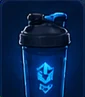
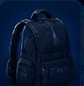
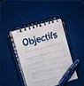
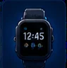

<!doctype html><html lang="fr"><head><meta charset="utf-8"><meta name="viewport" content="width=device-width,initial-scale=1,viewport-fit=cover"><meta name="theme-color" content="#0a0f1f"><meta name="color-scheme" content="dark"><link rel="manifest" href="manifest.webmanifest"><link rel="icon" href="icon-192.png"><link rel="apple-touch-icon" href="icon-192.png"><title>FitBlue Pro</title>
<style>
:root{--bg:#060a14;--c:#0f1629;--c2:#19233f;--l:#ffffff14;--t:#f2f5ff;--m:#7d8aab;--a:#4f8cff;--a2:#22d3ee;--ok:#2dd4a0;--f:"Barlow Condensed","Roboto Condensed","Arial Narrow","sans-serif-condensed",system-ui,sans-serif}
*{box-sizing:border-box;-webkit-tap-highlight-color:transparent}[hidden]{display:none!important}
body{margin:0;color:var(--t);font:15px/1.45 system-ui,-apple-system,"Segoe UI",Roboto,sans-serif;background:radial-gradient(820px 420px at 85% -8%,#1c3f9a55,transparent),var(--bg) fixed;padding-top:env(safe-area-inset-top)}
main{padding:20px 16px 210px;max-width:560px;margin:auto}
h1,.big{font-family:var(--f);font-weight:800;font-style:italic;letter-spacing:-.01em}h1{font-size:40px;line-height:1;margin:4px 0}h2{font:800 italic 24px/1 var(--f);margin:28px 0 12px}.m{color:var(--m);font-size:13px}
.card{background:var(--c);border:1px solid var(--l);border-radius:22px;padding:16px;margin:10px 0}
.hd{display:flex;justify-content:space-between;align-items:center}.lv{width:58px;height:58px;border-radius:50%;background:conic-gradient(var(--a2) var(--p),var(--c2) 0);display:grid;place-items:center;position:relative}.lv::after{content:"";position:absolute;inset:5px;background:var(--bg);border-radius:50%}.lv b{position:relative;z-index:1;font:800 24px var(--f)}
.wkb{display:grid;grid-template-columns:repeat(7,1fr);gap:6px;margin:18px 0 6px}.wd{text-align:center;color:var(--m);font-size:12px;display:grid;gap:5px;justify-items:center;padding:8px 0;border-radius:16px;border:1px solid transparent}.wd.now{background:var(--c);border-color:var(--l);color:var(--t)}
.wd i{width:30px;height:30px;border-radius:50%;display:grid;place-items:center;font:800 15px var(--f);font-style:normal;color:var(--m)}.wd i.sk{border:2px solid var(--k);color:var(--k)}.wd i.dn{background:var(--ok);color:#042b1f}
.hero{position:relative;overflow:hidden;border-radius:28px;padding:22px;margin:14px 0;background:linear-gradient(155deg,var(--sc),#0a1030 92%)}.hero>*{position:relative}
.ltr{position:absolute!important;right:-4px;top:-34px;font:800 italic 210px/1 var(--f);color:#ffffff1f;pointer-events:none}
.chips{display:flex;flex-wrap:wrap;gap:6px;margin:12px 0 18px}.chips span{background:#00000038;border-radius:99px;padding:5px 12px;font-size:13px}
.btn{display:block;border:0;border-radius:16px;padding:16px;font:700 16px system-ui;background:var(--a);color:#fff;width:100%;cursor:pointer;text-align:center}.btn.g{background:var(--c2)}.btn.wh{background:#fff;color:#0a0f1f}.btn.s{width:auto;display:inline-block;padding:9px 16px;font-size:14px}.btn:active{transform:scale(.97)}
.bar{height:8px;background:#ffffff26;border-radius:9px;margin-top:12px;overflow:hidden}.bar i{display:block;height:100%;background:var(--a2);border-radius:9px}
input[type=number],input[type=date]{background:var(--c2);border:1px solid var(--l);color:var(--t);border-radius:14px;padding:12px;width:100%;font:16px inherit}
.chk{display:flex;gap:10px;align-items:center;padding:8px 0}.chk input{width:20px;height:20px;accent-color:var(--ok)}
.li{display:flex;justify-content:space-between;gap:10px;padding:10px 0;border-top:1px solid var(--l)}.li:first-child{border:0}summary{cursor:pointer;display:flex;justify-content:space-between}
.wk{display:grid;grid-template-columns:44px 1fr auto;gap:8px;padding:12px 16px;margin:6px 0}.wk.cur{border-color:var(--a)}
.tr3{display:grid;grid-template-columns:1fr 70px 70px 40px;gap:6px;align-items:center;margin-top:8px}.tr3 input{padding:8px}
.stat{display:grid;grid-template-columns:repeat(3,1fr);gap:8px}.stat div{background:var(--c);border:1px solid var(--l);border-radius:18px;padding:12px;text-align:center}.stat b{font:800 italic 30px var(--f);display:block}
nav{position:fixed;left:12px;right:12px;bottom:calc(10px + env(safe-area-inset-bottom));display:flex;background:#0e1730ee;backdrop-filter:blur(16px);border:1px solid var(--l);border-radius:26px;padding:6px;gap:2px;z-index:10}
nav button{flex:1;background:0;border:0;color:var(--m);padding:8px 0 6px;font:11px system-ui;display:grid;justify-items:center;gap:2px;border-radius:20px}nav button.on{background:var(--c2);color:var(--a2)}
nav svg{width:24px;height:24px;fill:none;stroke:currentColor;stroke-width:2;stroke-linecap:round;stroke-linejoin:round}
#mini{position:fixed;left:12px;right:12px;bottom:calc(84px + env(safe-area-inset-bottom));background:var(--c2);border:1px solid var(--l);border-radius:20px;padding:6px 10px;display:flex;align-items:center;gap:4px;z-index:9;box-shadow:0 8px 30px #0008}
#mini b{flex:1;white-space:nowrap;overflow:hidden;text-overflow:ellipsis;font-size:14px;padding-left:6px}#mini button,.pl{background:0;border:0;color:var(--t);font-size:20px;width:40px;height:40px}
.tk{display:flex;align-items:center;gap:6px;padding:4px 0;border-top:1px solid var(--l)}.tk.on{color:var(--a2)}.tk span{flex:1}
#pl{position:fixed;inset:0;z-index:40;display:flex;flex-direction:column;padding:calc(14px + env(safe-area-inset-top)) 18px calc(18px + env(safe-area-inset-bottom));background:radial-gradient(700px 440px at 50% -6%,color-mix(in srgb,var(--sc) 50%,transparent),transparent),var(--bg);overflow:auto}
.top{display:flex;align-items:center;gap:12px}.top button{width:40px;height:40px;border-radius:50%;border:0;background:var(--c2);color:var(--t);font-size:16px}.pb{flex:1;height:6px;background:#ffffff24;border-radius:9px;overflow:hidden}.pb i{display:block;height:100%;background:var(--sc)}
.sub{margin-top:24px;color:var(--sc);font-weight:700}#pl h1{font-size:46px}.tip{color:var(--m);margin:6px 0 0}
.rw{position:relative;width:min(260px,66vw);aspect-ratio:1;margin:16px auto}.rw svg{width:100%;height:100%;transform:rotate(-90deg)}.rw circle{fill:none;stroke-width:7}.tr{stroke:#ffffff1c}.tp{stroke:var(--sc);stroke-dasharray:327;stroke-linecap:round;transition:stroke-dashoffset .25s linear}
.tn{position:absolute;inset:0;display:grid;place-items:center;font:800 italic 104px var(--f)}
.rep{text-align:center;margin:14px 0}.rep .big{font-size:96px;line-height:1}.ins{display:grid;grid-template-columns:1fr 1fr;gap:10px;margin:14px 0}.ins input{font-size:26px;text-align:center;padding:14px}
.ctl{margin-top:auto;display:flex;gap:10px;padding-top:12px}.ctl .btn{flex:1}.ctl .btn.s{flex:0 0 56px;padding:16px 0}
.nxt{margin-top:12px;background:var(--c);border:1px solid var(--l);border-radius:18px;padding:12px 14px}
#toast{position:fixed;left:50%;top:calc(14px + env(safe-area-inset-top));transform:translate(-50%,-90px);background:#fff;color:#0a0f1f;padding:11px 18px;border-radius:30px;font-weight:600;z-index:99;transition:transform .3s;max-width:92vw;text-align:center}#toast.on{transform:translate(-50%,0)}
@media(max-height:700px){.tn{font-size:76px}#pl h1{font-size:36px}}
@media(prefers-reduced-motion:reduce){*{transition:none!important}}
input[type=text],input[type=time],select{background:var(--c2);border:1px solid var(--l);color:var(--t);border-radius:14px;padding:12px;width:100%;font:16px inherit}
.fg{display:grid;grid-template-columns:1fr 1fr;gap:10px;margin:10px 0}.fg label.btn{margin:0}
.rgs{display:grid;grid-template-columns:repeat(3,1fr);gap:8px;margin:12px 0}.rgc{text-align:center;background:var(--c);border:1px solid var(--l);border-radius:20px;padding:12px 4px}.rn{position:relative;width:64px;height:64px;margin:0 auto 4px}.rn svg{width:64px;height:64px;transform:rotate(-90deg)}.rn circle{fill:none;stroke-width:4}.rt{stroke:#ffffff14}.rp{stroke-linecap:round}.rn b{position:absolute;inset:0;display:grid;place-items:center;font:800 italic 16px var(--f)}.rgc span{display:block;font-size:12px}
.emb{width:60px;height:60px;border-radius:18px;background:linear-gradient(145deg,var(--rc),#0b1020);display:grid;place-items:center;font:800 italic 26px var(--f)}
.bg4{display:grid;grid-template-columns:repeat(4,1fr);gap:8px}.bd{background:var(--c);border:1px solid var(--l);border-radius:18px;padding:10px 2px;text-align:center;font-size:11px;min-height:86px}.bd i{display:block;font-size:26px;font-style:normal}.bd.off{opacity:.35;filter:grayscale(1)}
.ph3{display:grid;grid-template-columns:repeat(3,1fr);gap:8px;margin-top:10px}.ph3>div{position:relative}.ph3 img{width:100%;aspect-ratio:3/4;object-fit:cover;border-radius:14px}.ph3 button{position:absolute;top:4px;right:4px;border:0;border-radius:50%;width:26px;height:26px;background:#000a;color:#fff}
.chc .bar{background:var(--c2)}
.dg{display:grid;grid-template-columns:repeat(7,1fr);gap:6px;margin:8px 0 12px}.dg input{display:none}.dg span{display:block;text-align:center;padding:10px 0;border-radius:12px;background:var(--c2);color:var(--m);font-weight:700;font-size:13px}.dg input:checked+span{background:var(--a);color:#fff}
.demo{display:grid;margin:10px 0}.demo img{grid-area:1/1;width:100%;border-radius:14px}.demo img+img{animation:fl 1.4s steps(1) infinite}.demo.sm{max-width:210px;margin:10px auto}@keyframes fl{0%{opacity:0}50%{opacity:1}}.tps{margin:10px 0 0;padding-left:18px;color:var(--m)}details>summary{list-style:none}
.fxa{display:grid;place-items:center;background:radial-gradient(circle at 50% 62%,#0c1d42,#040b1a 78%);border-radius:18px;padding:10px;margin:10px 0}.fxa img{grid-area:1/1;max-height:300px;max-width:100%;opacity:0;transition:opacity .28s}.fxa img.on{opacity:1}.fxa.sm img{max-height:170px}
.fch{padding-top:6px}.fch>b{display:block;margin:16px 0 6px}.fh{display:flex;align-items:center;gap:10px;margin-bottom:6px}.nb{background:var(--a);color:#fff;border-radius:10px;padding:2px 12px;font:800 italic 20px var(--f)}
.fi{display:grid;gap:10px;margin:8px 0}.mus{display:flex;flex-wrap:wrap;gap:6px;margin-top:4px}.mus span{background:#ff7a2f22;color:#ffab7a;border-radius:99px;padding:4px 12px;font-size:13px}
.stp{display:grid;gap:8px}.sp{display:grid;grid-template-columns:96px 1fr;gap:12px;align-items:center;background:#07122b;border-radius:16px;padding:8px}.sp img{width:96px;height:96px;object-fit:contain}
.two{display:grid;gap:12px;margin-top:14px}.li2{padding:5px 0;font-size:14px}
.vr{display:flex;gap:10px;overflow-x:auto;padding-bottom:6px}.vc{flex:0 0 130px;background:#07122b;border-radius:16px;padding:8px;font-size:13px}.vc img{width:100%;height:84px;object-fit:contain;margin-bottom:4px}
.sp.noi{grid-template-columns:1fr}.fxa.noimg{min-height:90px}.fxa.noimg::after{content:'Illustration à venir';color:var(--m);font-size:13px}
.phi{display:block;width:100%;max-width:360px;max-height:30vh;object-fit:contain;margin:10px auto;border-radius:16px}.tn.lg{font-size:64px}
.zg{display:flex;flex-wrap:wrap;gap:8px;margin-top:8px}.zg input{display:none}.zg span{display:block;padding:9px 14px;border-radius:99px;background:var(--c2);color:var(--m);font-weight:600;font-size:13px}.zg input:checked+span{background:var(--a);color:#fff}
.chs{display:flex;flex-wrap:wrap;gap:6px;margin:6px 0 4px}.ch{border:0;border-radius:99px;padding:9px 14px;background:var(--c2);color:var(--m);font:600 13px system-ui;cursor:pointer}.ch.on{background:var(--a);color:#fff}
.rkimg{position:relative;width:80px;height:94px;flex:none}.rkimg img{width:100%;height:100%;object-fit:contain}.rkimg b{position:absolute;right:-8px;bottom:-2px;background:var(--bg);border:1px solid var(--l);border-radius:99px;padding:1px 9px;font:800 italic 15px var(--f)}.rkm{width:38px;height:46px;object-fit:contain;border-radius:8px}.ic{width:30px;height:30px;object-fit:contain;border-radius:8px;vertical-align:middle}.zg .ic,.zg span .ic{width:22px;height:22px;margin-right:6px;vertical-align:middle}
.bi{display:block;margin:0 auto 4px;width:46px;height:42px;object-fit:contain}
</style></head><body>
<main id="v"></main><div id="mini"></div><nav id="nav"></nav><div id="pl" hidden></div><div id="toast"></div><audio id="au" preload="none" playsinline></audio>
<script>
const $=q=>document.querySelector(q);
let P={};
const W=[['Évaluation','3',1],['Progression','2-3',1],['Progression','2',1],['Deload','4',.65],['Hypertrophie','2',1],['Progression','1-2',1],['Pic du bloc','1',1],['Deload','4',.65],['Intensification','1-2',1],['Qualité et force','1',1],['Semaine forte','1',1],['Tests','—',.5]];
let DAY={2:'A',4:'B',6:'C'};const BL=['Fondations','Hypertrophie','Intensification'],DN=['Dimanche','Lundi','Mardi','Mercredi','Jeudi','Vendredi','Samedi'];
const Q=['Dépasse la version d\'hier.','Chaque série éveille ton ki.','La technique avant l\'ego, comme un vrai maître.','La régularité forge les légendes.','Le repos fait aussi partie de l\'entraînement.','Une rep de plus, un cran plus haut.'];
const TS=['Pompes classiques','Pompes diamant','Tractions','Dead hang (s)','Hollow (s)','Planche (s)','Broad jump (cm)','Bulgare max/jambe'],TT=['Recrue','Initié','Athlète','Titan','Légende'];
let st=JSON.parse(localStorage.fbp2||'null')||{start:new Date().toISOString().slice(0,10),xp:0,logs:[],tests:{},done:{}};
const save=()=>{localStorage.fbp2=JSON.stringify(st)};
const wk=()=>Math.min(12,Math.max(1,Math.floor((Date.now()-new Date(st.start))/6048e5)+1)),bl=w=>Math.ceil(w/4)-1;
const ns=(x,w)=>Math.max(1,Math.round(x[1][bl(w)]*(st.vf||1)*rdF())),rp=(x,w)=>{const a=x[2].split('|');return a[Math.min(bl(w),a.length-1)]};
const nextS=()=>{for(let i=1;i<8;i++){const d=(new Date().getDay()+i)%7;if(DAY[d])return DAY[d]}};
let tab='h',ses=null,tid;
function toast(m){const t=$('#toast');t.textContent=m;t.className='on';clearTimeout(tid);tid=setTimeout(()=>t.className='',2600)}
/* ---------- vues ---------- */
const V={
h(){const w=wk(),d=new Date(),td=d.getDay(),k=DAY[td]||nextS(),n=P[k],dn=st.done[w+'-'+k],L=lv(st.xp),r=rk(L),t=T(),dd=st.logs.map(l=>new Date(l.d).toDateString()),mo=new Date(d);mo.setDate(d.getDate()-(td+6)%7);
const sp=[1,2,3,4,5,6,0].map((g,i)=>{const x=new Date(mo);x.setDate(mo.getDate()+i);const f=dd.includes(x.toDateString()),sk=DAY[g];return `<div class="wd ${g==td?'now':''}"><span>${'LMMJVSD'[i]}</span><i class="${f?'dn':sk?'sk':''}" style="--k:${sk?SC[sk]:'#fff'}">${f?'✓':sk||''}</i></div>`}).join('');
return `<div class="hd"><div><div class="m">${DN[td]} ${d.toLocaleDateString('fr-FR',{day:'numeric',month:'long'})}</div><h1>Salut${nm()?' '+nm():''}</h1></div><div class="lv" onclick="go('g')" style="--p:${(st.xp-xl(L))/(xl(L+1)-xl(L))*100}%"><b>${L}</b></div></div>
<div class="wkb">${sp}</div>${bn()}
<div class="hero" style="--sc:${SC[k]}"><div class="ltr">${k}</div><div style="opacity:.8">${DAY[td]?'Séance du jour':'Prochaine séance, '+DN[dayOf(k)]}</div><h1 style="font-size:52px;margin:6px 0">${n.n}</h1><div class="chips"><span>${n.min} min</span><span>${n.x.length} exercices</span><span>${W[w-1][1]} rép. en réserve</span></div><button class="btn wh" onclick="ses={k:'${k}',w:${w}};render()">${dn?'Refaire la séance':'Voir la séance'}</button></div>
${t?`<div class="rgs">${rg(sm('k'),t.kc,'#fb923c','Calories',Math.round(sm('k')),'/ '+t.kc)}${rg(sm('p'),t.pr,'#4f8cff','Protéines',Math.round(sm('p')),'/ '+t.pr+' g')}${rg(st.wa[dk()]||0,t.wa,'#22d3ee','Eau',((st.wa[dk()]||0)/1000).toFixed(1),'/ '+(t.wa/1000).toFixed(1)+' L')}</div>`:`<div class="card" onclick="go('r')"><b>Crée ton profil</b><div class="m">Pour obtenir tes objectifs du jour en calories, protéines et eau.</div></div>`}
${qc()}${wkc()}<div class="card" onclick="go('g')" style="display:flex;gap:12px;align-items:center">${rkI(r,'class="rkm" style="width:50px;height:60px"')}<div><div class="m">Ton rang</div><b style="color:${RC[r]};font-size:18px">${RK[r]}</b> <span class="m">niveau ${L}, ${st.xp} XP, 🔥 ${streak()} j</span></div></div>
<div class="card"><div class="m">Coach FitBlue</div><div style="font:800 italic 22px/1.15 var(--f);margin-top:4px">${Q[Math.floor(Date.now()/864e5)%Q.length]}</div></div>`},
p(){const w=wk();return `<h1>Programme</h1><div class="m">${st.plan?'Cycle '+(st.cy||1)+', semaine '+w+' sur 12, '+phase():'Programme FitBlue, semaine '+wk()+' sur 12, '+phase()}</div><button class="btn g s" style="margin-top:10px" onclick="go('b')">${st.plan?'Refaire mon bilan':'Personnaliser avec le coach'}</button> <button class="btn g s" style="margin-top:10px" onclick="go('x')">Bibliothèque d\'exercices</button><details class="card"><summary><b>Règles de ton programme</b></summary>${RULES.map(r=>`<div class="li"><span class="m">${r}</span></div>`).join('')}</details><h2>Séances</h2>`+Object.keys(P).map(k=>`<details class="card"><summary><b>Séance ${k} : ${P[k].n}</b><span class="m">${DN[dayOf(k)]}</span></summary>${P[k].x.map(x=>`<div class="li"><span>${x[0]}</span><span class="m">${ns(x,w)}×${rp(x,w)}${x[3]}</span></div>`).join('')}</details>`).join('')+`<h2>Les 12 semaines</h2>`+W.map((x,i)=>`<div class="card wk ${i+1==w?'cur':''}"><b>S${i+1}</b><span>${x[0]}</span><span class="m">RIR ${x[1]}</span></div>`).join('')},
g(){const s=S(),L=lv(st.xp),r=rk(L),p=pw(),gp=Math.round(p.reduce((a,b)=>a+b)/p.length),lo=xl(L),hi=xl(L+1),u=bc(s),wt=st.wt.slice(-10);
return `<h1>Progression</h1>
<div class="card"><div style="display:flex;gap:14px;align-items:center"><div class="rkimg">${rkI(r)}<b style="color:${RC[r]}">${L}</b></div><div style="flex:1"><div class="big" style="font-size:30px;color:${RC[r]}">${RK[r]}</div><div class="m">Niveau ${L}, ${st.xp} XP</div><div class="m">${TI()}, 🔥 ${streak()} jours</div></div></div><div class="bar"><i style="width:${(st.xp-lo)/(hi-lo)*100}%"></i></div><div class="m" style="margin-top:6px">${hi-st.xp} XP pour le niveau ${L+1}</div><div style="display:flex;gap:8px;margin-top:12px"><button class="btn g s" onclick="showRk=!showRk;render()">${showRk?'Masquer':'Voir'} les rangs</button><button class="btn s" onclick="sh()">Partager mon rang</button></div>${showRk?'<div style="margin-top:10px">'+RK.map((n,i)=>`<div class="li"><div><span style="display:flex;gap:10px;align-items:center;color:${RC[i]};${i>r?'opacity:.55':''}">${rkI(i,'class="rkm"')}<span>${n}${i>r?' 🔒':''}</span></span><div class="m">${RQ[i]}</div></div><span class="m">Niv. ${i*10+1} à ${i*10+10}${i==r?', tu es ici':''}</span></div>`).join('')+'</div>':''}</div>
${prof()}<h2>Carte de puissance</h2><div class="card">${radar(p)}<div class="m" style="text-align:center">Puissance globale <b style="color:var(--t);font-size:22px">${gp}</b> sur 100, sur tes 28 derniers jours</div></div>
${evoH()}${bossH(s)}<h2>Défis de la semaine</h2>${CH.map((c,i)=>{const v=c[2](s),tg=c[3](r),k=s.w.key+i;return `<div class="card chc"><div style="display:flex;justify-content:space-between"><b> ${c[0]}</b><span class="m">+${c[4]} XP</span></div><div class="m">${c[1]} (${Math.min(v,tg)}/${tg})</div><div class="bar"><i style="width:${Math.min(1,v/tg)*100}%"></i></div>${st.cl[k]?'<div class="m" style="margin-top:8px">Réclamé ✅</div>':v>=tg?`<button class="btn s" style="margin-top:10px" onclick="cl('${k}',${c[4]})">Réclamer</button>`:''}</div>`}).join('')}
<h2>Badges <span class="m">${u}/${BT}</span></h2>${bgH(s)}
<h2>Évolution</h2><div class="card">${wt.length>1?(()=>{const a=wt.map(x=>x.w),mn=Math.min(...a),df=Math.max(...a)-mn||1;return `<svg viewBox="0 0 240 70" width="100%"><polyline fill="none" stroke="#22d3ee" stroke-width="3" points="${a.map((v,i)=>(i*240/(a.length-1)).toFixed(0)+','+(60-(v-mn)/df*50).toFixed(0)).join(' ')}"/></svg><div class="m">Poids : ${a[0]} kg à ${a[a.length-1]} kg</div>`})():'<div class="m">Mets ton poids à jour dans ton profil pour voir ta courbe.</div>'}</div>
<h2>Photos de suivi</h2><div class="card"><select id="pa2"><option>Face</option><option>Profil</option><option>Dos</option></select><div class="fg"><label class="btn g" style="padding:12px">Galerie (plusieurs)<input type="file" accept="image/*" multiple hidden onchange="ap(this.files);this.value=''"></label><label class="btn g" style="padding:12px">Appareil photo<input type="file" accept="image/*" capture="environment" hidden onchange="ap(this.files);this.value=''"></label></div>${PH.length?`<div class="ph3">${PH.map(x=>`<div><button onclick="dp(${x.id})">✕</button><span class="m">${x.a}, ${new Date(x.d).toLocaleDateString('fr-FR')}</span></div>`).join('')}</div>`:'<div class="m">Une photo toutes les 4 semaines, même lumière, même distance.</div>'}</div>`+V.g2()},
n(){const t=T();if(!t)return `<h1>Nutrition</h1><div class="card">Crée ton profil pour obtenir tes objectifs de calories, protéines et eau.</div><button class="btn" onclick="go('r')">Créer mon profil</button>`;
const k=sm('k'),p=sm('p'),g=sm('g'),l=sm('l'),w=st.wa[dk()]||0,it=dm().map((x,i)=>[x,i]),bar=(n,v,tt,c)=>`<div style="margin:10px 0"><div style="display:flex;justify-content:space-between"><span>${n}</span><span class="m">${Math.round(v)} / ${tt}</span></div><div class="bar" style="background:var(--c2);margin-top:4px"><i style="background:${c};width:${Math.min(100,v/tt*100)}%"></i></div></div>`;
return `<h1>Nutrition</h1><div class="m">Ton énergie du jour, calculée pour ton objectif</div>
<div class="card">${bar('Calories',k,t.kc,'#fb923c')}${bar('Protéines (g)',p,t.pr,'#4f8cff')}${bar('Glucides (g)',g,t.ca,'#facc15')}${bar('Lipides (g)',l,t.fa,'#34d399')}${bar('Eau (ml)',w,t.wa,'#22d3ee')}<div style="display:flex;gap:8px;margin-top:14px"><button class="btn g s" onclick="wa(-250)">− 250</button><button class="btn s" onclick="wa(250)">+ 250 ml</button><button class="btn s" onclick="wa(500)">+ 500 ml</button></div></div>
<h2>Ajouter un aliment</h2><div class="card"><input id="fq" type="text" placeholder="Rechercher : igname, poulet, niébé…" value="${fs.q}" oninput="fi(this.value)"><div id="fb">${fbH()}</div><details style="margin-top:10px"><summary class="m">Saisie libre</summary><input id="cn" type="text" placeholder="Nom de l'aliment" style="margin-top:8px"><div class="fg"><input id="ck" type="number" inputmode="numeric" placeholder="kcal"><input id="cp" type="number" inputmode="decimal" placeholder="protéines g"></div><button class="btn g s" onclick="amc()">Ajouter</button></details></div>
<h2>Mes repas</h2>${SL.map(s=>{const a=it.filter(([x])=>x.s==s);return a.length?`<div class="card"><b>${s}</b>${a.map(([x,i])=>`<div class="li"><span>${x.n}</span><span class="m">${x.k} kcal, ${x.p} g <button class="pl" style="width:28px;height:28px;font-size:14px" onclick="dl(${i})">✕</button></span></div>`).join('')}</div>`:''}).join('')||'<div class="m">Rien d\'ajouté aujourd\'hui.</div>'}
<h2>Conseils</h2>${adv().map(a=>`<div class="card">${a}</div>`).join('')}
<h2>Question du jour</h2>${qzH()}
<h2>Collection d'aliments</h2><div class="card">${colH()}</div>
<h2>Liste de courses (7 jours)</h2><div class="card"><div class="m">Quantités adaptées à tes besoins en calories.</div>${shH(t)}</div>`},
r(){const p=st.pf||{},t=T(),o=(v,a)=>a.map(([k,l])=>`<option value="${k}" ${p[v]==k?'selected':''}>${l}</option>`).join('');
return `<div class="hd"><h1>${p.n?'Mon profil':'Bienvenue'}</h1></div><div class="m">${p.n?'Tes objectifs se calculent à partir de ces informations.':'Crée ton profil pour personnaliser tes calories, tes protéines et ton eau.'}</div>
<div class="card"><div class="m">Pseudo</div><input id="pn" type="text" maxlength="20" value="${p.n||''}" placeholder="Ton pseudo"><div class="fg"><div><div class="m">Sexe</div><select id="ps">${o('sx',[['h','Homme'],['f','Femme']])}</select></div><div><div class="m">Âge</div><input id="pa" type="number" inputmode="numeric" value="${p.age||''}"></div><div><div class="m">Taille (cm)</div><input id="ph" type="number" inputmode="numeric" value="${p.h||''}"></div><div><div class="m">Poids (kg)</div><input id="pw" type="number" inputmode="decimal" value="${p.w||''}"></div></div><div class="m">Mon focus</div><select id="pg">${o('g',[['gain','Prendre du muscle'],['perte','Perdre du gras'],['maintien','Maintien, recomposition']])}</select><div class="m" style="margin-top:10px">Activité hors séances</div><select id="pc">${o('act',[['s','Sédentaire'],['l','Légèrement actif'],['m','Actif'],['a','Très actif']])}</select><div class="m" style="margin-top:10px">Matériel disponible</div><select id="pe">${o('eq',[['sac','Sac à dos'],['aucun','Aucun matériel'],['barre','Sac à dos et barre de traction']])}</select><div style="height:12px"></div><button class="btn" onclick="sp()">Enregistrer</button></div>
${t?`<div class="card"><b>Tes objectifs du jour</b><div class="m">${t.kc} kcal, ${t.pr} g de protéines, ${t.ca} g de glucides, ${t.fa} g de lipides, ${t.wa} ml d'eau</div></div>`:''}
${bmiCard()}<div class="card m">Tes données restent sur ce téléphone. La connexion avec sauvegarde en ligne demande un serveur, à ajouter plus tard.</div>`+rmc()+V.m()+V.r2()},
ev(){const L=st.ev||[],E=L[L.length-1],bar=(st.pf&&st.pf.eq)=='barre';
if(st.evShow&&E){const rk0=RK[rk(lv(st.xp))],nxt=st.plan&&wr()<=12?'h':'b',cmp=L.length>1?`<div class="card"><b>Tes progrès</b>${[['Pompes','pu'],['Squats','sq'],['Planche','pk']].concat(E.bar?[['Tractions','pl']]:[]).map(([n,k])=>`<div class="li"><span>${n}</span><span>${L[0][k]} → ${E[k]}${k=='pk'?' s':''}</span></div>`).join('')}<div class="li"><span>Rang</span><span>${L[0].rk} → ${rk0}</span></div></div>`:'';
return `<h1>Évaluation terminée 🔥</h1><div style="text-align:center">${rkI(rk(lv(st.xp)),'style="height:160px"')}</div><div class="card"><div class="li"><span>Niveau</span><b>${E.lvl}</b></div><div class="li"><span>Rang</span><b style="color:${RC[rk(lv(st.xp))]}">${rk0}</b></div><div class="li"><span>Tes points forts</span><span>${E.forts.join(' / ')||'Équilibré'}</span></div><div class="li"><span>À développer</span><span>${E.faibles.join(' / ')||'Rien de marquant'}</span></div><div class="li"><span>Difficulté recommandée</span><span class="m" style="text-align:right;max-width:60%">${REC[E.lvl]}</span></div></div>${cmp}<button class="btn" onclick="st.evShow=0;save();go('${nxt}')">${nxt=='h'?'Continuer':'Créer mon programme'}</button>`}
return `<h1>${L.length?'Nouvelle évaluation':'Évaluation initiale'}</h1><div class="m">${L.length?'Refais les mêmes tests pour mesurer tes progrès.':'Fais ces tests après un bon échauffement : ils déterminent ton niveau et ton rang de départ. Le programme par défaut reste disponible en attendant.'}</div>
<div class="card"><b>Pompes classiques</b><div class="m">Maximum propre en une seule série, poitrine près du sol, corps aligné.</div><input id="ev_pu" type="number" inputmode="numeric" placeholder="Répétitions" style="margin-top:8px"></div>
<div class="card"><b>Squats</b><div class="m">Maximum en une série, cuisses au moins parallèles au sol.</div><input id="ev_sq" type="number" inputmode="numeric" placeholder="Répétitions" style="margin-top:8px"></div>
<div class="card"><b>Planche sur les avant-bras</b><div class="m">Tiens jusqu'à perdre l'alignement (secondes).</div><input id="ev_pk" type="number" inputmode="numeric" placeholder="Secondes" style="margin-top:8px"></div>
${bar?`<div class="card"><b>Tractions</b><div class="m">Maximum propre, menton au-dessus de la barre.</div><input id="ev_pl" type="number" inputmode="numeric" placeholder="Répétitions" style="margin-top:8px"></div>`:'<input id="ev_pl" type="hidden" value="0">'}
<div class="card"><b>Difficulté ressentie</b><div class="m">Comment as-tu trouvé l'ensemble des tests ?</div><select id="ev_df" style="margin-top:8px"><option value="facile">Facile</option><option value="correcte" selected>Correcte</option><option value="difficile">Difficile</option><option value="tres">Très difficile</option></select></div>
<div class="card m">Si tu ne peux pas faire un test, mets 0. Arrête-toi en cas de douleur.</div><button class="btn" onclick="evDone()">Terminer l'évaluation</button>`},
b(){if(!st.ev0||st.evShow||(st.plan&&wr()>12&&Date.now()-st.ev[st.ev.length-1].d>40*864e5))return V.ev();const b=(st.plan&&st.plan.bl)||{days:[2,4,6],dur:45},E=st.ev[st.ev.length-1],end=st.plan&&wr()>12,zs=b.zf||[],o2=b.ob2||[];
return `<h1>${end?'Nouveau programme':'Mon programme'}</h1><div class="m">${end?'Cycle '+(st.cy||1)+' terminé : le coach génère ton prochain programme à partir de ta nouvelle évaluation.':'Niveau : '+E.lvl+'. Dis au coach ce que tu veux atteindre : il construit ton programme sur 12 semaines.'}</div>
<div class="card"><b>Objectif principal</b>${OBL.map(([k,l])=>`<label class="chk"><input type="radio" name="ob1" value="${k}" ${b.ob==k?'checked':''}>${l.replace(/^\S+\s/,'')}</label>`).join('')}</div>
<div class="card"><b>Objectifs secondaires</b><div class="m">Jusqu'à 2 en plus de l'objectif principal.</div><div class="zg">${OBL.map(([k,l])=>`<label><input type="checkbox" class="ob2" value="${k}" ${o2.includes(k)?'checked':''} onchange="ob2c()"><span>${l.replace(/^\S+\s/,'')}</span></label>`).join('')}</div></div>
<div class="card"><b>Zones prioritaires</b><div class="m">Une ou plusieurs (aucune = tout le corps). Le reste du corps garde un travail équilibré.</div>${ZFG.map(([g,a])=>`<div class="m" style="margin-top:10px">${g}</div><div class="zg">${a.map(([k,l])=>`<label><input type="checkbox" class="zf" value="${k}" ${zs.includes(k)?'checked':''}><span>${l}</span></label>`).join('')}</div>`).join('')}</div>
<div class="card"><b>Disponibilité</b><div class="m">Jours d'entraînement (de 2 à 5)</div><div class="dg">${[1,2,3,4,5,6,0].map(d=>`<label><input type="checkbox" id="d${d}" ${b.days.includes(d)?'checked':''}><span>${DN[d].slice(0,3)}</span></label>`).join('')}</div><div class="m">Durée maximale d'une séance</div><select id="qd">${[30,45,60].map(x=>`<option value="${x}" ${(b.dur||45)==x?'selected':''}>${x} min</option>`).join('')}</select><div class="m" style="margin-top:6px">Un débutant commence vers 30 min : la durée augmente progressivement jusqu'à ce maximum.</div><div class="m" style="margin-top:10px"> Matériel</div><select id="qe">${[['aucun','Aucun matériel'],['sac','Sac à dos'],['barre','Sac à dos et barre de traction']].map(([k,l])=>`<option value="${k}" ${((st.pf&&st.pf.eq)||'sac')==k?'selected':''}>${l}</option>`).join('')}</select></div>
<div class="card"><b>Préférences</b><label class="chk"><input type="checkbox" id="qnj" ${b.nj?'checked':''}>Éviter les sauts</label><label class="chk"><input type="checkbox" id="qcp" ${b.cp?'checked':''}>Ajouter plus de cardio</label></div>
<button class="btn" onclick="gp()">Générer mon programme</button>`},
g2(){const L=st.logs.slice(-12),mx=Math.max(1,...L.map(l=>l.c)),tot=st.logs.reduce((a,l)=>a+l.c,0);
return `<h2>Statistiques</h2><div class="stat"><div><b>${st.logs.length}</b><span class="m">séances</span></div><div><b>${tot}</b><span class="m">séries</span></div><div><b>${st.xp}</b><span class="m">XP</span></div></div>
<h2>Séries validées par séance</h2><div class="card">${L.length?`<svg viewBox="0 0 240 90" width="100%">${L.map((l,i)=>`<rect x="${i*20+3}" y="${80-l.c/mx*70}" width="14" height="${l.c/mx*70}" rx="4" fill="#3b82f6"/><text x="${i*20+10}" y="89" fill="#8e9bbd" font-size="7" text-anchor="middle">${l.s}</text>`).join('')}</svg>`:'<span class="m">Termine ta première séance pour voir ta courbe.</span>'}</div>
<h2>Tests (début et fin)</h2><div class="card"><div class="tr3 m"><span></span><span>Début</span><span>Fin</span><span></span></div>${TS.map((t,i)=>{const a=+(st.tests[i]||[])[0],b=+(st.tests[i]||[])[1],df=a&&b?b-a:null;return `<div class="tr3"><span>${t}</span><input type="number" inputmode="decimal" value="${(st.tests[i]||[])[0]??''}" onchange="tt(${i},0,this.value)"><input type="number" inputmode="decimal" value="${(st.tests[i]||[])[1]??''}" onchange="tt(${i},1,this.value)"><b style="color:${df>0?'var(--ok)':'var(--m)'}">${df==null?'':(df>0?'+':'')+df}</b></div>`}).join('')}</div>
<h2>Historique</h2>${st.logs.slice(-6).reverse().map(l=>`<div class="card"><b>Séance ${l.s}</b> <span class="m">semaine ${l.w}, ${new Date(l.d).toLocaleDateString('fr-FR')}, ${l.c} séries</span></div>`).join('')||'<div class="m">Aucune séance enregistrée.</div>'}`},
m(){return `<h2>Ma musique</h2><div class="m">Ajoute tes propres morceaux : ils restent sur ton téléphone, même hors ligne, et tournent en boucle.</div><div style="height:12px"></div><label class="btn" style="display:block;text-align:center">+ Importer des musiques<input type="file" accept="audio/*,.m4a,.mp3,.aac,.wav,.ogg" multiple hidden onchange="imp(this.files)"></label><div class="card">${TR.length?'':'<div class="m">Aucun morceau pour le moment.</div>'}${TR.map((t,i)=>`<div class="tk ${i==cur?'on':''}"><button class="pl" onclick="play(${i})">${i==cur&&!au.paused?'⏸':'▶'}</button><span>${t.n}</span>${t.id?`<button class="pl" onclick="del(${t.id})">✕</button>`:''}</div>`).join('')}</div>`},
r2(){return `<h2>Réglages</h2><div class="card"><label class="chk"><input type="checkbox" ${st.voice!==false?'checked':''} onchange="st.voice=this.checked;save()">Voix du coach pendant la séance</label><label class="chk"><input type="checkbox" ${st.auto?'checked':''} onchange="st.auto=this.checked;save()">Lancer la musique au début de la séance</label><label class="chk"><input type="checkbox" ${st.au!==false?'checked':''} onchange="st.au=this.checked;save();render()">Aura de rang (couleur d\'accent)</label></div><div class="card"><div class="m">Début du programme</div><input type="date" value="${st.start}" onchange="st.start=this.value;save();render()"></div>${ip?'<button class="btn" style="margin:10px 0" onclick="ip.prompt()">Installer l\'application</button>':''}<button class="btn g" style="margin:6px 0" onclick="exp()">Exporter mes données</button><button class="btn g" style="color:#f87171" onclick="if(confirm('Tout effacer ? Séances, tests et XP seront perdus.')){localStorage.removeItem('fbp2');location.reload()}">Tout réinitialiser</button>`}};
const SC={A:'#4f8cff',B:'#ffb020',C:'#ff5a5f',D:'#a78bfa',E:'#2dd4a0',Q:'#c084fc',M:'#2dd4a0'};
const WU=[['Jumping jacks',30],['Montées de genoux',30],['Cercles de bras',20],['Rotations de hanches',20],['Cercles de chevilles',20]];
let pl=null;
function SV(){const{k,w}=ses,n=P[k],qq=qsIdx(w,k);if(qq!==null&&!ses.nq&&!st.done[w+'-'+k])return QV(qq,k,w);return `<button class="btn g s" onclick="ses=null;render()">Retour</button><div class="hero" style="--sc:${SC[k]};margin-top:12px"><div class="ltr">${k}</div><h1 style="font-size:46px">${n.n}</h1><div class="chips"><span>${n.min} min</span><span>Semaine ${w}</span><span>${W[w-1][1]} rép. en réserve</span></div></div>
<div class="card"><div class="li"><b>Échauffement</b><span class="m">2 min, guidé</span></div>${n.x.map(x=>`<div class="li"><span style="display:flex;gap:10px;align-items:center">${x[8]?``:''}${x[0]}</span><span class="m">${ns(x,w)}×${rp(x,w)}${x[3]}, repos ${x[4]||20} s</span></div>`).join('')}<div class="li"><b>Étirements</b><span class="m">5 min, guidé</span></div></div>
<div class="card"><b>Comment te sens-tu aujourd'hui ?</b><div class="m">Le coach ajuste la séance à ta forme.</div><div class="fg" style="grid-template-columns:repeat(4,1fr)">${[['F','En forme'],['N','Normal'],['T','Fatigué'],['E','Épuisé']].map(([q,l])=>`<button class="btn ${((st.rd||{})[dk()]||'N')==q?'':'g'} s" style="padding:9px 4px" onclick="rdSet('${q}')">${l}</button>`).join('')}</div><div class="m">${({T:'Volume réduit de 25 %. Garde 3 répétitions en réserve.',E:'Volume réduit de moitié. Si tu as mal ou la tête qui tourne, repose-toi aujourd\'hui.'})[(st.rd||{})[dk()]]||'Séance prévue, sans changement.'}</div></div><div class="card m">Tout est guidé : voix, compte à rebours des 3 dernières secondes, chrono pour les gainages et repos après chaque série.</div><button class="btn" onclick="go2()">Démarrer la séance</button>`}
function build(k,w){const n=P[k],S=[{t:'p',n:'Prêt ?',d:5,sub:'La séance démarre'}];
WU.forEach(([a,d])=>S.push({t:'w',n:a,d,sub:'Échauffement'}));
n.x.forEach((x,i)=>{const c=ns(x,w),R=rp(x,w),T=/s$/.test(R),[lo,hi=lo]=R.replace(' s','').split('-').map(x=>+x||0),sd=T&&/côté/.test(x[3]);
for(let j=0;j<c;j++){(sd?['gauche','droit']:[0]).forEach(sx=>S.push({t:T?'h':'e',n:x[0],i,j,c,R,lo,hi,u:x[3],tip:x[6],sx,img:x[8],dur:lo,up:x[7]=='q',sub:'Exercice '+(i+1)+' sur '+n.x.length}));if(j==c-1&&x[7]!='q'&&k!='Q'&&k!='M')S.push({t:'f',n:x[0],sub:'Ton ressenti'});if(i<n.x.length-1||j<c-1)S.push({t:'r',d:x[4]||20,sub:'Repos'})}});
n.st.forEach(z=>{const m=z.match(/^(.*) (\d+) s(\/côté)?$/);(m[3]?['gauche','droit']:[0]).forEach(sx=>S.push({t:'z',n:m[1],d:m[3]?(n.sd||20):+m[2],sx,sub:'Étirements'}))});return S}
function go2(){const{k,w}=ses,q=ses.q;ses=null;if(q!==undefined){const keep=P;P=Object.assign({},P,{Q:qSess(q)});const S=build('Q',w);P=keep;qIns(S,q);pl={k:'Q',rk:k,q,w,S,i:0,e:{},c:0,t0:Date.now()}}else pl={k,w,S:build(k,w),i:0,e:{},c:0,t0:Date.now()};if(st.auto&&cur<0)play(0);try{navigator.wakeLock.request('screen').then(l=>pl.wl=l)}catch(e){}enter()}
const nextN=i=>pl.S.slice(i+1).find(x=>x.t!='r'&&x.t!='f');
function speak(t){if(st.voice===false||!window.speechSynthesis)return;const u=new SpeechSynthesisUtterance(t);u.lang='fr-FR';u.onstart=()=>au.volume=.35;u.onend=()=>au.volume=1;speechSynthesis.cancel();speechSynthesis.speak(u)}
function enter(){const s=pl.S[pl.i];clearInterval(pl.ti);pl.paused=0;pl.lb=-1;pl.hf=0;pl.h10=0;pl.pr=0;if(s.d)pl.end=Date.now()+s.d*1e3;if(s.t=='h'){pl.ph='ready';pl.end=Date.now()+5e3}
const nx=nextN(pl.i),sx=s.sx?', côté '+s.sx:'',T={p:'Prêt ? On commence.',w:s.n,z:s.n+sx,h:s.n+sx+', prends la position',e:s.n+', série '+(s.j+1)+' sur '+s.c+', '+s.R+' répétitions. '+(s.j==0?vFirst(s.tip):s.j==s.c-1?'Dernière série, donne tout !':vEnc()),r:vEnc()+'. Repos, '+s.d+' secondes.'+(s.d>30?' '+vAdv():'')+' Ensuite, '+(nx?nx.n:''),f:'Comment était cet exercice ?'};speak(T[s.t]);
if(s.t!='e'&&s.t!='f')pl.ti=setInterval(tick,200);draw()}
function val(){const s=pl.S[pl.i],tm=s.d?Math.max(0,Math.ceil((pl.end-Date.now())/1e3)):0;if(s.t=='h'&&pl.ph=='run'){if(s.up){const el=Math.floor((Date.now()-pl.run)/1e3);return[el,Math.min(1,el/(s.hi||s.lo||1))]}const rm=Math.max(0,Math.ceil((pl.end-Date.now())/1e3));return[rm,rm/s.dur]}if(s.t=='h')return[tm,tm/5];return[tm,s.d?tm/s.d:0]}
function tick(){if(pl.paused)return;const s=pl.S[pl.i],[v]=val();vCues(s,v);
if(s.t=='h'&&pl.ph=='run'){if(s.up){if(v!=pl.lb){pl.lb=v;(v==s.lo||v==s.hi)&&beep(1200)}}else{if(v<=3&&v>0&&v!=pl.lb){pl.lb=v;cd3(v)}if(v<=0){beep(1000);done(1);return}}}
else{if(v<=3&&v>0&&v!=pl.lb){pl.lb=v;cd3(v)}if(v<=0){if(s.t=='h'){pl.ph='run';pl.run=Date.now();pl.end=Date.now()+s.dur*1e3;pl.lb=-1;beep(1000);speak(vFirst(s.tip)||'Go !');draw()}else nxt();return}}upd()}
function upd(){const[v,r]=val(),n=$('#pl .tn');if(n){n.textContent=fm(v);n.className='tn'+(v>=100?' lg':'');$('#pl .tp').style.strokeDashoffset=327*(1-r)}}
function pz(){if(pl.paused){pl.end=Date.now()+pl.rem;pl.paused=0}else{pl.rem=pl.end-Date.now();pl.paused=1}draw()}
function draw(){const s=pl.S[pl.i],N=pl.S.length,nx=nextN(pl.i),[v,r]=val();let h='',btn='',cap=s.tip||'',ttl=s.n;
if(s.sx)ttl+=` <span style="font-size:.55em;opacity:.7">côté ${s.sx}</span>`;
if(s.t=='h'){if(pl.ph=='ready'){cap='Mets-toi en position';btn=`<button class="btn" onclick="pl.ph='run';pl.run=Date.now();pl.end=Date.now()+pl.S[pl.i].dur*1e3;pl.lb=-1;draw()">Commencer</button>`}else{cap=(s.up?`Objectif : ${s.lo} à ${s.hi} s. `:'Tiens jusqu\'à zéro. ')+(s.tip||'');btn=`<button class="btn" onclick="done()">Terminé</button>`}}
else if(s.t=='e'){const lg=[...st.logs].reverse().find(l=>l.s==pl.k&&l.e[s.n]),pv=lg&&lg.e[s.n][s.j];
h=`<div class="rep"><div class="m">Objectif</div><div class="big">${s.R}</div><div class="m">répétitions${s.u}</div></div><div class="ins"><div><div class="m">Répétitions faites</div><input id="pr" type="number" inputmode="numeric" placeholder="${s.lo}"></div><div><div class="m">Charge (kg)</div><input id="pk" type="number" inputmode="decimal" value="${pv&&pv.k?pv.k:''}" placeholder="0"></div></div>${pv?`<div class="m" style="text-align:center">Dernière fois : ${pv.r} rép.${pv.k?' à '+pv.k+' kg':''}</div>`:''}`;btn=`<button class="btn" onclick="done()">Série terminée</button>`}
else if(s.t=='f'){ttl='Ton ressenti';cap=s.n;h=fbHtml(s.n);btn=`<button class="btn" onclick="fbNext()">Continuer</button>`}else if(s.t=='r'){ttl='Repos';cap='Respire, hydrate-toi.';btn=`<button class="btn g" onclick="pl.end+=15e3;pl.S[pl.i].d+=15;draw()">+15 s</button><button class="btn" onclick="nxt()">Passer</button>`}
else btn=`<button class="btn g" onclick="pz()">${pl.paused?'Reprendre':'Pause'}</button><button class="btn" onclick="nxt()">Suivant</button>`;
const P2=$('#pl');P2.hidden=false;P2.style.setProperty('--sc',SC[pl.k]);
P2.innerHTML=`<div class="top"><button onclick="quit()">✕</button><div class="pb"><i style="width:${pl.i/N*100}%"></i></div><span class="m">${pl.i+1}/${N}</span></div><div class="sub">${s.sub}</div><h1>${ttl}</h1><div class="tip">${cap}</div>${s.img?``:demoFor(s.n)}${s.t!='e'&&s.t!='f'?`<div class="rw"><svg viewBox="0 0 120 120"><circle cx="60" cy="60" r="52" class="tr"/><circle cx="60" cy="60" r="52" class="tp" style="stroke-dashoffset:${327*(1-r)}"/></svg><b class="tn${v>=100?' lg':''}">${fm(v)}</b></div>`:''}${h}<div class="ctl"><button class="btn g s" onclick="prv()">◀</button>${btn}</div><div class="nxt"><span class="m">Suivant</span><br><b>${nx?nx.n+(nx.sx?' (côté '+nx.sx+')':''):'Fin de séance'}</b></div>`}
function done(full){const s=pl.S[pl.i];let r,k=0;if(s.t=='e'){r=+$('#pr').value||s.lo;k=+$('#pk').value||0}else r=full?s.dur:s.up?Math.floor((Date.now()-pl.run)/1e3):Math.min(s.dur,Math.floor((Date.now()-pl.run)/1e3));(pl.e[s.n]=pl.e[s.n]||[]).push({r,k});pl.c++;nxt()}
function nxt(){if(pl.i>=pl.S.length-1)return fin();pl.i++;enter()}
function prv(){let i=pl.i-1;while(i>0&&(pl.S[i].t=='r'||pl.S[i].t=='f'))i--;pl.i=Math.max(0,i);enter()}
function quit(){if(confirm('Arrêter la séance ?'))fin(1)}
function fin(q){clearInterval(pl.ti);try{speechSynthesis.cancel();pl.wl&&pl.wl.release()}catch(e){}au.volume=1;$('#pl').hidden=true;const c=pl.c,m=Math.max(1,Math.round((Date.now()-pl.t0)/6e4));
if(c){const L1=lv(st.xp),xm=L1<=30?1:L1<=60?.85:L1<=90?.7:.55,g=Math.round((c*3+(q?0:30))*xm)+hardSets(pl.e)*4,l0=L1;st.logs.push({d:Date.now(),s:pl.rk||pl.k,w:pl.w,c,m,e:pl.e,fb:pl.fb||{}});st.xp+=g;if(lv(st.xp)>l0)setTimeout(()=>rk(lv(st.xp))>rk(l0)?celebrate('Nouveau rang : '+RK[rk(lv(st.xp))],RQ[rk(lv(st.xp))],rk(lv(st.xp))):toast('Niveau '+lv(st.xp)+', rang '+RK[rk(lv(st.xp))]),3000);if(!q)st.done[pl.w+'-'+(pl.rk||pl.k)]=1;if(!q&&pl.k!='M'&&pl.q===undefined){masteryUpdate();if(st.plan){Object.assign(st.plan,mk(st.plan.bl,st.plan.ad));P=st.plan.sess}else setDefault()}if(pl.q!==undefined&&!q)qDone();save();toast((q?'Séance enregistrée':'Bravo'+(nm()?' '+nm():'')+' ! 🔥')+', '+m+' min, +'+g+' XP');if(!q)speak('Bravo'+(nm()?' '+nm():'')+' ! Séance terminée.')}
if(pl.k=='M'&&!q){(st.wk2=st.wk2||{})[dk()]=1;st.xp+=30;save();toast('Marche validée, +30 XP')}pl=null;tab='h';render()}
const tt=(i,j,v)=>{(st.tests[i]=st.tests[i]||['',''])[j]=v;save();render()};
function exp(){const a=document.createElement('a');a.href=URL.createObjectURL(new Blob([JSON.stringify(st,null,1)],{type:'application/json'}));a.download='fitblue-donnees.json';a.click()}
function beep(f=880,l=.5){navigator.vibrate&&navigator.vibrate(l>.3?[180,80,180]:40);try{const c=window._ac||(window._ac=new AudioContext()),o=c.createOscillator(),g=c.createGain();c.resume();o.connect(g);g.connect(c.destination);o.frequency.value=f;g.gain.setValueAtTime(.22,c.currentTime);g.gain.exponentialRampToValueAtTime(.001,c.currentTime+l);o.start();o.stop(c.currentTime+l)}catch(e){}}
/* ---------- musique : fichiers importés stockés en IndexedDB, lus via URL blob ---------- */
const au=$('#au'),db=new Promise((o,k)=>{const q=indexedDB.open('fbp',1);q.onupgradeneeded=()=>q.result.createObjectStore('t',{keyPath:'id',autoIncrement:true});q.onsuccess=()=>o(q.result);q.onerror=k});
const tx=async(m,f)=>{const d=await db;return new Promise((o,k)=>{const r=f(d.transaction('t',m).objectStore('t'));r.onsuccess=()=>o(r.result);r.onerror=k})};
let TR=[],PH=[],cur=-1;
async function lt(){try{const a=await tx('readonly',s=>s.getAll());TR=a.filter(t=>!t.ph).map(t=>({n:t.name,blob:t.blob,id:t.id}));PH=a.filter(t=>t.ph).map(t=>({id:t.id,d:t.d,a:t.a,u:URL.createObjectURL(t.blob)})).sort((x,y)=>y.d-x.d)}catch(e){TR=[]}}
function play(i){if(i==cur){au.paused?au.play():au.pause();return}cur=i;const t=TR[i];URL.revokeObjectURL(au.dataset.u||'');const u=t.blob?URL.createObjectURL(t.blob):t.src;au.dataset.u=t.blob?u:'';au.src=u;au.play().catch(()=>toast('Lecture impossible : format non pris en charge'));render()}
function nx(d){if(!TR.length)return;const i=(cur+d+TR.length)%TR.length;if(i==cur){au.currentTime=0;au.play()}else play(i)}
async function imp(f){const M={mp3:'audio/mpeg',m4a:'audio/mp4',aac:'audio/aac',wav:'audio/wav',ogg:'audio/ogg',opus:'audio/ogg',flac:'audio/flac'};for(const x of f){const e=x.name.split('.').pop().toLowerCase();await tx('readwrite',s=>s.add({name:x.name.replace(/\.[^.]+$/,''),blob:new Blob([x],{type:x.type||M[e]||'audio/mpeg'})}))}await lt();render();toast(f.length+' musique(s) ajoutée(s)')}
async function del(id){if(cur>=0){au.pause();cur=-1}await tx('readwrite',s=>s.delete(id));await lt();render()}
au.onplay=au.onpause=()=>{mini();tab=='r'&&!ses&&render()};au.onended=()=>nx(1);au.onerror=()=>toast('Ce fichier ne peut pas être lu');
const mini=()=>{$('#mini').hidden=cur<0;$('#mini').innerHTML=cur<0?'':`<b>${TR[cur].n}</b><button onclick="nx(-1)">⏮</button><button onclick="play(cur)">${au.paused?'▶':'⏸'}</button><button onclick="nx(1)">⏭</button>`};
/* ---------- profil, nutrition, niveaux, badges, défis ---------- */
const LOGO='';
st.wa=st.wa||{};st.ml=st.ml||{};st.cl=st.cl||{};st.wt=st.wt||[];st.pc=st.pc||0;
const RK=['Recrue','Initié','Disciple','Athlète','Athlète confirmé','Guerrier','Élite','Champion','Titan','Colosse','Mythique','Légende'],RC=['#94a3b8','#4ade80','#38bdf8','#818cf8','#a78bfa','#fb7185','#f59e0b','#f97316','#3b82f6','#ef4444','#c084fc','#fde047'],RQ=['Tout commence ici.','Tu poses les premières pierres.','Tu as commencé à forger ton corps.','Ton corps répond à ton effort.','Tu t\'entraînes avec méthode.','Ton entraînement devient une habitude.','Peu de gens tiennent aussi longtemps.','Tu repousses tes propres limites.','Peu abandonnent avant d\'arriver ici.','Ta force impressionne ton entourage.','Ta discipline sort de l\'ordinaire.','Ton parcours parle pour toi.'],SL=['Petit-déjeuner','Déjeuner','Dîner','Collation'];
const xl=l=>Math.round(54*Math.pow(l-1,1.5)*(1+Math.max(0,l-40)/80)),lv=x=>{let l=1;while(l<120&&xl(l+1)<=x)l++;return l},rk=l=>Math.min(11,Math.floor((l-1)/10)),dk=(d=new Date())=>d.toLocaleDateString('sv');
let showRk=false;
function T(){const p=st.pf;if(!p||!p.w||!p.h||!p.age)return null;const bmr=10*p.w+6.25*p.h-5*p.age+(p.sx=='f'?-161:5),td=bmr*({s:1.2,l:1.375,m:1.55,a:1.725}[p.act]||1.375),kc=Math.max(Math.round((td+(({gain:bmi(p)<17?500:bmi(p)<18.5?400:300,perte:-400,maintien:0}[effGoal(p)]||0)+trendAdj(p)))/10)*10,p.sx=='f'?1200:1500),pr=Math.round(Math.min(p.w,bmi(p)>=25?24.9*Math.pow(p.h/100,2)*1.1:p.w)*({gain:1.8,perte:2,maintien:1.6}[effGoal(p)]||1.8)),fa=Math.round(kc*.25/9);return{kc,pr,fa,ca:Math.max(0,Math.round((kc-pr*4-fa*9)/4)),wa:Math.round((p.w*35+(DAY[new Date().getDay()]?500:0))/50)*50}}
function sp(){const g=i=>$('#'+i).value,w=+g('pw');if(!g('pn').trim())return toast('Choisis ton pseudo');st.pf={n:g('pn').trim().slice(0,20),sx:g('ps'),age:+g('pa'),h:+g('ph'),w,g:g('pg'),act:g('pc'),eq:g('pe')};if(w&&(!st.wt.length||st.wt[st.wt.length-1].w!=w))st.wt.push({d:Date.now(),w});save();toast('Profil enregistré');if(!st.plan)setDefault();st.ev0?go('h'):go('ev')}
const FD=[];
const dm=()=>st.ml[dk()]||[],sm=k=>dm().reduce((a,x)=>a+(x[k]||0),0);

const dl=i=>{dm().splice(i,1);save();render()},wa=n=>{st.wa[dk()]=Math.max(0,(st.wa[dk()]||0)+n);save();render()};
function adv(){const t=T(),a=[],k=sm('k'),p=sm('p'),w=st.wa[dk()]||0,h=new Date().getHours(),g=st.pf.g;
if(w<t.wa*.5&&h>=14)a.push('Tu as bu moins de la moitié de ton objectif d\'eau : bois un grand verre maintenant.');
if(t.pr-p>30)a.push('Il te manque '+Math.round(t.pr-p)+' g de protéines : poisson grillé, œufs, haricots niébé, poulet ou arachides.');
if(g=='gain'&&t.kc-k>400)a.push('Pour prendre du muscle, ajoute des glucides locaux (igname, patate douce, riz, plantain) avec une source de protéines.');
if(g=='perte'&&k>t.kc)a.push('Objectif calorique dépassé : privilégie légumes, poisson et haricots, et réduis huile et fritures.');
if(!dm().length)a.push('Note ton premier repas pour suivre tes calories et tes protéines.');
a.push('Le niébé avec une céréale locale (maïs, riz) forme un bon duo de protéines.');return a}
const rg=(v,t,c,l,d,tt)=>`<div class="rgc"><div class="rn"><svg viewBox="0 0 44 44"><circle cx="22" cy="22" r="18" class="rt"/><circle cx="22" cy="22" r="18" class="rp" style="stroke:${c};stroke-dasharray:113;stroke-dashoffset:${113*(1-(t?Math.min(1,v/t):0))}"/></svg><b>${d}</b></div><span>${l}</span><span class="m">${tt}</span></div>`;
const PW=[['Poussée',/archer|pike|pompe|dips|élévations|clap/i,108],['Tirage',/traction|chin|rowing|oiseau|curl biceps/i,96],['Jambes',/squat|bulgare|soulevé|mollets|jump|broad|fentes|pistol|pont|ischio/i,100],['Gainage',/^planche|hollow|l-sit|relevés|gainage/i,60],['Explosif',/explosi|jump|broad|sauté|clap|rapide|décollées/i,76],['Discipline',/$^/,1]];
function pw(){const t=Date.now()-28*864e5,n=PW.map(()=>0);st.logs.filter(l=>l.d>=t).forEach(l=>Object.entries(l.e).forEach(([k,a])=>PW.forEach((p,i)=>{if(p[1].test(k))n[i]+=a.length})));return PW.map((p,i)=>i==5?Math.min(100,Math.round(actN(28)/20*100)):Math.max((st.pw0||[])[i]||0,Math.min(100,Math.round(n[i]/p[2]*100))))}
function radar(sc){const n=sc.length,f=x=>x.toFixed(1),pt=(i,v)=>{const a=-Math.PI/2+i*2*Math.PI/n;return[100+Math.cos(a)*78*v,100+Math.sin(a)*78*v,Math.cos(a)]};
return `<svg viewBox="-50 -16 300 232" width="100%"><g fill="none" stroke="#ffffff1c">${[.33,.66,1].map(k=>`<polygon points="${sc.map((_,i)=>pt(i,k).slice(0,2).map(f).join(',')).join(' ')}"/>`).join('')}${sc.map((_,i)=>`<line x1="100" y1="100" x2="${f(pt(i,1)[0])}" y2="${f(pt(i,1)[1])}"/>`).join('')}</g><polygon points="${sc.map((v,i)=>pt(i,v/100).slice(0,2).map(f).join(',')).join(' ')}" fill="#4f8cff55" stroke="#4f8cff" stroke-width="2"/>${sc.map((v,i)=>{const q=pt(i,1.2),an=q[2]>.3?'start':q[2]<-.3?'end':'middle';return `<text x="${f(q[0])}" y="${f(q[1])}" fill="#9fb0d8" font-size="11" text-anchor="${an}" dominant-baseline="middle"><tspan>${PW[i][0]}</tspan><tspan x="${f(q[0])}" dy="14" fill="#eef2ff" font-weight="700">${v}</tspan></text>`}).join('')}</svg>`}
function S(){const L=st.logs,t=T(),mo=new Date();mo.setHours(0,0,0,0);mo.setDate(mo.getDate()-(mo.getDay()+6)%7);const W7=L.filter(l=>l.d>=mo),ws=Object.keys(st.wa).filter(k=>t&&st.wa[k]>=t.wa),md=Object.keys(st.ml).filter(k=>st.ml[k].length),HR=/^planche|hollow|dead|l-sit|gainage|mountain|montées/i,H=l=>Object.entries(l.e).filter(([n])=>HR.test(n)).flatMap(([,a])=>a.map(x=>x.r)),wm={},R={rp:0,rl:0,rg:0,rh:0},re={rp:/pompe|archer|clap|dips/i,rl:/traction|chin|rowing/i,rg:/squat|fentes|pistol|bulgare|jump|broad|soulevé|pont|mollets/i};
L.forEach(l=>{const d=new Date(l.d);d.setDate(d.getDate()-(d.getDay()+6)%7);const k=dk(d);wm[k]=(wm[k]||0)+1;Object.entries(l.e).forEach(([n,a])=>{const v=a.reduce((x,y)=>x+y.r,0);for(const q in re)if(re[q].test(n))R[q]+=v;if(HR.test(n))R.rh+=v})});
let stk=0;const c=new Date(mo);if(!wm[dk(c)])c.setDate(c.getDate()-7);while(wm[dk(c)]>=3){stk++;c.setDate(c.getDate()-7)}
return{...R,ses:L.length,sets:L.reduce((a,l)=>a+l.c,0),min:L.reduce((a,l)=>a+(l.m||0),0),lv:lv(st.xp),stk,st:streak(),wd:ws.length,md:md.length,pd:Object.keys(st.pdc).length,cl:Object.keys(st.cl).length,bs:st.bd.length,ph:st.pc,cy:(st.cy||1)-1,fd:fdn(),qz:st.qc||0,hm:Math.max(0,...L.flatMap(H)),
w:{ses:W7.length,sets:W7.reduce((a,l)=>a+l.c,0),hm:Math.max(0,...W7.flatMap(H)),wd:ws.filter(k=>k>=dk(mo)).length,md:md.filter(k=>k>=dk(mo)).length,key:dk(mo)}}}
const CH=[['Rituel du Guerrier','Fais 3 séances cette semaine',s=>s.w.ses,r=>3,60],['Mille Frappes','Valide des séries cette semaine',s=>s.w.sets,r=>40+r*10,80],['Source Pure','Jours avec objectif d\'eau atteint',s=>s.w.wd,r=>Math.min(7,3+Math.floor(r/2)),50],['Festin du Guerrier','Jours avec repas notés',s=>s.w.md,r=>Math.min(7,3+Math.floor(r/2)),50],['Pilier de Pierre','Tiens un maintien (secondes)',s=>s.w.hm,r=>30+r*5,100]];
const cl=(k,x)=>{st.xp+=x;st.cl[k]=1;save();toast('+'+x+' XP, défi réclamé');render()};
async function ap(fl){fl=[...(fl||[])];if(!fl.length)return;const ang=$('#pa2').value;let ok=0,ko=0;
for(const f of fl){try{let b,w,h;try{b=await createImageBitmap(f);w=b.width;h=b.height}catch(e){b=await new Promise((res,rej)=>{const i=new Image();i.onload=()=>res(i);i.onerror=rej;i.src=URL.createObjectURL(f)});w=b.naturalWidth;h=b.naturalHeight}
const k=Math.min(1,900/Math.max(w,h)),c=document.createElement('canvas');c.width=w*k;c.height=h*k;c.getContext('2d').drawImage(b,0,0,c.width,c.height);const bl=await new Promise(r=>c.toBlob(r,'image/jpeg',.8));await tx('readwrite',s=>s.add({ph:1,d:Date.now()+ok,a:ang,blob:bl}));st.pc++;ok++}catch(e){ko++}}
save();await lt();render();toast(ok?ok+(ok>1?' photos ajoutées':' photo ajoutée')+(ko?', '+ko+' non lue(s)':''):'Photo non lue : essaie un autre format (JPG ou PNG)')}
async function dp(id){if(!confirm('Supprimer cette photo ?'))return;await tx('readwrite',s=>s.delete(id));await lt();render()}
async function sh(){const c=document.createElement('canvas');c.width=1080;c.height=1350;const x=c.getContext('2d'),L=lv(st.xp),r=rk(L),col=RC[r],g=x.createLinearGradient(0,0,1080,1350),F='italic 800 %px "Arial Narrow",Arial,sans-serif';g.addColorStop(0,'#10204a');g.addColorStop(1,'#060a14');x.fillStyle=g;x.fillRect(0,0,1080,1350);
const im=new Image();im.src=LOGO;await im.decode().catch(()=>{});x.save();x.beginPath();x.arc(540,250,150,0,7);x.clip();x.drawImage(im,390,100,300,300);x.restore();x.textAlign='center';
x.fillStyle='#fff';x.font=F.replace('%',110);x.fillText(((st.pf&&st.pf.n)||'Athlète').toUpperCase(),540,520);x.fillStyle=col;x.font=F.replace('%',150);x.fillText(RK[r],540,680);x.fillStyle='#cbd5ff';x.font='60px Arial';x.fillText('Niveau '+L,540,760);
x.fillStyle='#ffffff22';x.fillRect(140,810,800,26);x.fillStyle=col;x.fillRect(140,810,800*(st.xp-xl(L))/(xl(L+1)-xl(L)),26);
const s=S(),p=pw();[['Séances',s.ses],['Badges',bc(s)+'/'+BT],['Puissance',Math.round(p.reduce((a,b)=>a+b)/p.length)]].forEach((v,i)=>{x.fillStyle='#fff';x.font=F.replace('%',110);x.fillText(v[1],240+i*300,1010);x.fillStyle='#8e9bbd';x.font='40px Arial';x.fillText(v[0],240+i*300,1070)});
x.fillStyle='#8e9bbd';x.font='42px Arial';x.fillText('FitBlue, le sport sans salle',540,1260);
c.toBlob(async b=>{const f=new File([b],'fitblue-rang.png',{type:'image/png'});try{if(navigator.canShare&&navigator.canShare({files:[f]}))return await navigator.share({files:[f],text:'Mon rang sur FitBlue !'})}catch(e){return}const a=document.createElement('a');a.href=URL.createObjectURL(b);a.download=f.name;a.click()})}
/* ---------- coach : bilan, génération, adaptation, rappels ---------- */
const dayOf=k=>+Object.keys(DAY).find(d=>DAY[d]==k),wr=()=>Math.floor((Date.now()-new Date(st.start))/6048e5)+1,LV=(v,a)=>a.filter(x=>v>=x).length+1;
const PT={push:[['Pompes sur genoux','8-15'],['Pompes classiques','8-15'],['Pompes déclinées','8-15'],['Pompes archer','5-8','/côté'],['Pompes pseudo-planche','5-8']],
vp:[['Élévations latérales (sac)','12-20'],['Pike push-ups','6-10'],['Pike push-ups pieds surélevés','6-10'],['Pike pieds hauts','6-10'],['Négatives handstand','3-5']],
pullB:[['Rowing inversé genoux fléchis','8-15'],['Tractions négatives','4-6'],['Tractions pronation','5-8'],['Chin-ups','6-10'],['Tractions lestées','5-8']],
pullN:[['Rowing serviette porte','8-15'],['Rowing inversé (table)','8-15'],['Rowing inversé pieds surélevés','8-15'],['Rowing inversé lesté','8-12'],['Rowing une main','6-10','/côté']],
legs:[['Squat poids du corps','12-20'],['Fentes arrière','8-12','/jambe'],['Squat bulgare','6-10','/jambe'],['Squat bulgare lesté','6-10','/jambe'],['Pistol assisté','4-6','/jambe']],
hinge:[['Pont fessier','12-20'],['Pont fessier une jambe','8-12','/jambe'],['Soulevé roumain une jambe','8-12','/jambe'],['Soulevé roumain lesté','8-12','/jambe'],['Curl ischio serviette','6-12']],
core:[['Planche','20-40 s'],['Hollow body hold','25-45 s'],['Relevés de jambes','10-15'],['L-sit progression','15-30 s'],['Relevés de jambes suspendus','8-12']],
core2:[['Gainage latéral','25-40 s','/côté']],tri:[['Pompes diamant sur genoux','8-12'],['Pompes diamant','8-15'],['Dips (support stable)','8-15'],['Dips lestés','8-12'],['Dips lestés','6-10']],
bi:[['Curl biceps (sac ou serviette)','10-15']],calf:[['Mollets une jambe','15-25','/jambe']],
expP:[['Pompes explosives sur genoux','4-8'],['Pompes explosives','4-8'],['Pompes explosives','4-8'],['Pompes mains décollées','4-6'],['Clap push-up','3-6']],
expL:[['Squat sauté','8-12'],['Jump squat','5-8'],['Broad jump','3-5'],['Broad jump','3-5'],['Bulgare explosif','5-6','/jambe']],
expPull:[['Rowing inversé rapide','6-10'],['Tractions rapides','3-5'],['Tractions explosives','3-5'],['Tractions explosives','3-5'],['Tractions poitrine à la barre','2-4']],
cardio:[['Montées de genoux','30-45 s'],['Mountain climbers','30-45 s'],['Burpees sans saut','8-12'],['Burpees','8-12'],['Burpees pompe','8-12']]};
const TP={legs:'Descente contrôlée, genou aligné',push:'Corps gainé, amplitude complète',pull:'Tire avec le dos, descente contrôlée',vp:'Épaules loin des oreilles',hinge:'Dos plat, hanche vers l\'arrière',core:'Respire, bas du dos stable',core2:'Corps aligné',tri:'Coudes près du corps',bi:'Coudes fixes',calf:'Amplitude complète',expP:'Vitesse maximale, jamais à l\'échec',expL:'Chaque saut est maximal',expPull:'Tire vite, jamais à l\'échec',cardio:'Rythme soutenu, respire'};
const SPL={F1:['legs','push','pull','vp','hinge','core','calf','bi'],F2:['hinge','pull','push','legs','tri','core2','vp','calf'],F3:['expP','expL','expPull','push','legs','core2','core','vp'],U1:['push','pull','vp','tri','bi','core','core2'],L1:['legs','hinge','calf','expL','core','core2'],U2:['pull','push','vp','bi','tri','core2','core'],L2:['hinge','legs','expL','calf','core','core2']};
const PLN={2:['F1','F2'],3:['F1','F2','F3'],4:['U1','L1','U2','L2'],5:['U1','L1','F3','U2','L2']},SN={F1:'Corps complet A',F2:'Corps complet B',F3:'Explosivité',U1:'Haut du corps A',L1:'Bas du corps A',U2:'Haut du corps B',L2:'Bas du corps B'},SZ={30:4,45:6,60:8};
const STR={legs:['Quadriceps 30 s/côté','Fessiers (figure 4) 30 s/côté'],hinge:['Ischio-jambiers 30 s/côté'],calf:['Mollets (mur) 30 s/côté'],push:['Pectoraux (mur) 30 s/côté'],vp:['Épaules arrière (bras croisé) 30 s/côté'],tri:['Triceps 30 s/côté'],pull:['Grand dorsal (position de l\'enfant) 30 s'],bi:['Biceps et avant-bras 30 s/côté'],core:['Cobra 30 s'],expL:['Fléchisseurs de hanche 30 s/côté'],expP:['Pectoraux (mur) 30 s/côté']};
const BM={push:'push',tri:'push',expP:'push',vp:'push',cardio:'push',pull:'pull',bi:'pull',expPull:'pull',legs:'legs',hinge:'legs',calf:'legs',expL:'legs',core:'core',core2:'core'};
const lvls=b=>({push:LV(b.pu,[8,20,35,50]),pull:b.bar?LV(b.pl,[1,4,8,12]):Math.min(3,LV(b.pu,[8,20,35,50])),legs:LV(b.sq,[20,35,50,70]),core:LV(b.pk,[30,60,90,120])});
/* ---------- IMC, zone, quêtes secrètes, bibliothèque ---------- */
function bmi(p){return p&&p.w&&p.h?p.w/Math.pow(p.h/100,2):0}
function effGoal(p){const b=bmi(p);return p.g=='perte'&&b>0&&b<18.5?'gain':p.g=='gain'&&b>=30?'maintien':p.g||'maintien'}
const ZN={chest:['push','vp','expP'],back:['pull','expPull','bi'],arms:['bi','tri'],legs:['legs','hinge','calf','expL'],core:['core','core2'],all:[]};
Object.assign(PT,{cardioL:[['Marche rapide sur place','40-60 s'],['Montées de genoux sans saut','40-60 s'],['Mountain climbers lents','30-45 s'],['Mountain climbers','30-45 s'],['Burpees sans saut','8-12']],cardio2:[['Boxe dans le vide','45-60 s'],['Pas chassés','45-60 s'],['Patineur','40-60 s'],['Sprint sur place','30-45 s'],['Sprint sur place','30-45 s']],cardio2L:[['Boxe dans le vide','45-60 s'],['Pas chassés lents','45-60 s'],['Pas chassés lents','45-60 s'],['Boxe dans le vide','45-60 s'],['Boxe dans le vide','45-60 s']]});
BM.cardio2='push';TP.cardio2='Rythme soutenu, respire';SN.CD='Cardio et condition';SPL.CD=['cardio','legs','cardio2','push','pull','core'];
function trendAdj(p){const w=(st.wt||[]).filter(x=>Date.now()-x.d<42*864e5);if(w.length<2)return 0;const a=w[0],z=w[w.length-1],n=(z.d-a.d)/6048e5;if(n<2)return 0;const r=(z.w-a.w)/n,g=effGoal(p);if(g=='gain'){if(r<.1)return 150;if(r>(p.sx=='f'?.5:.7))return -100}else if(g=='perte'&&r>-.2)return -100;return 0}
function trendTxt(p){const t=trendAdj(p);return t>0?'<div class="m" style="margin-top:8px;color:var(--ok)">Ton poids stagne : le coach a ajouté '+t+' kcal à ton objectif.</div>':t<0?'<div class="m" style="margin-top:8px;color:var(--ok)">Ton poids évolue trop vite : le coach a retiré '+(-t)+' kcal.</div>':''}
function wLog(){const w=+$('#wnew').value;if(!w||w<25||w>300)return toast('Indique un poids valide');st.wt.push({d:Date.now(),w});st.pf.w=w;save();toast('Pesée enregistrée : '+w+' kg');render()}
function bmiCard(){const p=st.pf;if(!p||!p.w||!p.h)return '';const b=bmi(p),h2=Math.pow(p.h/100,2),lo=Math.round(18.5*h2),hi=Math.round(24.9*h2),cat=b<18.5?'Insuffisance pondérale':b<25?'Poids normal':b<30?'Surpoids':'Obésité';let a;
if(b<18.5)a=`Vise au moins ${lo} kg : environ ${lo-p.w} kg à prendre, progressivement. Ton plan privilégie la prise de muscle et limite le cardio.`;
else if(b<25)a=`Tu es dans la zone normale (${lo} à ${hi} kg). Ton plan suit ton objectif.`;
else{const d=p.w-hi;a=`Pour revenir vers ${hi} kg, il faudrait perdre environ ${Math.round(d)} kg, soit ${Math.ceil(d/(p.w*.01))} à ${Math.ceil(d/(p.w*.005))} semaines à un rythme de 0,5 à 1 % du poids par semaine. Ton plan ajoute du cardio${b>=30?', à faible impact (sans sauts)':''}.`}
return `<div class="card"><b>IMC ${b.toFixed(1)} : ${cat}</b><div class="m">Poids normal pour ${p.h} cm : ${lo} à ${hi} kg (IMC de 18,5 à 24,9).</div><div class="m" style="margin-top:8px">${a}</div>${b<17?'<div class="m" style="margin-top:8px;color:#fb7185">IMC inférieur à 17 : une valeur aussi basse peut avoir une cause médicale ou nutritionnelle. Parles-en à un médecin avant de commencer une prise de poids. Si tu perds du poids sans le vouloir, ou si manger te cause de l\'angoisse, demande de l\'aide à un professionnel de santé.</div>':b<18.5?'<div class="m" style="margin-top:8px">Un avis médical est conseillé si tu es sous le poids normal depuis longtemps ou si tu as perdu du poids sans le vouloir.</div>':''}${trendTxt(p)}<div class="fg" style="margin-top:10px"><input id="wnew" type="number" inputmode="decimal" step="0.1" placeholder="Pesée du jour (kg)"><button class="btn g s" onclick="wLog()">Enregistrer</button></div><div class="m" style="margin-top:8px">L'IMC ne distingue pas le muscle de la graisse : il peut surestimer le surpoids chez une personne très musclée. Ce n'est pas un avis médical.</div></div>`}
function initBase(b,reset){const c=x=>Math.max(0,Math.min(100,Math.round(x))),pu=c(b.pu/70*100),pl=b.bar?c(b.pl/18*100):c(pu*.5),sq=c(b.sq/90*100),pk=c(b.pk/180*100),ex=b.qj?c((b.qj-100)/180*100):c((pu+sq)/2*.6),nw=[pu,pl,sq,pk,ex];st.pw0=reset?nw:nw.map((v,i)=>Math.max(v,(st.pw0||[])[i]||0));if(!st.b0)st.b0={pu:b.pu,pl:b.pl,sq:b.sq,pk:b.pk,d:Date.now()};const L0=1+Math.round(st.pw0.reduce((a,x)=>a+x,0)/5/100*40);if(xl(L0)>st.xp)st.xp=xl(L0)}
const HARD=/archer|pseudo|pistol|handstand|lestée|lestés|clap|décollées|suspendus|l-sit|poitrine à la barre|une main|burpees pompe|négatives/i,hardSets=e=>Object.entries(e).reduce((a,[n,x])=>a+(HARD.test(n)?x.length:0),0);
const QSL=[['Défi des 100 pompes','Fais un maximum de pompes propres en une seule série, sans pause.','Pompes classiques','e','pu','pompes',0,'Corps aligné, poitrine près du sol.'],['Épreuve de la barre','Fais un maximum de tractions propres en une seule série (sans barre : rowings inversés).','Tractions pronation','e','pl','tractions',0,'Descente complète, menton au-dessus de la barre.'],['Marathon des squats','Fais un maximum de squats pendant 3 minutes.','Squat poids du corps','e','sq','squats',180,'Garde un rythme régulier.'],['Gainage ultime','Tiens la planche le plus longtemps possible.','Planche','h','pk','secondes',0,'Respire, ne creuse pas le dos.'],['Sprint de 5 minutes','Fais un maximum de burpees sans saut en 5 minutes.','Burpees sans saut','e',null,'burpees',300,'Régule ton souffle.']];
function qsIdx(w,k){if(!st.plan||![4,8,12].includes(w))return null;const ks=Object.keys(P).filter(x=>x!='Q');return k==ks[ks.length-1]?((st.cy||1)*3+w/4)%QSL.length:null}
function qSess(qi){const q=QSL[qi],ex=qi==1&&!(st.plan&&st.plan.bl.bar)?'Rowing inversé (table)':q[2];return{n:'Quête secrète : '+q[0],min:15,x:[[ex,[1,1,1],q[3]=='h'?'30-180 s':'max','',0,'',q[7],'q']],st:['Quadriceps 30 s/côté','Pectoraux (mur) 30 s/côté','Grand dorsal (position de l\'enfant) 30 s']}}
function qIns(S,q){const t=QSL[q][6];if(!t)return;const i=S.findIndex(x=>x.t=='e'||x.t=='h');S.splice(i,0,{t:'w',n:QSL[q][0],d:t,sub:'Quête secrète',tip:'Fais un maximum de répétitions pendant le chrono, puis note ton total.'})}
function QV(qi,k,w){const q=QSL[qi];return `<button class="btn g s" onclick="ses=null;render()">Retour</button><div class="hero" style="--sc:#c084fc;margin-top:12px"><div class="ltr">?</div><div style="opacity:.85">Quête secrète du coach</div><h1 style="font-size:40px;margin:6px 0">${q[0]}</h1><div class="chips"><span>15 min environ</span><span>Remplace ta séance</span></div></div><div class="card"><b>L'épreuve</b><div class="m">${q[1]}</div><div class="m" style="margin-top:8px">Récompense : +300 XP, et +200 XP si tu bats ton record. Ton résultat mesure ta progression depuis ton bilan.</div></div><button class="btn" onclick="ses.q=${qi};go2()">Relever le défi</button><button class="btn g" style="margin-top:8px" onclick="ses.nq=1;render()">Faire plutôt la séance normale</button>`}
function qDone(){const q=QSL[pl.q],ex=Object.keys(pl.e)[0],a=pl.e[ex]||[],v=Math.max(0,...a.map(x=>x.r)),h=(st.qh=st.qh||[]),prev=h.filter(x=>x.q==pl.q).map(x=>x.v),bl=st.plan&&st.plan.bl,ref=prev.length?Math.max(...prev):(q[4]&&bl?bl[q[4]]:0),rec=v>ref;h.push({q:pl.q,v,d:Date.now(),w:pl.w,cy:st.cy||1});st.xp+=300+(rec?200:0);
if(q[4]&&bl&&v>bl[q[4]]){bl[q[4]]=v;initBase(bl,false);Object.assign(st.plan,mk(bl,st.plan.ad));P=st.plan.sess;setDay()}
setTimeout(()=>toast(rec?'Record ! '+v+' '+q[5]+' (avant : '+(ref||'aucun')+'), +500 XP':v+' '+q[5]+', +300 XP'),2000)}
function evoH(){const b0=st.b0,bl=st.plan&&st.plan.bl;if(!b0||!bl)return '';return `<h2>Ton évolution mesurée</h2><div class="card">${[['Pompes','pu'],['Tractions','pl'],['Squats','sq'],['Planche (s)','pk']].map(([n,k])=>{const d=bl[k]-b0[k];return `<div class="li"><span>${n}</span><span class="m">${b0[k]} → ${bl[k]} <b style="color:${d>0?'var(--ok)':'var(--m)'}">${d>0?'+':''}${d}</b></span></div>`}).join('')}<div class="m" style="margin-top:8px">Les quêtes secrètes des semaines 4, 8 et 12 et ton bilan de fin de cycle mettent ces chiffres à jour.</div></div>`}
const ZL={pec:'Pectoraux',dos:'Dos',epa:'Épaules',bra:'Bras',jam:'Jambes',fes:'Fessiers',abs:'Abdos',car:'Cardio'},nzx=t=>t.toLowerCase().normalize('NFD').replace(/[\u0300-\u036f]/g,'');
const LIB=`Pompes au mur|pec|1|aucun|Mains au mur à hauteur d'épaules;Corps droit, pieds loin du mur;Plie les coudes puis repousse|
Pompes sur genoux|pec|1|aucun|Genoux au sol, corps aligné des genoux à la tête;Descends la poitrine près du sol;Pousse sans creuser le dos|Incline_Push-Up
Pompes classiques|pec|2|aucun|Mains sous les épaules, corps gainé;Coudes à 45° du corps;Descends la poitrine près du sol et remonte|Pushups
Pompes larges|pec|2|aucun|Mains plus larges que les épaules;Garde le corps droit;Descends jusqu'à frôler le sol|
Pompes serrées|pec|2|aucun|Mains légèrement plus proches que les épaules;Coudes près du corps;Plus de travail pour les triceps|
Pompes décalées|pec|3|aucun|Une main plus avancée que l'autre;Alterne les côtés à chaque série;Garde les hanches face au sol|
Pompes spiderman|pec|3|aucun|Ramène un genou vers le coude en descendant;Alterne les côtés;Reste gainé|
Pompes sur poings|pec|3|aucun|Poings serrés, poignets droits;Corps aligné;Descends sous contrôle|
Pompes lentes|pec|3|aucun|Descends en 4 secondes;Pause d'une seconde en bas;Remonte sans à-coup|
Pompes déclinées|pec|3|aucun|Pieds sur un support stable;Corps aligné, ventre serré;Descends en 3 secondes|Decline_Push-Up
Pompes archer|pec|4|aucun|Mains très écartées;Un bras plié, l'autre tendu;Alterne les côtés, jamais à l'échec|
Pompes pseudo-planche|pec|4|aucun|Mains vers les hanches;Penche les épaules en avant;Descends lentement|
Pompes explosives|pec|4|aucun|Pousse fort pour décoller les mains;Réception douce;Arrête quand la vitesse baisse|Plyo_Push-up
Pompes claquées|pec|5|aucun|Pousse très fort, tape des mains en l'air;Réception les coudes souples;Seulement si les pompes explosives sont maîtrisées|
Pompes une main assistée|pec|5|aucun|Une main sur un appui haut;Jambes écartées pour l'équilibre;Corps sans rotation|
Pompes une main|pec|5|aucun|Pieds écartés, corps gainé;Pas de rotation du bassin;Descends sous contrôle|
Cercles de bras|epa|1|aucun|Bras tendus à l'horizontale;Petits puis grands cercles;Garde les épaules basses|
Chien tête en bas|epa|1|aucun|Hanches hautes, bras et jambes tendus;Pousse le sol, talons vers le bas;Respire calmement|
Pike push-ups|epa|3|aucun|Hanches hautes, tête vers le sol;Coudes qui fléchissent vers l'arrière;Pousse pour revenir à la position initiale|
Pike push-ups lents|epa|3|aucun|Descends en 4 secondes;Hanches toujours hautes;Remonte sans élan|
Planche touche-épaule|epa|3|aucun|Position de planche haute;Touche l'épaule opposée;Garde les hanches immobiles|
Planche vers pike|epa|3|aucun|Pars de la planche haute;Lève les hanches en V inversé;Reviens en planche en contrôle|
Marche de l'ours|epa|3|aucun|Mains et pieds au sol, genoux décollés;Avance en diagonale;Dos plat|
Handstand contre le mur|epa|4|aucun|Mains à 20 cm du mur, monte les pieds;Corps aligné, bras verrouillés;Pousse fort dans le sol|
Négatives handstand|epa|5|aucun|Monte contre le mur;Descends en 5 secondes, tête vers le sol;Remonte en poussant|
Pompes diamant|bra|3|aucun|Mains rapprochées, pouces et index en losange;Coudes près du corps;Travaille surtout les triceps|Push-Ups_-_Close_Triceps_Position
Pompes diamant sur genoux|bra|2|aucun|Genoux au sol;Mains en losange;Descends la poitrine vers les mains|
Pompes coudes serrés|bra|2|aucun|Coudes collés au corps;Poitrine vers le sol;Remonte sans écarter les coudes|
Planche haute-basse|bra|3|aucun|Passe de la planche sur les avant-bras à la planche haute;Alterne le bras de départ;Hanches stables|
Curl isométrique|bra|1|aucun|Mains l'une contre l'autre;Tire fort pendant toute la durée;Garde les coudes près du corps|
Superman|dos|1|aucun|Allonge-toi sur le ventre;Lève bras et jambes en même temps;Garde la nuque neutre|
Superman alterné|dos|2|aucun|Lève un bras et la jambe opposée;Alterne lentement;Pas de balancement|
Superman maintenu|dos|2|aucun|Bras et jambes décollés;Tiens la position;Serre les omoplates|
Y-T-W|dos|2|aucun|Allongé sur le ventre, bras décollés;Enchaîne les positions Y, T et W;Serre les omoplates|
Reverse snow angel|dos|2|aucun|Allongé sur le ventre, bras décollés;Balaie les bras de la hanche à la tête;Garde les bras hauts|
Nage au sol|dos|2|aucun|Allongé sur le ventre;Bats les bras et les jambes en alternance;Reste gainé|
Bird dog|dos|1|aucun|À quatre pattes, dos plat;Tends un bras et la jambe opposée;Garde le bassin stable|
Extensions lombaires au sol|dos|1|aucun|Allongé sur le ventre, mains sous le front;Lève le buste doucement;Redescends sans te laisser tomber|
Squat poids du corps|jam|1|aucun|Pieds largeur d'épaules;Hanches en arrière, dos droit;Pousse sur les talons pour remonter|Bodyweight_Squat
Squat sumo|jam|1|aucun|Pieds écartés, pointes vers l'extérieur;Genoux dans l'axe des pieds;Descends en gardant le dos droit|
Squats lents|jam|2|aucun|Descends en 3 secondes;Remonte sans verrouiller les genoux;Garde le dos droit|
Squat avec pause|jam|2|aucun|Marque 2 secondes en bas;Garde les talons au sol;Remonte avec puissance|
Squat isométrique au mur|jam|2|aucun|Dos au mur, cuisses parallèles au sol;Genoux au-dessus des chevilles;Tiens la position|
Squats sautés|jam|3|aucun|Accroupis-toi, puis saute explosivement;Garde le dos droit;Réceptionne en douceur sur la pointe des pieds|
Squats sautés groupés|jam|3|aucun|Saute et ramène les genoux vers la poitrine;Réception souple;Séries courtes|
Squat sauté 180°|jam|4|aucun|Saute en tournant d'un demi-tour;Réception stable;Alterne le sens|
Broad jump|jam|3|aucun|Saute le plus loin possible vers l'avant;Balance les bras;Réception genoux fléchis|Standing_Long_Jump
Fentes sur place|jam|1|aucun|Un pied devant, un pied derrière;Descends à la verticale;Remonte en poussant sur le talon avant|
Fentes arrière|jam|2|aucun|Fais un grand pas en arrière;Garde le buste droit;Reviens et alterne les jambes|
Fentes avant|jam|2|aucun|Grand pas en avant;Genou avant au-dessus du pied;Pousse pour revenir|
Fentes latérales|jam|2|aucun|Grand pas sur le côté;Fléchis une jambe, l'autre reste tendue;Garde les pieds à plat|
Fentes marchées|jam|2|aucun|Avance en alternant les jambes;Buste droit;Genou arrière près du sol|
Fentes sautées|jam|3|aucun|Alterne les jambes en l'air;Réception contrôlée;Garde le buste droit|
Squat cosaque|jam|3|aucun|Grand écart latéral, fléchis une jambe;Talon au sol;Alterne les côtés|
Pistol squat assisté|jam|4|aucun|Une main au mur pour l'équilibre;Descends sur une jambe;Remonte sans élan|
Pistol squat|jam|5|aucun|Une jambe tendue devant;Descends lentement, talon au sol;Remonte en poussant|
Squat shrimp|jam|5|aucun|Tiens le pied arrière;Descends jusqu'à effleurer le sol;Garde le buste droit|
Mollets debout|jam|1|aucun|Monte sur la pointe des pieds;Pause en haut;Descends lentement|
Mollets une jambe|jam|2|aucun|Une main au mur pour l'équilibre;Monte le plus haut possible;Descends en 3 secondes|
Pont fessier|fes|1|aucun|Genoux fléchis, pieds à plat;Pousse sur les talons, lève le bassin;Contracte les fessiers en haut|Butt_Lift_Bridge
Pont fessier avec pause|fes|1|aucun|Monte et tiens 2 secondes;Contracte fort les fessiers;Redescends doucement|
Pont fessier une jambe|fes|2|aucun|Une jambe tendue en l'air;Bassin à l'horizontale;Pousse sur le talon d'appui|Single_Leg_Glute_Bridge
Pont fessier marche|fes|3|aucun|Bassin haut, pieds qui avancent à tour de rôle;Hanches stables;Garde les fessiers contractés|
Donkey kicks|fes|1|aucun|À quatre pattes, dos plat;Pousse le talon vers le plafond;Ne cambre pas|
Fire hydrants|fes|1|aucun|À quatre pattes;Lève le genou sur le côté;Bassin immobile|
Clam shells|fes|1|aucun|Allongé sur le côté, genoux fléchis;Ouvre le genou du dessus;Pieds restent collés|
Soulevé roumain une jambe|fes|3|aucun|Penche le buste, jambe libre vers l'arrière;Dos plat;Remonte en contractant les fessiers|
Good morning|fes|1|aucun|Mains derrière la tête;Penche le buste hanches en arrière;Dos plat|
Extension de hanche à quatre pattes|fes|1|aucun|Jambe tendue vers l'arrière;Monte sans cambrer;Contracte les fessiers|
Planche|abs|1|aucun|Avant-bras au sol, corps aligné;Ne creuse pas le dos;Respire calmement|Plank
Planche sur les genoux|abs|1|aucun|Genoux au sol, corps aligné;Contracte les abdos;Regarde le sol|
Planche haute|abs|2|aucun|Bras tendus sous les épaules;Corps droit;Contracte abdos et fessiers|
Gainage latéral|abs|2|aucun|Appui sur l'avant-bras;Hanches hautes, corps aligné;Change de côté|Side_Bridge
Gainage latéral sur les genoux|abs|1|aucun|Genoux fléchis;Hanches levées;Corps aligné|
Hollow body|abs|2|aucun|Lombaires au sol, bras et jambes tendus;Garde le ventre contracté;Plus les jambes sont basses, plus c'est dur|
Hollow rocks|abs|3|aucun|Position hollow body;Balance doucement d'avant en arrière;Reste gainé|
Relevés de jambes|abs|2|aucun|Allongé, jambes tendues;Lève jusqu'à la verticale;Descends sans toucher le sol|Flat_Bench_Lying_Leg_Raise
Crunch|abs|1|aucun|Mains derrière la tête;Enroule le buste;Descends lentement|
Crunch bicyclette|abs|2|aucun|Coude vers le genou opposé;Alterne lentement;Garde le bas du dos au sol|
Russian twist|abs|2|aucun|Assis, buste incliné;Tourne le buste de chaque côté;Pieds décollés pour plus de difficulté|
Dead bug|abs|1|aucun|Allongé, bras et jambes en l'air;Tends bras et jambe opposés;Bas du dos collé au sol|
Planche lever de jambe|abs|3|aucun|Planche stable;Lève une jambe puis l'autre;Hanches immobiles|
V-ups|abs|3|aucun|Allongé, bras et jambes tendus;Touche tes pieds en pliant le buste;Redescends lentement|
L-sit au sol|abs|4|aucun|Assis, mains au sol;Décolle les fesses;Jambes tendues devant|
Ciseaux|abs|2|aucun|Jambes tendues au-dessus du sol;Croise-les en alternance;Bas du dos collé|
Toucher de talons|abs|1|aucun|Allongé, genoux fléchis;Touche chaque talon avec la main;Garde les épaules décollées|
Jumping jacks|car|1|aucun|Saute en écartant bras et jambes;Rythme régulier;Réception souple|Star_Jump
Montées de genoux|car|1|aucun|Monte les genoux à hauteur de hanches;Bras qui accompagnent;Reste sur la pointe des pieds|
Talons-fesses|car|1|aucun|Ramène les talons vers les fesses;Buste droit;Rythme soutenu|
Mountain climbers|car|2|aucun|Position de planche haute;Ramène les genoux vers la poitrine en alternance;Hanches basses|Mountain_Climbers
Burpees sans saut|car|3|aucun|Descends en planche;Reviens debout sans sauter;Enchaîne sans pause|
Burpees|car|4|aucun|Planche puis saut vertical;Réception souple;Respire régulièrement|
Boxe dans le vide|car|1|aucun|Frappe en alternant les bras;Garde les poings près du visage;Reste mobile|
Pas chassés|car|1|aucun|Déplace-toi de côté en gardant les genoux fléchis;Change de direction;Reste bas|
Patineur|car|2|aucun|Saute d'un pied à l'autre sur le côté;Balance les bras;Réception stable|
Sprint sur place|car|2|aucun|Cours le plus vite possible sur place;Genoux hauts;Bras actifs|
Marche rapide sur place|car|1|aucun|Marche vite en balançant les bras;Genoux à hauteur moyenne;Respire par le nez|
Étoiles|car|3|aucun|Saute en écartant bras et jambes en étoile;Réception contrôlée;Rythme régulier|
Tuck jumps|car|4|aucun|Saute et ramène les genoux vers la poitrine;Réception douce;Séries courtes|
Burpee pompe|car|5|aucun|Descends en pompe complète;Remonte et saute;Garde un rythme régulier|`.split('\n').map(l=>{const a=l.split('|');return[a[0],a[1],+a[2],a[3],a[4],a[5]]});
let XQ='',XZ='all';
const demo=id=>`<div class="demo">${[0,1].map(f=>``).join('')}</div>`,demoFor0=n=>{const e=LIB.find(x=>x[5]&&nzx(n).startsWith(nzx(x[0])));return e?`<div class="demo sm">${[0,1].map(f=>``).join('')}</div>`:''};
const xlist=()=>{const q=nzx(XQ),a=LIB.filter(e=>(XZ=='all'||e[1]==XZ)&&(nzx(e[0]).includes(q)||nzx(ZL[e[1]]).includes(q)));return a.map(e=>`<details class="card"><summary><span><b>${e[0]}</b><div class="m">${ZL[e[1]]}, ${e[3]}</div></span><span class="m">${'●'.repeat(e[2])}${'○'.repeat(5-e[2])}</span></summary>${fxk(e[0])?fiche(fxk(e[0])):`${e[5]?demo(e[5]):'<div class="m" style="margin-top:8px">Démonstration à venir.</div>'}<ul class="tps">${e[4].split(';').map(t=>`<li>${t}</li>`).join('')}</ul>`}</details>`).join('')||'<div class="m">Aucun exercice trouvé.</div>'},xr=()=>{$('#xl').innerHTML=xlist()};
V.x=()=>`<button class="btn g s" onclick="go('p')">Retour</button><h1 style="margin-top:12px">Exercices</h1><div class="m">${LIB.length} exercices avec conseils d'exécution et démonstrations. Niveau de 1 à 5.</div><input id="xq" type="text" placeholder="Rechercher : pompes, dos, abdos…" value="${XQ}" oninput="XQ=this.value;xr()" style="margin:12px 0 10px"><div class="chs">${[['all','Tous'],...Object.entries(ZL)].map(([c,n])=>`<button class="ch ${XZ==c?'on':''}" onclick="XZ='${c}';render()">${n}</button>`).join('')}</div><div id="xl">${xlist()}</div>`;
function mkS(k,sl,b,L0,ad){const g=effGoal(st.pf||{}),bm=bmi(st.pf),lowI=bm>=30,zp=zsel(b);sl=sl.map(p=>(lowI||g=='perte'||b.nj)&&({expL:'hinge',expP:'tri',expPull:'bi'})[p]||p);if(g=='perte'&&sl.length>3)sl=bm>=25&&sl.length>6?[...sl.slice(0,-2),'cardio2','cardio']:[...sl.slice(0,-1),'cardio'];
const it=sl.map(p=>{const O=OBJ[b.ob]||{},lev=L0[BM[p]]+(ad[p]||0),tb=p=='pull'?(b.bar?'pullB':'pullN'):(lowI&&/^cardio/.test(p)?p+'L':p),i=p=='expPull'&&!b.bar?0:Math.max(0,Math.min(4,lev+(p=='vp'?-1:0)-1+(/^(push|pull|legs|hinge|vp)$/.test(p)?(O.vs||0):0))),gx=st.px['pl:'+p]||{r:0,s:0,v:0,rd:0},V=PT[tb][Math.min(PT[tb].length-1,i+(p=='expPull'&&!b.bar?0:gx.v))],ex=/^exp|cardio/.test(p);let r=V[1];if(g=='perte'&&!ex&&!/ s$/.test(r))r=r.split('-').map((n,j)=>+n+(j?3:2)).join('-');
const tm=/ s$/.test(r);let lo=parseInt(r),hi=parseInt(r.split('-').pop());if(!tm&&!ex&&!/^core/.test(p)){lo=Math.max(3,lo+(O.rl||0));hi=Math.max(lo,hi+(O.rh||0))}if(tm)lo+=(O.tm||0);
const rr=tm?(lo+5*gx.r)+' s':ex?''+Math.min(hi,lo+gx.r):''+(lo+2*gx.r),ns2=Math.max(2,Math.min(5,(lev<=2?2:3)+(O.sd||0)+(zp.includes(p)?1:0)+gx.s));
return [V[0],[ns2,ns2,ns2],rr,V[2]?' '+V[2]:'',Math.max(/^exp/.test(p)?90:40,(/^cardio/.test(p)?30:/^core/.test(p)?45:/^(bi|tri|vp|calf|mob)/.test(p)?60:(O.rs||90))+(gx.rd||0)),'',TP[p]+(gx.tp?' Tempo lent : 3 s en descente.':''),p]});
for(let i=0;i+1<it.length;i+=2){const n='S'+(i/2+1);it[i][5]=it[i+1][5]=n;it[i+1][4]=Math.max(it[i][4],it[i+1][4]);it[i][4]=0}
const z=[...new Set(sl.flatMap(p=>STR[p]||[]))].slice(0,6);return{n:SN[k],min:Math.round(7+it.reduce((a,x)=>a+x[1][1]*(38+(x[4]||20)),0)/60),x:it,st:z.length?z:['Cobra 30 s']}}
function ordZ(sl,b){const zp=ZN[b.zn||'all']||[];if(!zp.length)return sl;const pr=sl.filter(p=>zp.includes(p)),miss=zp.filter(p=>!sl.includes(p)).slice(0,Math.max(0,2-pr.length));return[...pr,...miss,...sl.filter(p=>!zp.includes(p))]}
function mk(b,ad){const days=[...b.days].sort((x,y)=>(x+6)%7-(y+6)%7),L0=lvls(b),sess={},keys=[...PLN[days.length]];if(effGoal(st.pf||{})=='perte'&&keys.length>=3)keys[keys.length==4?3:2]='CD';keys.forEach((k,i)=>{let o;const dn=durNow(b);if(k=='CD')o=cardioSess();else for(let n=SZ[dn>=60?60:dn>=45?45:30];n>=3;n--){o=mkS(k,objIns(ordZ(SPL[k],b),b).slice(0,n),b,L0,ad);if(o.min<=dn)break}sess['ABCDE'[i]]=o});return{sess,days}}
function setDay(){DAY={};st.plan.days.forEach((d,i)=>DAY[d]='ABCDE'[i])}
function adapt(){if(!st.plan||st.lw>=wk()||wr()>12)return;const pw0=st.lw,L=st.logs.filter(l=>l.d>=new Date(st.start)&&l.w==pw0),pl2={},nm={},old={};
Object.values(P).forEach(s=>s.x.forEach(x=>{nm[x[0]]=[x[7],x[2].split('-').map(Number)];old[x[7]]=x[0]}));
L.forEach(l=>Object.entries(l.e).forEach(([n,a])=>{const m=nm[n];if(!m||isNaN(m[1][0]))return;(pl2[m[0]]=pl2[m[0]]||[]).push(...a.map(x=>[x.r,m[1]]))}));
const ad=st.plan.ad;Object.entries(pl2).forEach(([p,a])=>{if(a.length<3)return;const av=a.reduce((s,x)=>s+x[0],0)/a.length,lo=a[0][1][0],d=av<lo*.8?-1:0;if(d)ad[p]=Math.max(-2,Math.min(2,(ad[p]||0)+d))});
st.vf=Object.keys(P).filter(k=>st.done[pw0+'-'+k]).length<Math.ceil(Object.keys(P).length/2)?.8:1;
Object.assign(st.plan,mk(st.plan.bl,ad));P=st.plan.sess;const news=[];Object.values(P).forEach(s=>s.x.forEach(x=>{if(old[x[7]]&&old[x[7]]!=x[0]&&!news.some(n=>n.endsWith(x[0])))news.push(old[x[7]]+' → '+x[0])}));
if(st.vf<1)news.push('Peu de séances la semaine dernière : volume réduit de 20 % cette semaine.');st.nw=news;st.lw=wk();save()}
function bn(){let h='';{const td=DAY[new Date().getDay()],qi=td?qsIdx(wk(),td):null;if(qi!==null&&!st.done[wk()+'-'+td])h+=`<div class="card" style="border-color:#c084fc"><b>Quête secrète débloquée</b><div class="m">Aujourd\'hui, le coach remplace ta séance par une épreuve spéciale.</div></div>`}if(!st.ev0)h+=`<div class="card" onclick="go('ev')" style="border-color:var(--a2)"><b>Commence par ton évaluation</b><div class="m">Quelques tests pour déterminer ton niveau et ton rang de départ.</div></div>`;else if(!st.plan)h+=`<div class="card" onclick="go('b')"><b>Personnalise ton programme avec le coach</b><div class="m">Optionnel : le coach adapte les séances à ton niveau et à tes jours.</div></div>`;else if(wr()>12)h+=`<div class="card" onclick="go('b')" style="border-color:var(--a2)"><b>Cycle terminé ! Fais ton bilan</b><div class="m">Le coach génère ton prochain programme.</div></div>`;
if(st.ev0&&Date.now()-st.ev[st.ev.length-1].d>28*864e5)h+=`<div class="card" onclick="st.evShow=0;go('ev')"><b>Nouvelle évaluation disponible</b><div class="m">Compare tes performances avec celles de ton départ.</div></div>`;if(st.nw&&st.nw.length)h+=`<div class="card"><b>Le coach a adapté ton programme</b>${st.nw.map(x=>`<div class="m">${x}</div>`).join('')}<button class="btn g s" style="margin-top:8px" onclick="st.nw=[];save();render()">OK</button></div>`;return h}
const rmc=()=>`<h2>Rappels</h2><div class="card"><div class="m">Heure du rappel</div><input type="time" id="rt" value="${(st.rm&&st.rm.t)||'18:00'}"><div class="fg"><button class="btn g s" onclick="rmN()">Notifications</button><button class="btn s" onclick="ics()">Calendrier</button></div><div class="m">Les notifications marchent quand l'app est ouverte ou en arrière-plan. Pour être sûr d'être rappelé, ajoute tes séances et tes rappels d'eau au calendrier : il sonne même app fermée.</div></div>`;
async function rmN(){const t=$('#rt').value;st.rm={t,on:1};save();if(!('Notification'in window))return toast('Notifications non prises en charge');const p=await Notification.requestPermission();toast(p=='granted'?'Notifications activées à '+t:'Autorisation refusée');schedRm()}
function schedRm(){clearTimeout(window._rt);if(!st.rm||!st.rm.on||!('Notification'in window)||Notification.permission!='granted')return;const[h,m]=st.rm.t.split(':'),n=new Date(),t=new Date();t.setHours(h,m,0,0);for(let i=0;i<8&&!(t>n&&DAY[t.getDay()]);i++){t.setDate(t.getDate()+1);t.setHours(h,m,0,0)}
window._rt=setTimeout(()=>{const k=DAY[t.getDay()],o={body:'Séance '+P[k].n+' : '+P[k].min+' min. Allez'+(nm()?', '+nm():'')+' !',icon:'icon-192.png'};navigator.serviceWorker&&navigator.serviceWorker.ready.then(r=>r.showNotification('FitBlue',o)).catch(()=>new Notification('FitBlue',o));schedRm()},Math.min(t-n,2e9))}
function ics(){const[h,m]=($('#rt').value||'18:00').split(':'),BY=['SU','MO','TU','WE','TH','FR','SA'],z=n=>String(n).padStart(2,'0'),nd=w=>{const d=new Date();while(d.getDay()!=w)d.setDate(d.getDate()+1);return d},
ev=(s,d,hh,mm,du,r)=>['BEGIN:VEVENT','UID:'+Math.random().toString(36).slice(2)+'@fitblue','DTSTAMP:'+dk().replace(/-/g,'')+'T000000Z','DTSTART:'+dk(d).replace(/-/g,'')+'T'+z(hh)+z(mm)+'00','DURATION:PT'+du+'M','RRULE:'+r,'SUMMARY:'+s,'BEGIN:VALARM','TRIGGER:-PT10M','ACTION:DISPLAY','DESCRIPTION:'+s,'END:VALARM','END:VEVENT'],L=['BEGIN:VCALENDAR','VERSION:2.0','PRODID:-//FitBlue//FR'];
Object.entries(DAY).forEach(([w,k])=>L.push(...ev('FitBlue : séance '+P[k].n,nd(+w),h,m,P[k].min,'FREQ=WEEKLY;BYDAY='+BY[w])));[10,14,17].forEach(x=>L.push(...ev('FitBlue : bois un verre d\'eau',new Date(),x,0,5,'FREQ=DAILY')));if(effGoal(st.pf||{})=='perte')[0,1,2,3,4,5,6].filter(w=>!DAY[w]).forEach(w=>{const e=ev('FitBlue : marche du jour',nd(w),h,m,40,'FREQ=WEEKLY;BYDAY='+BY[w]);e.splice(e.length-1,0,'BEGIN:VALARM','TRIGGER:PT30M','ACTION:DISPLAY','DESCRIPTION:Valide ta marche dans FitBlue','END:VALARM','BEGIN:VALARM','TRIGGER:PT90M','ACTION:DISPLAY','DESCRIPTION:Valide ta marche dans FitBlue','END:VALARM');L.push(...e)});L.push('END:VCALENDAR');
const a=document.createElement('a');a.href=URL.createObjectURL(new Blob([L.join('\r\n')],{type:'text/calendar'}));a.download='fitblue-rappels.ics';a.click()}
/* ---------- règles de progression : +2 répétitions / semaine, +5 s ; fin de mois : +1 série ; mois suivant : variante plus difficile ---------- */
const sch=()=>{const n=Math.max(0,wr()-1);return{m:Math.floor(n/4),wm:n%4}};
const zsel=b=>(Array.isArray(b.zn)?b.zn:[b.zn||'all']).flatMap(z=>ZN[z]||[]);
const estMin=it=>Math.round(7+it.reduce((a,x)=>a+x[1][0]*(38+(x[4]||20)),0)/60);
function fitSess(it,cap){let g=0;while(estMin(it)>cap&&g++<80){let k=-1;for(let i=it.length-1;i>=0;i--)if(it[i][9]!=null&&it[i][1][0]>it[i][9]){k=i;break}if(k<0)for(let i=it.length-1;i>=0;i--)if(it[i][1][0]>2){k=i;break}if(k<0)break;it[k][1]=it[k][1].map(x=>x-1)}return it}
const rdF=()=>{const d=st.rd||{},t=({F:1,N:1,T:.75,E:.5})[d[dk()]]||1,c=Object.keys(d).filter(k=>Date.now()-new Date(k+'T12:00:00')<7*864e5&&(d[k]=='T'||d[k]=='E')).length;return t*(c>=2?.85:1)};
function rdSet(k){(st.rd=st.rd||{})[dk()]=k;save();render()}
const RULES=['Progression adaptative : après chaque exercice, tu indiques la difficulté, ta technique, tes répétitions en réserve et toute douleur. Le coach calcule un score de maîtrise sur 100 : vert, il progresse (+2 répétitions ou +5 s, puis une série, puis une variante plus difficile) ; orange, il maintient ; rouge, il allège.','Une seule variable augmente à la fois, au plus une fois par semaine et par exercice. Douleur signalée : aucune progression automatique.','Stagnation : après 3 séances sans progrès, le coach ralentit le tempo et ajuste le repos, puis peut revenir à une variante plus facile.','Repos adaptatif : plus long si l\'exercice est très dur, plus court s\'il est facile. Jamais moins de 90 s sur les exercices explosifs.','Durée : un débutant démarre vers 30 min, puis +5 min toutes les 2 semaines jusqu\'à son maximum. Jamais plus de 60 min.','Volume plafonné selon la durée, chaque muscle travaillé au moins 2 fois par semaine dans les programmes de 3 jours et plus.','Forme du jour : fatigué, le volume baisse de 25 % ; épuisé, de moitié. Séances manquées : XP perdus, jamais ton rang.','Perte de poids ou IMC élevé : pas de sauts, une séance de cardio et des marches les jours de repos. Principes inspirés des recommandations ACSM et NSCA. Aucun résultat n\'est garanti.'];
/* ---------- coach adaptatif : évaluation, objectifs, maîtrise, progression ---------- */
st.px=st.px||{};st.ms=st.ms||{};st.ev=st.ev||[];
const nm=()=>(st.pf&&st.pf.n)||'';
const PHN=['Adaptation et technique','Progression du volume et de la difficulté','Consolidation et performances'],phase=()=>PHN[Math.min(2,Math.floor((wk()-1)/4))];
const REC={'Débutant':'Variantes faciles, 2 à 3 séries, séances d\'environ 30 min','Intermédiaire':'3 séries, variantes standard, 40 à 45 min','Confirmé':'3 à 4 séries, variantes difficiles, 45 à 55 min','Avancé':'4 séries, variantes avancées, 50 à 60 min'};
const OBL=[['muscle','💪 Prise de muscle'],['perte','🔥 Perte de poids / graisse'],['maintien','⚖️ Maintien / forme générale'],['condition','🫀 Condition physique'],['force','🏋️ Force'],['endurance','🏃 Endurance'],['explo','⚡ Explosivité / puissance'],['mobilite','🤸 Mobilité / souplesse'],['perf','🏆 Performance athlétique'],['remise','🔄 Remise en forme / débutant']];
const OBG={muscle:'gain',perte:'perte',maintien:'maintien',condition:'maintien',force:'gain',endurance:'maintien',explo:'perf',mobilite:'maintien',perf:'perf',remise:'maintien'};
const OBJ={muscle:{rs:75},force:{vs:1,rl:-3,rh:-4,rs:120},endurance:{rl:4,rh:6,rs:45,tm:10},perte:{rs:60},maintien:{sd:-1,rs:75},condition:{rl:2,rh:2,rs:60,tm:5},explo:{rs:90},mobilite:{vs:-1,sd:-1,rs:60},perf:{rl:-1,rs:90},remise:{vs:-1,rl:-2,rh:-2,sd:-1,rs:60}};
const ZFG=[['Haut du corps',[['pec','Pectoraux'],['dos','Dos'],['epa','Épaules'],['bic','Biceps'],['tri','Triceps'],['ava','Avant-bras']]],['Bas du corps',[['qua','Quadriceps'],['fes','Fessiers'],['isc','Ischio-jambiers'],['mol','Mollets'],['add','Adducteurs']]],['Core',[['abd','Abdominaux'],['obl','Obliques'],['lom','Lombaires'],['gai','Gainage']]]],ZFM={pec:'chest',epa:'chest',dos:'back',bic:'arms',tri:'arms',ava:'arms',qua:'legs',fes:'legs',isc:'legs',mol:'legs',add:'legs',abd:'core',obl:'core',lom:'core',gai:'core'};
Object.assign(PT,{mob:[['Squat profond tenu','30-40 s'],['Chien tête en bas','30-40 s'],['Fente basse tenue','30-40 s'],['Pont poitrine','20-30 s'],['Position du pigeon','30-40 s','/côté']],mob2:[['Rotations thoraciques','30-40 s','/côté'],['Cercles d\'épaules','30 s'],['Étirement des fléchisseurs de hanche','30-40 s','/côté'],['Étirement des ischio-jambiers','30-40 s','/côté'],['Étirement des pectoraux','30 s']]});
Object.assign(BM,{mob:'core',mob2:'core'});Object.assign(TP,{mob:'Respire lentement, amplitude contrôlée.',mob2:'Reste en douceur, jamais de douleur.'});
function objIns(a,b){const o=[b.ob,...(b.ob2||[])],add=[],has=p=>a.includes(p);
if(o.includes('mobilite')&&!has('mob'))add.push('mob');if(b.ob=='mobilite')add.push('mob2');
if(o.some(x=>x=='explo'||x=='perf')&&!b.nj&&bmi(st.pf)<30)add.push(has('expL')?'expP':'expL');
if(o.some(x=>x=='condition'||x=='endurance'||x=='perf')||b.cp)add.push('cardio');
const r=[...a];add.forEach((p,i)=>{if(!r.includes(p))r.splice(Math.min(2+i,r.length),0,p)});return r}
function durNow(b){const w=Math.max(0,wr()-1),l=b.lvl||'Intermédiaire',d=b.dur||45;if(l=='Débutant')return Math.min(d,30+5*Math.floor(w/2));if(l=='Intermédiaire')return Math.min(d,40+5*Math.floor(w/3));return d}
function evCalc(e){const a=[['Poussée',LV(e.pu,[8,20,35,50])],['Jambes',LV(e.sq,[20,35,50,70])],['Gainage',LV(e.pk,[30,60,90,120])]];if(e.bar)a.push(['Tirage',LV(e.pl,[1,4,8,12])]);
const av=a.reduce((s,x)=>s+x[1],0)/a.length-(({tres:.3,difficile:.1})[e.df]||0),so=[...a].sort((x,y)=>y[1]-x[1]),mx=so[0][1],mn=so[so.length-1][1];
return{lvl:av<2?'Débutant':av<3?'Intermédiaire':av<4?'Confirmé':'Avancé',forts:so.filter(x=>x[1]==mx).slice(0,2).map(x=>x[0]),faibles:mn<mx?so.filter(x=>x[1]==mn).slice(0,2).map(x=>x[0]):[]}}
function evDone(){const g=i=>+$('#'+i).value||0,e={d:Date.now(),pu:g('ev_pu'),sq:g('ev_sq'),pk:g('ev_pk'),pl:g('ev_pl'),bar:(st.pf&&st.pf.eq)=='barre',df:$('#ev_df').value};Object.assign(e,evCalc(e));
initBase({pu:e.pu,pl:e.pl,sq:e.sq,pk:e.pk,bar:e.bar,qj:0},!st.ev0);e.rk=RK[rk(lv(st.xp))];st.ev.push(e);if(!st.ev0)st.ev0=e;st.lvl=e.lvl;st.evShow=1;save();render();scrollTo(0,0)}
function ob2c(){const a=[...document.querySelectorAll('input.ob2')],n=a.filter(x=>x.checked).length;a.forEach(x=>x.disabled=!x.checked&&n>=2)}
function gp(){const days=[1,2,3,4,5,6,0].filter(d=>$('#d'+d).checked);if(days.length<2||days.length>5)return toast('Choisis entre 2 et 5 jours');const E=st.ev.slice(-1)[0],ob=(document.querySelector('input[name=ob1]:checked')||{}).value;if(!ob)return toast('Choisis ton objectif principal');
const ob2=[...document.querySelectorAll('input.ob2:checked')].map(x=>x.value).filter(x=>x!=ob).slice(0,2),zf=[...document.querySelectorAll('input.zf:checked')].map(x=>x.value),zn=[...new Set(zf.map(z=>ZFM[z]))],eq=$('#qe').value;
st.pf=Object.assign(st.pf||{},{eq,g:OBG[ob]||'maintien'});
const nb={days,dur:+$('#qd').value,bar:eq=='barre',pu:E.pu,pl:E.pl||0,sq:E.sq,pk:E.pk,qj:0,zn:zn.length?zn:['all'],zf,ob,ob2,lvl:E.lvl,nj:$('#qnj').checked,cp:$('#qcp').checked},old=st.plan&&st.plan.bl,end=st.plan&&wr()>12;
if(end){(st.hist=st.hist||[]).push({cy:st.cy||1,old,nw:nb,d:Date.now()});st.cy=(st.cy||1)+1}else if(!st.plan)st.cy=1;
if(!st.plan||end){st.start=dk();st.done={};st.pn=null;st.px={}}
const first=!st.plan;st.plan=Object.assign({bl:nb,ad:{}},mk(nb,{}));initBase(nb,first);P=st.plan.sess;setDay();st.lw=wk();st.vf=1;st.nw=[];save();toast('Programme généré. Niveau '+E.lvl+', rang '+RK[rk(lv(st.xp))]);go('h')}
const FBO={d:[['facile','Facile'],['correcte','Correcte'],['difficile','Difficile'],['tres','Très difficile']],t:[['bonne','Bonne'],['moyenne','Quelques difficultés'],['mauvaise','Mauvaise']],r:[['0','0'],['1-2','1 à 2'],['3-4','3 à 4'],['5+','5 ou plus']],p:[['non','Non'],['oui','Oui']]};
function fbHtml(n){pl.fb=pl.fb||{};const f=pl.fb[n]||(pl.fb[n]={d:'correcte',t:'bonne',r:'1-2',p:'non'});return[['d','Difficulté'],['t','Technique'],['r','Répétitions en réserve'],['p','Douleur']].map(([g,l])=>`<div class="m" style="margin-top:10px">${l}</div><div class="chs">${FBO[g].map(([v,t])=>`<button class="ch ${f[g]==v?'on':''}" onclick="fbSet('${g}','${v}')">${t}</button>`).join('')}</div>`).join('')}
function fbSet(g,v){pl.fb[pl.S[pl.i].n][g]=v;draw()}
function fbNext(){nxt()}
function masteryUpdate(){const k=pl.rk||pl.k,se=P[k];if(!se)return;const nw=[];let pain=false;
se.x.forEach(x=>{const a=pl.e[x[0]],f=(pl.fb||{})[x[0]];if(!a||!f||a.length<x[1][0])return;const tg=parseInt(x[2])||1,key=x[7]=='cd'?'cd':(x[7]||'').startsWith('dp:')?x[7]:'pl:'+x[7],tm=/ s$/.test(x[2]);
const av=a.reduce((s,y)=>s+y.r,0)/a.length,sc=Math.round(Math.min(1,av/tg)*40+({facile:25,correcte:20,difficile:10,tres:0})[f.d]+({bonne:20,moyenne:10,mauvaise:0})[f.t]+({'0':3,'1-2':8,'3-4':12,'5+':15})[f.r]);
const m=st.ms[x[0]]||(st.ms[x[0]]={h:[]});m.h=[...m.h,sc].slice(-5);const rc=m.h.slice(-3),mv=Math.round(rc.reduce((s,y)=>s+y,0)/rc.length),stt=mv>=75?'g':mv>=55?'y':'r';m.sc=mv;m.st=stt;m.pn=f.p=='oui';m.d=Date.now();m.key=key;
const g=st.px[key]||(st.px[key]={r:0,s:0,v:0,rd:0,y:0,rc:0,lt:0});
if(f.p=='oui'){pain=true;nw.push(x[0]+' : douleur signalée, pas de progression.');return}
if(f.d=='tres'||f.r=='0')g.rd=Math.min(60,(g.rd||0)+15);else if(f.d=='facile'&&f.r=='5+')g.rd=Math.max(-30,(g.rd||0)-15);
if(stt=='g'){g.y=0;g.rc=0;if(Date.now()-g.lt<6*864e5)return;g.lt=Date.now();if(g.r<3){g.r++;nw.push(x[0]+' : +'+(tm?'5 s':'2 répétitions'))}else if(g.s<2){g.s++;g.r=0;nw.push(x[0]+' : une série de plus')}else{g.v++;g.s=0;g.r=0;nw.push(x[0]+' : variante plus difficile')}}
else if(stt=='y'){g.rc=0;if(++g.y>=3){g.y=0;g.tp=1;nw.push(x[0]+' : stagnation, tempo lent et repos ajustés')}}
else{g.y=0;if(++g.rc>=2){g.rc=0;if(g.r>0)g.r--;else if(g.s>0)g.s--;else if(g.v>0)g.v--;nw.push(x[0]+' : difficulté réduite')}}});
if(nw.length)st.nw=nw.slice(0,6);if(pain)setTimeout(()=>toast('Douleur signalée : pas de progression. Si elle persiste, consulte un professionnel de santé.'),4500);save()}
function prof(){const L=lv(st.xp),r=rk(L),b=(st.plan&&st.plan.bl)||{},E=st.ev,ob=k=>(OBL.find(x=>x[0]==k)||['',k])[1],ms=Object.entries(st.ms).sort((a,c)=>c[1].sc-a[1].sc),best={};
st.logs.forEach(l=>Object.entries(l.e).forEach(([n,a])=>a.forEach(y=>{if(!best[n]||y.r>best[n].r)best[n]=y})));
const nx=ms.filter(([n,m])=>m.st=='g'&&!m.pn).slice(0,4),ico={g:'🟢',y:'🟡',r:'🔴'},rd=P[Object.keys(P)[0]]?Math.round(P[Object.keys(P)[0]].x.reduce((s,x)=>s+(x[4]||0),0)/P[Object.keys(P)[0]].x.length):0,kg=Math.max(0,...st.logs.flatMap(l=>Object.values(l.e).flat().map(y=>y.k||0)));
return `<h2> Mon profil sportif</h2><div class="card"><div class="li"><span>Pseudo</span><b>${nm()||'—'}</b></div><div class="li"><span>Niveau</span><b>${st.lvl||'—'}</b></div><div class="li"><span>Rang</span><b style="color:${RC[r]}">${RK[r]}</b></div><div class="li"><span>XP</span><b>${st.xp}</b></div><div class="li"><span>Objectif principal</span><span>${b.ob?ob(b.ob):'À définir'}</span></div><div class="li"><span>Objectifs secondaires</span><span>${(b.ob2||[]).map(ob).join(', ')||'Aucun'}</span></div><div class="li"><span>Zones prioritaires</span><span style="text-align:right;max-width:60%">${(b.zf||[]).map(z=>ZFG.flatMap(g=>g[1]).find(x=>x[0]==z)[1]).join(', ')||'Tout le corps'}</span></div></div>
<div class="card"><b>Progression sur 12 semaines</b><div class="m">Semaine ${wk()} sur 12 : ${phase()}</div><div class="bar" style="background:var(--c2)"><i style="width:${wk()/12*100}%"></i></div><div class="m" style="margin-top:8px">Repos moyen : ${rd} s${kg?', charge maximale : '+kg+' kg':''}</div></div>
${E.length>1?`<div class="card"><b>Performances : début → aujourd'hui</b>${[['Pompes','pu'],['Squats','sq'],['Planche','pk']].concat(E[E.length-1].bar?[['Tractions','pl']]:[]).map(([n,k])=>`<div class="li"><span>${n}</span><span>${E[0][k]} → ${E[E.length-1][k]}${k=='pk'?' s':''}</span></div>`).join('')}<div class="li"><span>Rang</span><span>${E[0].rk} → ${E[E.length-1].rk}</span></div></div>`:''}
<div class="card"><b>Maîtrise par exercice</b>${ms.length?ms.slice(0,12).map(([n,m])=>`<div class="li"><span>${ico[m.st]} ${n}</span><span class="m">${m.sc} sur 100${best[n]?', record '+best[n].r:''}</span></div>`).join(''):'<div class="m">Termine une séance et réponds aux questions de ressenti pour voir ta maîtrise.</div>'}</div>
<div class="card"><b>Prochaine progression recommandée</b>${nx.length?nx.map(([n,m])=>`<div class="li"><span>${n}</span><span class="m">prêt à progresser</span></div>`).join(''):'<div class="m">Continue à t\'entraîner : le coach te dira quoi augmenter.</div>'}</div>
<button class="btn g" style="margin:10px 0" onclick="st.evShow=0;go('ev')">Refaire une évaluation</button>`}
/* ---------- rangs féminins, médailles, récompense, coach vocal ---------- */
const rkU=i=>'rk/'+((st.pf&&st.pf.sx=='f')?'f':'')+(i+1)+'.webp',rkI=(i,a='')=>``;
function celebrate(t,sub,r){const d=document.createElement('div');d.id='cel';d.style.cssText='position:fixed;inset:0;z-index:80;background:#050812f2;display:grid;place-items:center;text-align:center;padding:24px';d.innerHTML=`<div><h1 style="margin-top:14px">${t}</h1>${r!=null?`<div style="margin:8px 0">${rkI(r,'style="height:150px"')}</div>`:''}<div class="m" style="margin-bottom:16px">${sub}</div><button class="btn" onclick="this.closest('#cel').remove()">Continuer</button></div>`;document.body.appendChild(d);speak('Bravo'+(nm()?' '+nm():'')+' ! '+t)}
const vFirst=t=>(t||'').split(/(?<=[.!?])\s/)[0],VENC=['Bien joué','Excellent travail','Continue comme ça','Tu es sur la bonne voie','Beau travail','Garde cette énergie','Chaque répétition compte','Tu progresses, ça se voit'],VADV=['Respire profondément pendant le repos.','Bois une gorgée d\'eau.','Relâche les épaules.','Garde le dos droit à la prochaine série.','Concentre-toi sur la qualité de chaque répétition.','Souffle par la bouche à l\'effort.'];let _ve=-1;
const vEnc=()=>{let i;do i=Math.floor(Math.random()*VENC.length);while(i==_ve);_ve=i;return VENC[i]+(nm()&&Math.random()<.35?', '+nm():'')},vAdv=()=>VADV[Math.floor(Math.random()*VADV.length)];
function cd3(v){beep(700,.12);speak(''+v)}
function vCues(s,v){if(st.voice===false)return;const tm=s.t=='h'?(pl.ph=='run'&&!s.up?s.dur:0):(s.t=='w'||s.t=='z'?s.d:0);
if(tm>=16&&v==Math.floor(tm/2)&&!pl.hf){pl.hf=1;speak('Moitié, il reste '+v+' secondes. '+vEnc());return}
if(s.t=='h'&&pl.ph=='run'&&!s.up&&tm>=30&&v==10&&!pl.h10){pl.h10=1;speak('Encore dix secondes, tiens bon !');return}
if(s.t=='r'&&s.d>=25&&v==10&&!pl.pr){const nx=nextN(pl.i);if(nx){pl.pr=1;speak('Prépare-toi : '+nx.n+'. '+vFirst(nx.tip))}}}
/* ---------- programme par défaut FitBlue (affiche) avec progression ---------- */
st.pg=st.pg||{};
const fm=v=>v>=100?Math.floor(v/60)+':'+String(v%60).padStart(2,'0'):v;
const DPS=[
{id:'sq',s:3,m:5,rt:90,mn:75,v:[['Squats sautés',5,10,'r','','Accroupis-toi, puis saute explosivement. Garde le dos droit et réceptionne en douceur.',''],['Squats sautés groupés',5,10,'r','','Ramène les genoux vers la poitrine en l\'air.',''],['Squat sauté 180°',4,8,'r','','Demi-tour en l\'air, réception stable.','']],alt:[['Squats lents',12,20,'r','','Descends en 3 secondes, remonte sans verrouiller les genoux.',''],['Squat avec pause',10,16,'r','','Marque 2 secondes en bas, talons au sol.',''],['Squat cosaque',8,14,'r',' /côté','Un côté puis l\'autre, talon au sol.','']]},
{id:'pw',s:3,m:5,rt:60,mn:45,v:[['Pompes larges',10,18,'r','','Mains plus larges que les épaules, corps gainé. Descends la poitrine près du sol.',''],['Pompes archer',5,10,'r',' /côté','Un bras tendu, un bras plié. Alterne les côtés.','archer'],['Pompes archer profondes',5,10,'r',' /côté','Descends plus bas sur le bras plié.','archer']]},
{id:'pd',s:3,m:5,rt:60,mn:45,v:[['Pompes déclinées',10,18,'r','','Pieds surélevés, corps bien gainé. Descends jusqu\'à frôler le sol, puis remonte.','de'],['Pompes déclinées pieds hauts',10,18,'r','','Pieds plus hauts, corps aligné.','de'],['Pompes pseudo-planche',5,10,'r','','Mains vers les hanches, épaules en avant.','']]},
{id:'pcl',s:3,m:5,rt:60,mn:45,v:[['Pompes classiques lentes',10,18,'r','','Descends en 3 secondes, remonte sans à-coup, corps gainé.',''],['Pompes lentes pieds surélevés',8,15,'r','','Pieds sur un support bas, descente en 3 secondes.','de'],['Pompes déclinées pieds hauts',8,15,'r','','Pieds plus hauts, corps aligné.','de']]},
{id:'ro',s:4,m:6,rt:75,mn:60,sac:1,v:[['Rowing avec sac à dos',10,18,'r','','Penche-toi légèrement, dos droit. Tire le sac vers ton ventre, serre bien les omoplates.','ro'],['Rowing sac à dos une main',8,15,'r',' /côté','Un bras à la fois, buste stable.','ro']],alt:[['Nage au sol',10,20,'r','','Allongé sur le ventre, bats bras et jambes en alternance.',''],['Reverse snow angel',10,20,'r','','Balaie les bras de la hanche à la tête.','']]},
{id:'rop',s:4,m:6,rt:75,mn:60,sac:1,v:[['Rowing avec sac à dos avec pause en haut',10,18,'r','','Marque 2 secondes en haut, omoplates serrées, dos droit.','ro'],['Rowing sac à dos une main avec pause',8,15,'r',' /côté','Pause de 2 secondes en haut, buste stable.','ro']],alt:[['Nage au sol',10,20,'r','','Allongé sur le ventre, bats bras et jambes en alternance.',''],['Reverse snow angel',10,20,'r','','Balaie les bras de la hanche à la tête.','']]},
{id:'fe',s:2,m:4,rt:60,mn:45,v:[['Fentes arrière',10,18,'r',' /jambe','Fais un grand pas en arrière, garde le buste droit. Reviens et alterne les jambes.','fe'],['Fentes marchées',10,18,'r',' /jambe','Avance en alternant, buste droit.',''],['Fentes sautées',6,12,'r',' /jambe','Alterne les jambes en l\'air, réception contrôlée.',''],['Pistol squat assisté',3,8,'r',' /jambe','Une main au mur pour t\'aider.','']]},
{id:'pi',s:3,m:5,rt:75,mn:60,v:[['Pompes piquées',8,14,'r','','Hanches hautes, tête vers le sol. Pousse pour revenir à la position initiale.','pi'],['Pompes piquées lentes',8,14,'r','','Descends en 4 secondes, hanches toujours hautes.',''],['Handstand contre le mur',15,45,'s','','Pousse dans le sol, corps aligné, pieds au mur.','']]},
{id:'di',s:2,m:4,rt:60,mn:45,sac:1,v:[['Dips sur support stable',8,15,'r','','Support très stable, coudes près du corps, descends à 90 degrés.',''],['Dips lents',8,12,'r','','Descends en 3 secondes.',''],['Dips jambes tendues',6,12,'r','','Jambes tendues devant toi pour plus de difficulté.','']],alt:[['Pompes coudes serrés',8,15,'r','','Coudes collés au corps.',''],['Pompes diamant',8,15,'r','','Mains rapprochées en forme de diamant.','diamant']]},
{id:'cm',s:3,m:5,rt:45,mn:30,sac:1,v:[['Curl marteau avec bouteilles',10,18,'r','','Paumes face à face, coudes près du corps, monte et redescends lentement.',''],['Curl marteau lent',8,15,'r','','Descends en 3 secondes.',''],['Curl marteau une main',8,15,'r',' /bras','Un bras à la fois.','']],alt:[['Curl isométrique',20,40,'s','','Mains l\'une contre l\'autre, tire fort pendant toute la durée.','']]},
{id:'cb',s:3,m:5,rt:45,mn:30,sac:1,v:[['Curl biceps avec sac à dos',10,18,'r','','Tiens le sac, coudes près du corps. Monte et redescends lentement.','cu'],['Curl biceps sac une main',8,15,'r',' /bras','Un bras à la fois.','cu']],alt:[['Curl isométrique',20,40,'s','','Mains l\'une contre l\'autre, tire fort pendant toute la durée.','']]},
{id:'te',s:2,m:4,rt:45,mn:30,sac:1,v:[['Extension triceps au-dessus de la tête avec sac',10,18,'r','','Tiens le sac à deux mains derrière la tête, coudes serrés, étends les bras.',''],['Extension triceps avec sac une main',8,15,'r',' /bras','Un bras à la fois.','']],alt:[['Pompes coudes serrés',8,15,'r','','Coudes collés au corps.','']]},
{id:'mo',s:2,m:4,rt:40,mn:30,v:[['Mollets sur une jambe',15,25,'r',' /jambe','Monte sur la pointe du pied, main contre un mur, descends lentement.',''],['Mollets sur une jambe avec pause',12,20,'r',' /jambe','Pause de 2 secondes en haut.',''],['Mollets sur une jambe lents',10,18,'r',' /jambe','Descente en 4 secondes.','']]},
{id:'cr',s:3,m:5,rt:40,mn:30,v:[['Crunch',15,25,'r','','Mains derrière la tête, enroule le buste, descends lentement.',''],['Crunch bicyclette',15,25,'r','','Coude vers le genou opposé, alterne lentement.',''],['Relevés de jambes',12,20,'r','','Jambes tendues, bas du dos collé au sol.','']]},
{id:'pl2',s:2,m:4,rt:30,mn:30,v:[['Planche latérale',20,45,'s',' /côté','Appui sur l\'avant-bras, hanches hautes, corps aligné.',''],['Planche latérale avec lever de jambe',20,45,'s',' /côté','Lève la jambe du dessus sans bouger les hanches.',''],['Planche latérale avec rotation',15,40,'s',' /côté','Passe le bras sous le corps, puis ouvre.','']]},
{id:'pf',s:3,m:5,rt:45,mn:30,v:[['Pont fessier au sol',15,25,'r','','Pousse sur les talons, contracte les fessiers en haut.',''],['Pont fessier une jambe',10,18,'r',' /jambe','Une jambe tendue, bassin à l\'horizontale.',''],['Pont fessier marche',10,18,'r','','Bassin haut, pieds qui avancent à tour de rôle.','']]},
{id:'oi',s:3,m:5,rt:40,mn:30,sac:1,v:[['Oiseau avec bouteilles',12,20,'r','','Penché en avant, dos plat, écarte les bras en serrant les omoplates.',''],['Oiseau lent',10,16,'r','','Montée en 2 secondes, descente en 3.','']],alt:[['Reverse snow angel',10,20,'r','','Allongé sur le ventre, balaie les bras de la hanche à la tête.',''],['Superman alterné',10,20,'r','','Lève un bras et la jambe opposée en alternance.','']]},
{id:'tr',s:2,m:4,rt:40,mn:30,v:[['Twist russe',12,20,'r',' /côté','Assis, buste incliné, tourne le buste de chaque côté.',''],['Twist russe pieds décollés',12,20,'r',' /côté','Pieds décollés, mouvement contrôlé.',''],['Twist russe lent',10,16,'r',' /côté','Mouvement lent, abdos contractés.','']]}];
const DPSESS={A:{n:'Séance A : force et explosivité',ids:['sq','pw','ro','fe','pi','di','cm','te','mo','cr','pl2']},B:{n:'Séance B : développement musculaire',ids:['sq','pcl','ro','fe','pf','pi','di','cb','oi','mo','tr','pl2']},C:{n:'Séance C : équilibre et performance',ids:['sq','pd','rop','fe','pf','pi','di','cm','te','oi','cr','mo']}};
const CDS={id:'cd',s:3,m:5,v:[['',30,60,'s']]},STR6=['Ischio-jambiers 30 s/côté','Quadriceps 30 s/côté','Mollets 30 s/côté','Dos (position de l\'enfant) 30 s','Épaules 30 s/côté','Pectoraux (mur) 30 s'];
function dpChain(sl){const p=st.pf||{},eq=p.eq||'sac';return(sl.id=='sq'&&(effGoal(p)=='perte'||bmi(p)>=30)&&sl.alt)||(sl.sac&&eq=='aucun'&&sl.alt)||sl.v}
function dpG(sl){const ch=dpChain(sl),k=ch===sl.v?0:1;let g=st.pg[sl.id];if(!g||g.k!=k)g=st.pg[sl.id]={v:0,r:ch[0][1],s:sl.s,k};g.v=Math.min(g.v,ch.length-1);return[g,ch[g.v]]}
function dpItems(ids){return ids.map(id=>{const sl=DPS.find(d=>d.id==id),ch=dpChain(sl),g=st.px['dp:'+id]||{r:0,s:0,v:0,rd:0},v=ch[Math.min(ch.length-1,g.v)],n=Math.min(sl.m,sl.s+g.s);return[v[0],[n,n,n],v[3]=='s'?(v[1]+5*g.r)+' s':''+(v[1]+2*g.r),v[4],Math.max(sl.mn||30,sl.rt+(g.rd||0)),'',v[5]+(g.tp?' Tempo lent : 3 s en descente.':''),'dp:'+id,v[6]||'',sl.s]})}
function cardioSess(){const low=bmi(st.pf)>=30,gc=st.px['cd']||{r:0,s:0},r=30+5*gc.r,n=Math.min(5,3+gc.s),L=low?['Marche rapide sur place','Montées de genoux','Boxe dans le vide','Pas chassés','Mountain climbers','Squats lents','Fentes marchées']:['Montées de genoux','Boxe dans le vide','Pas chassés','Mountain climbers','Patineur','Squats rapides','Burpees sans saut','Sprint sur place'];
return{n:'Cardio et condition',min:Math.round(7+L.length*n*(r+20)/60),sd:30,x:L.map(x=>[x,[n,n,n],r+' s','',20,'','Rythme soutenu, respire sans t\'arrêter.','cd','']),st:STR6}}
function dpAll(){const m1=k=>{const d=DPSESS[k],it=fitSess(dpItems(d.ids),60);return{n:d.n,min:estMin(it),sd:30,x:it,st:STR6}};return{A:m1('A'),B:m1('B'),C:effGoal(st.pf||{})=='perte'?cardioSess():m1('C')}}
function setDefault(){P=dpAll()}
function dpAdv(sl,ch){const g=st.pg[sl.id],v=ch[g.v];if(g.r<v[2])g.r++;else if(g.s<sl.m){g.s++;g.r=Math.min(v[2],v[1]+2)}else if(g.v<ch.length-1){g.v++;g.s=sl.s;g.r=ch[g.v][1]}}
function dpProg(k,e){return;const n=[];P[k].x.forEach(x=>{const id=(x[7]||'').replace('dp:',''),sl=id=='cd'?CDS:DPS.find(d=>d.id==id),a=e[x[0]];if(!sl||!a||a.length<x[1][0])return;const t=parseInt(x[2]);if(a.reduce((s,y)=>s+y.r,0)/a.length<t-1)return;
if(id=='cd'){const g=st.pg.cd||(st.pg.cd={r:30,s:3});if(g.r<60)g.r++;else if(g.s<5){g.s++;g.r=32}if(!n.length)n.push('Cardio : '+g.r+' s, '+g.s+' séries');return}
const ch=dpChain(sl);dpAdv(sl,ch);const g=st.pg[sl.id];n.push(ch[g.v][0]+' : '+g.s+' × '+g.r+(ch[g.v][3]=='s'?' s':''))});if(n.length)st.nw=['Progression : '+n.slice(0,4).join(' | ')+(n.length>4?' …':'')];save()}
/* ---------- marche des jours de repos (perte de poids) ---------- */
const stepGoal=()=>Math.min(10000,(bmi(st.pf)>=30?6000:8000)+Math.floor((wr()-1)/2)*250);
function wkc(){const p=st.pf;if(!p||effGoal(p)!='perte'||DAY[new Date().getDay()])return '';const k=dk(),g=stepGoal(),v=st.wk2&&st.wk2[k],sp=(st.stp||{})[k]||'',mn=Math.min(60,30+Math.floor((wr()-1)/2)*5);
return `<div class="card" style="border-color:#2dd4a0"><div style="display:flex;justify-content:space-between;align-items:center"><b> Marche du jour</b><span class="m">Jour de repos</span></div><div class="m">${mn} min de marche rapide, objectif ${g.toLocaleString('fr-FR')} pas.</div>${v?'<div class="m" style="margin-top:8px">Marche validée ✅</div>':`<button class="btn" style="margin-top:10px" onclick="goWalk(${mn})">Démarrer la marche</button><div class="fg" style="margin-top:10px"><input id="stp" type="number" inputmode="numeric" placeholder="Pas du jour" value="${sp}"><button class="btn g s" onclick="stpOk()">Valider mes pas</button></div>`}<div class="m" style="margin-top:8px">Pas saisis à la main. Health Connect demande une version Android native.</div></div>`}
function goWalk(mn){pl={k:'M',w:wk(),S:[{t:'p',n:'Prêt ?',d:5,sub:'La marche démarre'},{t:'w',n:'Marche rapide',d:mn*60,sub:'Marche du jour',tip:'Rythme soutenu : tu dois pouvoir parler, mais pas chanter.'}],i:0,e:{},c:0,t0:Date.now()};try{navigator.wakeLock.request('screen').then(l=>pl.wl=l)}catch(e){}enter()}
function stpOk(){const n=+$('#stp').value,k=dk();if(!n)return toast('Indique tes pas');(st.stp=st.stp||{})[k]=n;if(n>=stepGoal()){(st.wk2=st.wk2||{})[k]=1;st.xp+=30;toast('Objectif atteint, +30 XP')}else toast(n+' pas enregistrés, encore '+(stepGoal()-n)+' pour valider');save();render()}
function schedWalk(){clearInterval(window._wi);window._wi=setInterval(()=>{const p=st.pf;if(!p||effGoal(p)!='perte'||DAY[new Date().getDay()]||!('Notification'in window)||Notification.permission!='granted')return;if(st.wk2&&st.wk2[dk()])return;const h=new Date().getHours();if(h<9||h>20||Date.now()-(st.wn||0)<45*6e4)return;st.wn=Date.now();save();const o={body:'Ta marche du jour t\'attend : valide-la pour continuer ta progression.',icon:'icon-192.png'};navigator.serviceWorker&&navigator.serviceWorker.ready.then(r=>r.showNotification('FitBlue',o)).catch(()=>new Notification('FitBlue',o))},6e4)}
/* ---------- XP perdus quand on manque des séances ---------- */
function xpPen(){if(st.pn==null){st.pn=wr();save();return}const q=Object.keys(DAY).length,n=wr();if(n<=st.pn)return;let pen=0;for(let w=st.pn;w<n;w++){const a=new Date(st.start).getTime()+(w-1)*6048e5,d=new Set(st.logs.filter(l=>l.d>=a&&l.d<a+6048e5&&l.c>0).map(l=>dk(new Date(l.d)))).size;pen+=Math.max(0,q-d)*60}
st.pn=n;if(pen){const f=xl(rk(lv(st.xp))*10+1),o=st.xp;st.xp=Math.max(f,st.xp-pen);if(o>st.xp)(st.nw=st.nw||[]).push('Séances manquées : −'+(o-st.xp)+' XP. Reprends le rythme pour les regagner.')}save()}
if(st.plan){P=st.plan.sess;setDay()}else setDefault();adapt();xpPen();schedRm();schedWalk();
/* ---------- quêtes, série, défis du coach, badges, nutrition évoluée ---------- */
st.pdc=st.pdc||{};st.sl=st.sl||{};st.qa=st.qa||{};st.sh=st.sh||{};st.rc=st.rc||[];st.bd=st.bd||[];
const act=d=>st.logs.some(l=>dk(new Date(l.d))==d)||(st.ml[d]||[]).length>=2;
function streak(){let n=0,d=new Date();if(!act(dk(d)))d.setDate(d.getDate()-1);while(act(dk(d))){n++;d.setDate(d.getDate()-1)}return n}
function actN(n){let c=0;for(let i=0;i<n;i++){const d=new Date();d.setDate(d.getDate()-i);if(act(dk(d)))c++}return c}
const TN=['Bronze','Argent','Or','Platine','Diamant','Légendaire','Mythique','Éternel'];
const BGF=[['Souffle','🏋️','ses',[1,5,10,25,50,100,200,365],'séances'],['Poitrine d\'Acier','💪','rp',[100,500,1000,2500,5000,10000,25000,50000],'pompes et dips'],['Dos de Titan','🦍','rl',[50,250,500,1000,2500,5000,10000,20000],'tractions et rowings'],['Jambes de Pierre','🦵','rg',[200,1000,2500,5000,10000,25000,50000,100000],'répétitions de jambes'],['Pilier','🗿','rh',[300,1800,3600,10800,36000,72000],'secondes de maintien cumulées'],['Forgeron','⚒️','sets',[100,500,1000,2500,5000,10000,20000],'séries'],['Endurant','⏱️','min',[300,1500,3000,6000,12000,24000],'minutes d\'entraînement'],['Flamme','🔥','st',[3,7,14,30,60,100,200,365],'jours actifs de suite'],['Régularité','📅','stk',[2,4,8,12,26,52],'semaines à 3 séances'],['Ascension','📈','lv',[5,10,25,50,75,100,120],'niveau'],['Source Vive','💧','wd',[1,7,30,100,365],'jours d\'objectif d\'eau'],['Festin','🍽️','md',[3,14,30,100,365],'jours de repas notés'],['Journée Parfaite','🌟','pd',[1,7,30,100],'journées parfaites'],['Défis du Coach','🎯','bs',[1,3,5,8],'défis du coach vaincus'],['Épreuves','🏆','cl',[1,10,25,50,100],'défis de la semaine'],['Miroir','📸','ph',[1,5,12,26],'photos de suivi'],['Cycles','🐉','cy',[1,2,4,8],'cycles terminés'],['Gourmet','🍠','fd',[10,25,50,100],'aliments découverts'],['Savoir','🧠','qz',[10,50,100,365],'bonnes réponses'],['Maintien','⏲️','hm',[30,45,60,90,120],'secondes en un seul maintien']];
BGF.push(['Quêtes Secrètes','🔮','qh',[1,3,6,10],'quêtes secrètes relevées']);
const bc=s=>BGF.reduce((a,f)=>a+f[3].filter(v=>s[f[2]]>=v).length,0),BT=BGF.reduce((a,f)=>a+f[3].length,0);
function bgH(s){return BGF.map((f,fi)=>{const n=f[3].filter(v=>s[f[2]]>=v).length,nx=f[3][n],cu=s[f[2]];return `<div class="card" style="display:flex;gap:12px;align-items:center"><div style="flex:1"><div style="display:flex;justify-content:space-between"><b>${f[0]}</b><span class="m">${n?TN[n-1]:'à débloquer'}</span></div><div class="bar" style="background:var(--c2);margin-top:6px"><i style="width:${nx?Math.min(100,cu/nx*100):100}%"></i></div><div class="m" style="margin-top:4px">${nx?cu+' / '+nx+' '+f[4]:'Palier maximum atteint'}</div></div></div>`}).join('')}
const BS=[['L\'Épreuve du Souffle',[['séances','ses',6],['pompes','rp',200],['répétitions de jambes','rg',300]],600,'Souffle de Fer'],['Le Gardien de Pierre',[['séances','ses',12],['tractions et rowings','rl',150],['secondes de maintien','rh',300]],900,'Gardien'],['La Bête de Fer',[['séances','ses',10],['pompes','rp',500],['tractions et rowings','rl',250],['répétitions de jambes','rg',1000]],1500,'Dompteur de Bête'],['Le Colosse',[['séances','ses',18],['pompes','rp',800],['tractions et rowings','rl',400],['répétitions de jambes','rg',1500]],2200,'Briseur de Colosse'],['La Tempête',[['séances','ses',24],['pompes','rp',1200],['tractions et rowings','rl',600],['répétitions de jambes','rg',2500],['secondes de maintien','rh',900]],3000,'Œil de la Tempête'],['Le Titan de Pierre',[['séances','ses',30],['pompes','rp',2000],['tractions et rowings','rl',1000],['répétitions de jambes','rg',4000]],4000,'Terrasseur de Titans'],['Le Dragon d\'Acier',[['séances','ses',40],['pompes','rp',3000],['tractions et rowings','rl',1600],['répétitions de jambes','rg',6000],['secondes de maintien','rh',1800]],5500,'Dragon d\'Acier'],['Le Mythe Vivant',[['séances','ses',60],['pompes','rp',5000],['tractions et rowings','rl',2500],['répétitions de jambes','rg',10000],['secondes de maintien','rh',3600]],8000,'Mythe Vivant']];
const TI=()=>st.bd.length?BS[st.bd[st.bd.length-1]][3]:RK[rk(lv(st.xp))];
function bossH(s){const i=st.bd.length;if(i>=BS.length)return '<h2>Défis du coach</h2><div class="card">Tous les défis du coach sont vaincus. Tu es une légende vivante.</div>';const b=BS[i];if(!st.bb||st.bb.i!=i){st.bb={i,base:{ses:s.ses,rp:s.rp,rl:s.rl,rg:s.rg,rh:s.rh}};save()}
const ob=b[1].map(o=>[o[0],Math.min(o[2],s[o[1]]-st.bb.base[o[1]]),o[2]]),ok=ob.every(o=>o[1]>=o[2]);
return `<h2>Défi du coach</h2><div class="card"><div style="display:flex;justify-content:space-between"><b>${b[0]}</b><span class="m">+${b[2]} XP</span></div><div class="m">Récompense : titre « ${b[3]} »</div>${ob.map(o=>`<div class="m" style="margin-top:8px">${o[1]} / ${o[2]} ${o[0]}</div><div class="bar" style="background:var(--c2);margin-top:4px"><i style="width:${o[1]/o[2]*100}%"></i></div>`).join('')}${ok?`<button class="btn s" style="margin-top:12px" onclick="cb()">Réclamer la victoire</button>`:''}</div>`}
const cb=()=>{const b=BS[st.bd.length];st.xp+=b[2];st.bd.push(st.bb.i);st.bb=null;save();toast('Défi vaincu ! +'+b[2]+' XP, titre « '+b[3]+' »');render()};
function qs(){const t=T();if(!t)return[];const d=dk(),k=DAY[new Date().getDay()],q=[];if(k)q.push(['Terminer la séance du jour',st.logs.some(l=>dk(new Date(l.d))==d&&l.s==k)]);q.push(['Atteindre ton objectif de protéines',sm('p')>=t.pr*.9],['Boire ton objectif d\'eau',(st.wa[d]||0)>=t.wa],['Noter au moins 3 aliments',dm().length>=3],['Dormir 7 h ou plus',(st.sl[d]||0)>=7]);return q}
function qc(){const q=qs();if(!q.length)return '';const d=dk(),ok=q.every(x=>x[1]);return `<div class="card"><div style="display:flex;justify-content:space-between"><b>Quête du jour</b><span class="m">🔥 ${streak()} jours</span></div>${q.map(x=>`<div class="li"><span>${x[1]?'✅':'⬜'} ${x[0]}</span></div>`).join('')}<div class="fg" style="align-items:center"><div class="m">Sommeil (heures)</div><input type="number" step="0.5" inputmode="decimal" value="${st.sl[d]||''}" onchange="st.sl[dk()]=+this.value;save();render()"></div>${st.pdc[d]?'<div class="m">Journée parfaite réclamée ✅</div>':ok?`<button class="btn s" onclick="cd()">Réclamer +100 XP</button>`:'<div class="m">Termine tout pour une journée parfaite : +100 XP</div>'}</div>`}
const cd=()=>{st.pdc[dk()]=1;st.xp+=100;save();toast('Journée parfaite ! +100 XP');render()};
const CATS=[['P','Viandes et poissons'],['O','Œufs et laitiers'],['L','Légumineuses et noix'],['F','Féculents'],['V','Légumes'],['R','Fruits'],['G','Matières grasses'],['S','Sauces et plats'],['B','Boissons et divers']];
const FD2=[['P','Poulet grillé (sans peau)',165,31,0,3.6,150],['P','Poulet bicyclette (avec peau)',215,27,0,12,150],['P','Cuisse de poulet grillée',209,26,0,11,120],['P','Dinde cuite',135,30,0,1,120],['P','Bœuf maigre cuit',230,27,0,13,120],['P','Bœuf haché cuit',250,26,0,15,120],['P','Porc maigre grillé',242,27,0,14,120],['P','Mouton grillé',280,25,0,20,120],['P','Chèvre grillée',143,27,0,3,120],['P','Foie de bœuf cuit',175,27,5,5,100],['P','Escargot cuit',90,16,2,1,100],['P','Tilapia grillé',128,26,0,2.7,150],['P','Capitaine grillé',125,24,0,3,150],['P','Thon en boîte au naturel',116,26,0,1,100],['P','Sardines en boîte',208,25,0,11,100],['P','Maquereau grillé',262,24,0,18,120],['P','Poisson fumé',180,38,0,3,50],['P','Crevettes cuites',99,24,0,.3,100],
['O','Œuf entier cuit',155,13,1.1,11,55],['O','Blanc d\'œuf cuit',52,11,.7,.2,33],['O','Lait entier',61,3.2,4.8,3.3,250],['O','Lait en poudre entier',496,26,38,27,25],['O','Lait caillé ou yaourt nature',61,3.5,4.7,3.3,200],['O','Yaourt grec',97,9,4,5,150],['O','Fromage à pâte pressée',350,25,1,28,30],['O','Lait de soja',33,3,1.5,1.8,250],['O','Protéine en poudre (whey)',400,80,8,6,30],
['L','Haricots niébé cuits',116,8,21,.5,150],['L','Haricots rouges cuits',127,9,23,.5,150],['L','Lentilles cuites',116,9,20,.4,150],['L','Pois chiches cuits',164,9,27,2.6,150],['L','Soja cuit',173,17,10,9,100],['L','Tofu',76,8,2,5,100],['L','Arachides grillées',585,24,21,50,30],['L','Pâte d\'arachide',588,25,20,50,15],['L','Noix de cajou',553,18,30,44,30],['L','Amandes',579,21,22,50,30],['L','Graines de sésame',573,18,23,50,10],['L','Noix de coco (chair)',354,3.3,15,33,30],
['F','Riz blanc cuit',130,2.7,28,.3,200],['F','Riz complet cuit',123,2.7,26,1,200],['F','Pâte de maïs',110,2.5,24,.8,250],['F','Bouillie de mil',60,1.5,12,.5,300],['F','Semoule ou couscous cuit',112,3.8,23,.2,200],['F','Gari (sec)',350,1,85,.5,30],['F','Attiéké',150,.9,35,.3,200],['F','Igname pilée (foufou)',118,1.5,28,.2,250],['F','Igname bouillie',118,1.5,28,.2,200],['F','Igname frite',200,2,30,9,150],['F','Manioc bouilli',160,1.4,38,.3,200],['F','Patate douce cuite',90,2,21,.1,200],['F','Pomme de terre bouillie',87,1.9,20,.1,200],['F','Taro (macabo) cuit',112,1.5,26,.2,200],['F','Banane plantain bouillie',116,.8,31,.2,150],['F','Plantain frit (aloko)',260,1.5,40,11,150],['F','Maïs en épi',96,3.4,21,1.5,150],['F','Pâtes cuites',158,5.8,31,.9,200],['F','Pain (baguette)',270,9,55,1.2,60],['F','Flocons d\'avoine',389,17,66,7,40],['F','Beignets',320,6,40,15,100],
['V','Tomate',18,.9,3.9,.2,100],['V','Oignon',40,1.1,9,.1,50],['V','Carotte',41,.9,10,.2,80],['V','Gombo',33,1.9,7,.2,100],['V','Épinards cuits',23,3,3.6,.3,100],['V','Aubergine',25,1,6,.2,100],['V','Chou',25,1.3,6,.1,100],['V','Poivron',31,1,6,.3,80],['V','Haricots verts',31,1.8,7,.2,100],['V','Concombre',15,.7,3.6,.1,100],['V','Laitue',15,1.4,2.9,.2,50],['V','Courge cuite',20,.7,5,.1,100],['V','Chou-fleur',25,1.9,5,.3,100],
['R','Banane',89,1.1,23,.3,120],['R','Mangue',60,.8,15,.4,200],['R','Ananas',50,.5,13,.1,200],['R','Orange',47,.9,12,.1,150],['R','Mandarine',53,.8,13,.3,90],['R','Papaye',43,.5,11,.3,200],['R','Pastèque',30,.6,8,.2,250],['R','Goyave',68,2.6,14,1,100],['R','Pomme',52,.3,14,.2,150],['R','Avocat',160,2,9,15,100],['R','Dattes',282,2.5,75,.4,30],['R','Raisin',69,.7,18,.2,100],
['G','Huile de palme',884,0,0,100,14],['G','Huile d\'arachide',884,0,0,100,14],['G','Huile végétale',884,0,0,100,14],['G','Beurre',717,.9,.1,81,10],
['S','Sauce tomate à l\'huile',90,1.5,8,6,100],['S','Sauce gombo',80,3,6,5,150],['S','Sauce arachide',180,6,8,14,150],['S','Sauce aux feuilles',90,4,5,6,150],['S','Riz au gras',160,3.5,26,5,250],['S','Riz sauce tomate et poulet',150,9,18,4.5,300],['S','Haricots niébé à l\'huile',150,7,19,5,250],['S','Spaghetti sauce tomate',150,5,25,3.5,300],['S','Omelette (2 œufs)',154,10,1,12,110],['S','Brochettes de bœuf',220,24,2,13,100],['S','Soupe de poisson',60,8,3,2,300],['S','Chips de plantain',520,2,55,33,30],
['B','Jus d\'orange',45,.7,10,.2,250],['B','Jus de bissap sucré',40,0,10,0,250],['B','Eau de coco',19,.7,3.7,.2,250],['B','Soda',42,0,10.6,0,330],['B','Lait concentré sucré',321,8,54,9,20],['B','Sucre',387,0,100,0,10],['B','Miel',304,.3,82,0,20],['B','Chocolat noir',546,5,46,31,20]];
const nrm=x=>x.toLowerCase().normalize('NFD').replace(/[\u0300-\u036f]/g,''),fdn=()=>new Set(Object.values(st.ml).flat().map(x=>x.f).filter(Boolean)).size;
const mac=(f,g)=>`${Math.round(f[2]*g/100)} kcal, ${(f[3]*g/100).toFixed(1)} g prot., ${(f[4]*g/100).toFixed(1)} g gluc., ${(f[5]*g/100).toFixed(1)} g lip.`;
const defSlot=()=>{const h=new Date().getHours();return h<10?SL[0]:h<15?SL[1]:h<18?SL[3]:SL[2]};
let fs={q:'',c:'',sel:null,g:0};
function fbH(){if(fs.sel!=null){const f=FD2[fs.sel];return `<div class="card" style="background:var(--c2)"><b>${f[1]}</b><div class="fg"><div><div class="m">Quantité (g)</div><input id="fg" type="number" inputmode="numeric" value="${fs.g}" oninput="fgi(this.value)"></div><div><div class="m">Repas</div><select id="fs">${SL.map(s=>`<option ${s==defSlot()?'selected':''}>${s}</option>`).join('')}</select></div></div><div class="m" id="fv">${mac(f,fs.g)}</div><div style="display:flex;gap:8px;margin-top:10px"><button class="btn s" onclick="am()">Ajouter</button><button class="btn g s" onclick="fs.sel=null;fr()">Annuler</button></div></div>`}
const q=nrm(fs.q),a=FD2.map((f,i)=>[f,i]).filter(([f])=>(!fs.c||f[0]==fs.c)&&(!q||nrm(f[1]).includes(q))).slice(0,30),rc=st.rc.map(n=>FD2.findIndex(f=>f[1]==n)).filter(i=>i>=0);
return `<div style="display:flex;flex-wrap:wrap;gap:6px;margin:10px 0">${[['','Tout'],...CATS].map(c=>`<button class="btn s ${fs.c==c[0]?'':'g'}" onclick="fs.c='${c[0]}';fr()">${c[1]}</button>`).join('')}</div>${rc.length&&!fs.q?`<div class="m">Récents</div><div style="display:flex;flex-wrap:wrap;gap:6px;margin:6px 0 10px">${rc.map(i=>`<button class="btn g s" onclick="sf(${i})">${FD2[i][1]}</button>`).join('')}</div>`:''}${a.map(([f,i])=>`<div class="li" onclick="sf(${i})"><span>${f[1]}</span><span class="m">${f[2]} kcal, ${f[3]} g prot.</span></div>`).join('')||'<div class="m">Aucun aliment trouvé. Utilise la saisie libre.</div>'}<div class="m" style="margin-top:6px">Pour 100 g. Valeurs moyennes approximatives.</div>`}
const fr=()=>{$('#fb').innerHTML=fbH()},fi=v=>{fs.q=v;fs.sel=null;fr()},sf=i=>{fs.sel=i;fs.g=FD2[i][6];fr()},fgi=v=>{fs.g=+v||0;$('#fv').textContent=mac(FD2[fs.sel],fs.g)};
function am(){const f=FD2[fs.sel],g=+$('#fg').value||fs.g,m=g/100;(st.ml[dk()]=dm()).push({n:f[1]+' ('+g+' g)',f:f[1],k:Math.round(f[2]*m),p:+(f[3]*m).toFixed(1),g:+(f[4]*m).toFixed(1),l:+(f[5]*m).toFixed(1),s:$('#fs').value});st.rc=[f[1],...st.rc.filter(x=>x!=f[1])].slice(0,8);fs={q:'',c:'',sel:null,g:0};save();render()}
function amc(){const n=$('#cn').value.trim(),k=+$('#ck').value;if(!n||!k)return toast('Indique un nom et les calories');(st.ml[dk()]=dm()).push({n,k,p:+$('#cp').value||0,g:0,l:0,s:defSlot()});save();render()}
const QZ=[['Quel aliment contient le plus de protéines ?',['Banane','Œuf','Concombre'],1,'L\'œuf apporte environ 13 g de protéines pour 100 g.'],['Quel nutriment sert surtout à reconstruire le muscle ?',['Les protéines','Les sucres','Le sel'],0,'Les protéines fournissent les briques du muscle.'],['Quel nutriment est le plus calorique par gramme ?',['Protéines','Glucides','Lipides'],2,'Les lipides apportent 9 kcal par gramme, contre 4 pour les protéines et les glucides.'],['Avec quoi associer le niébé pour de meilleures protéines ?',['Une céréale (maïs, riz)','Du soda','Rien'],0,'Légumineuses et céréales se complètent en acides aminés.'],['Quel signe indique souvent une bonne hydratation ?',['Urine foncée','Urine claire','Bouche sèche'],1,'Une urine claire est en général bon signe.'],['Combien d\'heures de sommeil visent la plupart des adultes ?',['4 à 5 h','7 à 9 h','12 h'],1,'Le muscle se répare surtout pendant le sommeil.'],['Quelle source de glucides est un féculent ?',['Igname','Huile','Œuf'],0,'L\'igname est riche en glucides complexes.'],['Comment répartir ses protéines dans la journée ?',['En un seul repas','Sur 3 à 4 repas','Seulement le soir'],1,'Plusieurs repas répartis aident la récupération.'],['Le poisson fumé est surtout riche en :',['Protéines','Sucres','Fibres'],0,'Il concentre beaucoup de protéines par gramme.'],['Que faire si ton poids stagne et que tu veux du muscle ?',['Augmenter un peu les calories','Arrêter de manger','Boire moins'],0,'Un petit surplus aide à progresser.']];
function qzH(){const q=QZ[Math.floor(Date.now()/864e5)%QZ.length],a=st.qa[dk()];return `<div class="card"><b>${q[0]}</b>${q[1].map((o,j)=>`<button class="btn g" style="margin-top:8px;${a!=null&&j==q[2]?'outline:2px solid var(--ok)':a==j?'outline:2px solid #f87171':''}" ${a!=null?'disabled':''} onclick="qa(${j},${q[2]})">${o}</button>`).join('')}<div class="m" style="margin-top:8px">${a!=null?q[3]:'Bonne réponse : +25 XP'}</div></div>`}
const qa=(j,c)=>{st.qa[dk()]=j;if(j==c){st.xp+=25;st.qc=(st.qc||0)+1;toast('Bonne réponse ! +25 XP')}else toast('Pas tout à fait, lis l\'explication');save();render()};
const SH=[['Riz',1.2,'kg'],['Igname',2,'kg'],['Farine de maïs',1,'kg'],['Haricots niébé secs',.7,'kg'],['Patates douces ou pommes de terre',1.5,'kg'],['Banane plantain',1.5,'kg'],['Poulet',1.2,'kg'],['Poisson (frais ou fumé)',1.5,'kg'],['Œufs',24,'pièces'],['Arachides',.4,'kg'],['Lait ou lait caillé',2,'L'],['Légumes (tomates, oignons, gombo, épinards)',3,'kg'],['Fruits (mangue, orange, ananas, banane)',3,'kg'],['Huile',.35,'L']];
const shH=t=>SH.map(([n,q,u])=>{const v=q*t.kc/2500;return `<label class="chk"><input type="checkbox" ${st.sh[n]?'checked':''} onchange="st.sh['${n}']=this.checked;save()">${u=='pièces'?Math.round(v):Math.round(v*10)/10} ${u}, ${n}</label>`}).join('');
const colH=()=>{const e=new Set(Object.values(st.ml).flat().map(x=>x.f).filter(Boolean));return CATS.map(c=>{const a=FD2.filter(f=>f[0]==c[0]),n=a.filter(f=>e.has(f[1])).length;return `<div class="li"><span>${c[1]}</span><span class="m">${n} / ${a.length}</span></div>`}).join('')};
/* ---------- navigation ---------- */
{const S0=S;S=function(){const s=S0();s.qh=(st.qh||[]).length;return s}}
const IC={h:'M3 11l9-8 9 8v10H3zM9 21v-6h6v6',p:'M4 5h16v16H4zM4 10h16M9 3v4M15 3v4',n:'M6 3v7a3 3 0 003 3v8M9 3v7M12 3v7a3 3 0 01-3 3M18 3c-2 2-3 5-3 9h3v9',g:'M4 20V10M10 20V4M16 20v-8M22 20H2',r:'M12 12a4 4 0 100-8 4 4 0 000 8zM4 21a8 8 0 0116 0'};
const NL={h:'Accueil',p:'Programme',n:'Nutrition',g:'Progrès',r:'Moi'};
function render(){au.loop=TR.length==1;document.documentElement.style.setProperty('--a2',st.au===false?'#22d3ee':RC[rk(lv(st.xp))]);$('#v').innerHTML=ses?SV():V[tab]();$('#nav').innerHTML=Object.keys(IC).map(k=>`<button class="${k==tab&&!ses?'on':''}" onclick="go('${k}')"><svg viewBox="0 0 24 24"><path d="${IC[k]}"/></svg>${NL[k]}</button>`).join('');mini()}
function go(t){tab=t;ses=null;render();scrollTo(0,0)}
let ip;addEventListener('beforeinstallprompt',e=>{e.preventDefault();ip=e;tab=='r'&&render()});
if(navigator.storage&&navigator.storage.persist)navigator.storage.persist();
if('serviceWorker'in navigator&&location.protocol.startsWith('http'))navigator.serviceWorker.register('sw.js').catch(()=>{});
if(!st.pf)tab='r';/* ---------- fiches illustrées (personnage FitBlue) ---------- */
const FCH={
pompes:{n:3,no:'1 sur 100',zone:'Haut du corps',intro:'Un exercice de base puissant pour renforcer le haut du corps, améliorer l\'endurance et la stabilité.',mus:['Pectoraux','Épaules','Triceps','Core (gainage)'],lv:2,lvt:'Débutant à intermédiaire',eq:'Aucun',vi:1,
steps:[['Position de départ','Mains légèrement plus larges que la largeur des épaules, corps bien aligné et gainé, pieds sur la pointe.'],['Descente','Plie les coudes, garde-les près du corps et descends jusqu\'à ce que ta poitrine frôle le sol.'],['Remontée','Pousse sur tes mains pour revenir en position de départ, en gardant le corps bien droit.']],
tips:['Garde le dos droit.','Regarde légèrement devant toi.','Respire : inspire en descendant, expire en remontant.','Garde les abdos gainés.'],err:['Dos creusé ou arrondi.','Coudes trop écartés.','Trop lever les fesses.','Aller trop vite.'],
vars:[['Pompes sur genoux','Débutant','Idéal pour apprendre le mouvement.'],['Pompes classiques','Débutant','Le meilleur point de départ.'],['Pompes serrées','Intermédiaire','Plus d\'accent sur les triceps.'],['Pompes diamant','Intermédiaire','Travaille davantage les triceps.'],['Pompes déclinées','Avancé','Plus d\'intensité sur les épaules et le haut des pectoraux.'],['Archer push-up','Avancé','Sollicite un côté à la fois : pectoraux et épaules.']],
sr:'3 à 4 séries de 8 à 20 répétitions, selon ton niveau et ton objectif.',obj:['Renforcer le haut du corps.','Améliorer l\'endurance musculaire.','Développer la stabilité et le gainage.','Préparer aux variantes plus avancées.'],
pr:[['Débutant','Pompes sur genoux'],['Intermédiaire','Pompes classiques ou serrées'],['Avancé','Déclinées, diamant ou archer'],['Expert','Une main ou clap push-up']]},
squat:{n:3,no:'2 sur 100',zone:'Bas du corps',intro:'Un exercice fondamental pour renforcer les jambes et les fessiers. Le squat développe la force, la stabilité et améliore la mobilité du corps.',mus:['Quadriceps','Fessiers','Ischio-jambiers','Mollets','Core (stabilisateur)'],lv:2,lvt:'Débutant à intermédiaire',eq:'Aucun',vi:1,
steps:[['Position de départ','Pieds à la largeur des épaules, pointes légèrement vers l\'extérieur. Dos droit, regard devant, bras tendus ou croisés devant la poitrine.'],['Descente','Plie les genoux et envoie les hanches en arrière, comme pour t\'asseoir. Garde le dos droit et les genoux dans l\'axe des pieds.'],['Remontée','Pousse sur tes talons pour revenir debout, en contractant les fessiers.']],
tips:['Garde le dos droit et le regard devant.','Pousse sur tes talons.','Garde les genoux alignés avec les pieds.','Contracte bien les fessiers en remontant.'],err:['Arrondir le dos.','Laisser les genoux rentrer vers l\'intérieur.','Se pencher trop en avant.','Ne pas descendre assez bas.'],
vars:[['Squat classique','Débutant','La version de base, parfaite pour commencer.'],['Squat sumo','Débutant','Pieds plus écartés, pointes vers l\'extérieur.'],['Squat sauté','Intermédiaire','Ajoute un saut pour plus d\'explosivité.'],['Squat bulgare','Intermédiaire','Pied arrière sur un banc, plus de travail unilatéral.'],['Pistol squat','Avancé','Sur une jambe : force et équilibre.'],['Squat avec sac','Avancé','Ajoute du poids pour plus de résistance.']],
sr:'3 à 4 séries de 8 à 20 répétitions, selon ton niveau et ton objectif.',obj:['Renforcer les jambes et les fessiers.','Améliorer la posture et la stabilité.','Augmenter la force et l\'endurance musculaire.','Favoriser la mobilité des hanches et des genoux.'],
pr:[['Débutant','3 × 12 répétitions'],['Intermédiaire','4 × 15 répétitions'],['Avancé','5 × 20 répétitions'],['Expert','Ajoute du poids ou des variantes']]},
burpee:{n:7,no:'3 sur 100',zone:'Corps entier',intro:'Un exercice complet pour brûler des calories, développer l\'endurance et la puissance. Il combine un squat, une pompe et un saut : idéal pour la condition physique et la coordination.',mus:['Jambes','Fessiers','Abdos','Dos','Épaules','Pectoraux','Bras'],lv:3,lvt:'Intermédiaire',eq:'Aucun',vi:0,
steps:[['Position de départ','Debout, pieds écartés à la largeur des hanches, regard devant.'],['Squat','Plie les genoux et pose les mains au sol, juste devant tes pieds.'],['Position planche','Recule les pieds en sautant pour te retrouver en position planche.'],['Pompe','Effectue une pompe complète (facultatif selon ton niveau).'],['Retour en squat','Ramène les pieds vers tes mains en sautant.'],['Saut','Explose vers le haut en sautant, bras au-dessus de la tête.'],['Retour au sol','Reviens en position debout et recommence.']],
tips:['Garde le dos droit tout au long du mouvement.','Engage bien les abdos.','Pose les mains à la largeur des épaules.','Atterris doucement pour protéger tes articulations.','Respire : inspire à la descente, expire à la montée.'],err:['Dos arrondi.','Mains trop en avant ou en arrière.','Saut trop faible.','Mauvaise position des pieds.','Ne pas contrôler la descente.'],
vars:[['Burpee classique','Intermédiaire','Squat, planche, pompe, saut.'],['Burpee sans pompe','Débutant','On saute en planche sans descendre.'],['Burpee avec saut','Intermédiaire','Saut explosif en fin de mouvement.'],['Burpee box jump','Avancé','Termine par un saut sur un banc stable.'],['Burpee avec pompe','Avancé','Pompe complète à chaque répétition.'],['Burpee unilatéral','Avancé','Une jambe à la fois pour plus de coordination.']],
sr:'3 à 4 séries de 8 à 15 répétitions, selon ton niveau et ton objectif.',obj:['Brûler des calories.','Développer l\'endurance et la puissance.','Améliorer la coordination.'],
pr:[['Débutant','2 × 8 répétitions'],['Intermédiaire','3 × 12 répétitions'],['Avancé','4 × 15 répétitions'],['Expert','5 × 20 répétitions']]}};
/* fiches : exercices 4 à 23 (illustrations à ajouter dans fx/) */
Object.assign(FCH,{"traction":{"n":3,"nm":"Tractions pronation","no":"4 sur 100","zone":"Haut du corps","intro":"Le roi des exercices de tirage : il construit un dos large et des bras solides avec ton seul poids du corps.","mus":["Grand dorsal","Biceps","Avant-bras","Trapèzes","Core"],"lv":3,"lvt":"Intermédiaire","eq":"Barre de traction","vi":0,"steps":[["Position de départ","Suspends-toi à la barre, mains en pronation un peu plus larges que les épaules, bras tendus, épaules actives, jambes croisées."],["Montée","Tire les coudes vers les hanches jusqu'à ce que le menton passe au-dessus de la barre, sans balancer."],["Descente","Redescends en 2 à 3 secondes jusqu'aux bras tendus, en gardant les épaules actives."]],"tips":["Serre les omoplates avant de tirer.","Garde le corps gainé, jambes serrées.","Imagine tirer les coudes vers le sol.","Contrôle toujours la descente."],"err":["Balancer les jambes pour prendre de l'élan.","Faire des demi-répétitions.","Monter les épaules vers les oreilles.","Se laisser tomber en descente."],"vars":[["Tractions négatives","Débutant","Monte en sautant et descends lentement."],["Tractions australiennes","Débutant","Corps incliné sous une barre basse."],["Chin-ups","Intermédiaire","Mains en supination."],["Tractions larges","Avancé","Prise plus large que les épaules."],["Tractions lestées","Avancé","Sac à dos ou ceinture de lest."],["Tractions archer","Expert","Un bras tire, l'autre guide."]],"sr":"3 à 4 séries de 5 à 10 répétitions (selon ton niveau et ton objectif)","obj":["Élargir et renforcer le dos.","Renforcer biceps et avant-bras.","Améliorer la force relative.","Préparer le muscle-up."],"pr":[["Débutant","Négatives, 3 × 3 à 5"],["Intermédiaire","4 × 5 à 8"],["Avancé","4 × 8 à 12"],["Expert","Lestées ou archer"]]},"chinup":{"n":3,"nm":"Chin-ups","no":"5 sur 100","zone":"Haut du corps","intro":"Une traction paumes vers toi : elle fait travailler davantage les biceps tout en renforçant le dos.","mus":["Biceps","Grand dorsal","Avant-bras","Pectoraux (bas)","Core"],"lv":3,"lvt":"Intermédiaire","eq":"Barre de traction","vi":0,"steps":[["Position de départ","Mains en supination, largeur d'épaules, bras tendus, corps gainé."],["Montée","Tire en gardant les coudes près du corps jusqu'à passer le menton au-dessus de la barre."],["Descente","Redescends lentement, en 2 à 3 secondes, jusqu'aux bras presque tendus."]],"tips":["Garde les coudes proches du corps.","Contracte les abdos et les fessiers.","Monte la poitrine vers la barre.","Descends sans te relâcher."],"err":["Balancer le corps.","Descendre trop vite.","Lever les épaules.","Ne pas aller assez haut."],"vars":[["Chin-ups négatifs","Débutant","Monte avec un saut, descends lentement."],["Chin-ups assistés","Débutant","Un pied sur une chaise."],["Prise neutre","Intermédiaire","Paumes face à face."],["Chin-ups lestés","Avancé","Ajoute du poids."],["Chin-ups archer","Expert","Un bras fait le travail."]],"sr":"3 à 4 séries de 6 à 10 répétitions","obj":["Renforcer les biceps.","Développer le dos.","Gagner en force de tirage."],"pr":[["Débutant","Négatifs, 3 × 3 à 5"],["Intermédiaire","4 × 6 à 8"],["Avancé","4 × 8 à 12"],["Expert","Lestés"]]},"rowing":{"n":3,"nm":"Rowing inversé","no":"6 sur 100","zone":"Haut du corps","intro":"Un tirage horizontal sous une table ou une barre basse : idéal pour construire l'épaisseur du dos et les épaules.","mus":["Grand dorsal","Rhomboïdes","Biceps","Épaules arrière","Core"],"lv":2,"lvt":"Débutant à intermédiaire","eq":"Table solide ou barre basse","vi":0,"steps":[["Position de départ","Allonge-toi sous la barre, attrape-la à la largeur des épaules, corps droit, talons au sol."],["Tirage","Tire la poitrine vers la barre en serrant les omoplates, sans cambrer."],["Retour","Redescends lentement jusqu'aux bras tendus."]],"tips":["Garde le corps parfaitement aligné.","Serre les omoplates à chaque répétition.","Vérifie que la table est très stable.","Tire avec le dos, pas avec les bras seuls."],"err":["Laisser le bassin tomber.","Tirer avec la nuque en avant.","Faire des mouvements trop courts.","Utiliser une table instable."],"vars":[["Genoux fléchis","Débutant","Pieds près du corps."],["Corps droit","Intermédiaire","La version de base."],["Pieds surélevés","Avancé","Plus d'intensité."],["Rowing lesté","Avancé","Sac à dos sur la poitrine."],["Rowing une main","Expert","Un bras à la fois."]],"sr":"3 à 4 séries de 8 à 15 répétitions","obj":["Épaissir le dos.","Équilibrer les pompes avec du tirage.","Corriger la posture."],"pr":[["Débutant","Genoux fléchis, 3 × 8 à 10"],["Intermédiaire","4 × 10 à 15"],["Avancé","Pieds surélevés"],["Expert","Lesté ou une main"]]},"bulgare":{"n":3,"nm":"Squat bulgare","no":"7 sur 100","zone":"Bas du corps","intro":"Un squat sur une jambe, pied arrière surélevé : il développe la force, l'équilibre et la symétrie des jambes.","mus":["Quadriceps","Fessiers","Ischio-jambiers","Adducteurs","Core"],"lv":3,"lvt":"Intermédiaire","eq":"Banc ou chaise stable","vi":0,"steps":[["Position de départ","Place un pied derrière toi sur un banc, l'autre un grand pas en avant, buste droit."],["Descente","Plie la jambe avant jusqu'à ce que la cuisse soit presque parallèle au sol."],["Remontée","Pousse sur le talon avant pour revenir en haut, sans verrouiller le genou."]],"tips":["Fais un grand pas pour garder le genou au-dessus du pied.","Garde le buste droit.","Pousse sur le talon.","Fais toutes les répétitions d'un côté, puis change."],"err":["Genou avant qui rentre vers l'intérieur.","Pas trop court.","Se pencher trop en avant.","Rebondir en bas."],"vars":[["Fentes arrière","Débutant","Sans banc."],["Squat bulgare","Intermédiaire","La version de base."],["Bulgare lesté","Avancé","Sac à dos."],["Bulgare explosif","Avancé","Remontée rapide."],["Pistol assisté","Expert","Vers le pistol squat."]],"sr":"3 à 4 séries de 6 à 10 répétitions par jambe","obj":["Renforcer les jambes.","Corriger les déséquilibres droite-gauche.","Améliorer l'équilibre."],"pr":[["Débutant","Fentes arrière, 3 × 8 à 10"],["Intermédiaire","4 × 6 à 10 par jambe"],["Avancé","Lesté"],["Expert","Pistol assisté"]]},"fentes":{"n":3,"nm":"Fentes arrière","no":"8 sur 100","zone":"Bas du corps","intro":"Un mouvement unilatéral simple et doux pour les genoux, idéal pour apprendre à travailler une jambe à la fois.","mus":["Quadriceps","Fessiers","Ischio-jambiers","Core"],"lv":2,"lvt":"Débutant à intermédiaire","eq":"Aucun","vi":0,"steps":[["Position de départ","Debout, pieds largeur de hanches, buste droit."],["Pas en arrière","Fais un grand pas en arrière et descends jusqu'à plier les deux genoux à 90 degrés."],["Retour","Pousse sur le talon avant pour revenir debout."]],"tips":["Garde le buste droit.","Fais un pas assez grand.","Contrôle la descente.","Pousse sur le talon avant."],"err":["Genou avant qui avance trop.","Pas trop petit.","Buste penché en avant.","Perdre l'équilibre."],"vars":[["Fentes sur place","Débutant","Sans reculer."],["Fentes arrière","Débutant","La version de base."],["Fentes lestées","Intermédiaire","Sac à dos."],["Fentes sautées","Avancé","Saut à chaque répétition."],["Squat bulgare","Avancé","Pied arrière surélevé."]],"sr":"3 séries de 8 à 12 répétitions par jambe","obj":["Renforcer les jambes.","Améliorer l'équilibre.","Protéger les genoux."],"pr":[["Débutant","3 × 8 par jambe"],["Intermédiaire","3 × 12"],["Avancé","Lestées"],["Expert","Bulgare"]]},"pont":{"n":3,"nm":"Pont fessier","no":"9 sur 100","zone":"Bas du corps","intro":"Un exercice simple et très efficace pour activer les fessiers et protéger le bas du dos.","mus":["Fessiers","Ischio-jambiers","Bas du dos","Core"],"lv":1,"lvt":"Débutant","eq":"Aucun","vi":0,"steps":[["Position de départ","Allonge-toi sur le dos, genoux fléchis, pieds à plat à largeur de hanches."],["Montée","Pousse sur les talons et lève le bassin jusqu'à aligner épaules, hanches et genoux."],["Descente","Redescends lentement sans te poser complètement."]],"tips":["Contracte les fessiers en haut.","Pousse sur les talons.","Garde les côtes rentrées.","Marque une pause d'une seconde en haut."],"err":["Cambrer le bas du dos.","Pousser sur les orteils.","Écarter les genoux.","Monter trop vite."],"vars":[["Pont fessier","Débutant","La version de base."],["Pont avec pause","Débutant","Tiens 2 secondes en haut."],["Pont une jambe","Intermédiaire","Une jambe levée."],["Pont lesté","Avancé","Sac à dos sur les hanches."],["Hip thrust surélevé","Avancé","Épaules sur un banc."]],"sr":"3 séries de 12 à 20 répétitions","obj":["Activer les fessiers.","Protéger le bas du dos.","Préparer les squats."],"pr":[["Débutant","3 × 12 à 15"],["Intermédiaire","Une jambe, 3 × 10"],["Avancé","Lesté"],["Expert","Hip thrust une jambe"]]},"roumain":{"n":3,"nm":"Soulevé roumain une jambe","no":"10 sur 100","zone":"Bas du corps","intro":"Un mouvement de charnière de hanche à une jambe : il renforce les ischio-jambiers, les fessiers et l'équilibre.","mus":["Ischio-jambiers","Fessiers","Bas du dos","Core"],"lv":3,"lvt":"Intermédiaire","eq":"Aucun (sac à dos en option)","vi":0,"steps":[["Position de départ","Tiens-toi sur une jambe légèrement fléchie, dos droit."],["Descente","Pousse les hanches vers l'arrière, penche le buste et tends la jambe libre vers l'arrière."],["Remontée","Contracte les fessiers pour revenir debout."]],"tips":["Garde le dos plat tout le long.","Pousse les hanches vers l'arrière.","Regarde le sol à 1 mètre devant toi.","Garde les hanches alignées."],"err":["Arrondir le dos.","Tourner les hanches.","Plier trop le genou d'appui.","Aller trop vite."],"vars":[["Soulevé jambes tendues","Débutant","Deux jambes, sans charge."],["Une jambe","Intermédiaire","Sans charge."],["Une jambe lestée","Avancé","Sac à dos."],["Soulevé sur appui bas","Avancé","Plus d'amplitude."],["Curl ischio serviette","Expert","Travail des ischios au sol."]],"sr":"3 séries de 8 à 12 répétitions par jambe","obj":["Renforcer les ischio-jambiers.","Améliorer l'équilibre.","Protéger le bas du dos."],"pr":[["Débutant","Deux jambes, 3 × 10"],["Intermédiaire","3 × 8 à 12"],["Avancé","Lesté"],["Expert","Curl ischio serviette"]]},"planche":{"n":3,"nm":"Planche","no":"11 sur 100","zone":"Abdos et gainage","intro":"Le gainage de référence : il renforce toute la ceinture abdominale et stabilise le corps pour les autres exercices.","mus":["Abdominaux","Obliques","Épaules","Fessiers","Bas du dos"],"lv":1,"lvt":"Débutant","eq":"Aucun","vi":0,"steps":[["Mise en place","Avant-bras au sol, coudes sous les épaules, pieds largeur de hanches."],["Maintien","Aligne tête, dos et talons ; contracte abdos et fessiers ; respire calmement."],["Sortie","Redescends doucement au sol."]],"tips":["Rentre légèrement le bassin.","Contracte les fessiers.","Regarde le sol.","Respire normalement."],"err":["Cambrer le dos.","Lever les fesses.","Retenir sa respiration.","Laisser les épaules s'affaisser."],"vars":[["Planche sur les genoux","Débutant","Version facilitée."],["Planche sur les avant-bras","Débutant","La version de base."],["Planche haute","Intermédiaire","Bras tendus."],["Planche avec lever de jambe","Avancé","Une jambe levée."],["Planche lestée","Expert","Sac à dos."]],"sr":"3 séries de 20 à 60 secondes","obj":["Renforcer le centre du corps.","Améliorer la posture.","Protéger le dos."],"pr":[["Débutant","3 × 20 à 30 s"],["Intermédiaire","3 × 40 à 60 s"],["Avancé","Avec mouvements"],["Expert","Lestée"]]},"lateral":{"n":3,"nm":"Gainage latéral","no":"12 sur 100","zone":"Abdos et gainage","intro":"Un gainage sur le côté qui cible les obliques et stabilise le bassin et l'épaule.","mus":["Obliques","Fessiers (moyen)","Épaules","Core"],"lv":2,"lvt":"Débutant à intermédiaire","eq":"Aucun","vi":0,"steps":[["Mise en place","Allonge-toi sur le côté, coude sous l'épaule, jambes allongées."],["Maintien","Lève les hanches pour former une ligne droite de la tête aux pieds."],["Sortie","Redescends doucement puis change de côté."]],"tips":["Garde les hanches hautes.","Aligne les épaules, les hanches et les pieds.","Respire calmement.","Fais le même temps de chaque côté."],"err":["Laisser les hanches descendre.","Rouler vers l'avant ou l'arrière.","Hausser l'épaule.","Retenir sa respiration."],"vars":[["Sur les genoux","Débutant","Genoux fléchis."],["Gainage latéral","Intermédiaire","La version de base."],["Avec lever de jambe","Avancé","Jambe du dessus levée."],["Avec rotation","Avancé","Bras passant sous le corps."],["Appui sur la main","Expert","Bras tendu."]],"sr":"3 séries de 25 à 40 secondes par côté","obj":["Renforcer les obliques.","Stabiliser le bassin.","Protéger le dos."],"pr":[["Débutant","Genoux, 3 × 20 s"],["Intermédiaire","3 × 30 à 40 s"],["Avancé","Avec lever de jambe"],["Expert","Appui sur la main"]]},"hollow":{"n":3,"nm":"Hollow body hold","no":"13 sur 100","zone":"Abdos et gainage","intro":"La position de base des gymnastes : elle apprend à contracter fortement les abdos et à garder le bas du dos collé au sol.","mus":["Abdominaux","Fléchisseurs de hanche","Core profond"],"lv":2,"lvt":"Débutant à intermédiaire","eq":"Aucun","vi":0,"steps":[["Mise en place","Allonge-toi sur le dos, bras tendus derrière la tête, jambes tendues."],["Maintien","Décolle épaules et jambes, bas du dos collé au sol, regard vers les pieds."],["Sortie","Redescends doucement."]],"tips":["Garde le bas du dos collé au sol.","Plus les jambes sont basses, plus c'est difficile.","Tends bien les orteils.","Respire sans relâcher les abdos."],"err":["Cambrer le bas du dos.","Plier les genoux.","Retenir sa respiration.","Tirer sur la nuque."],"vars":[["Genoux pliés","Débutant","Version facilitée."],["Bras le long du corps","Débutant","Moins de levier."],["Hollow hold","Intermédiaire","La version de base."],["Hollow rocks","Avancé","Balancement doux."],["Hollow lesté","Expert","Poids dans les mains."]],"sr":"3 séries de 25 à 45 secondes","obj":["Renforcer les abdos profonds.","Préparer le L-sit et la planche.","Améliorer la posture."],"pr":[["Débutant","Genoux pliés, 3 × 20 s"],["Intermédiaire","3 × 25 à 45 s"],["Avancé","Rocks"],["Expert","Lesté"]]},"releves":{"n":3,"nm":"Relevés de jambes","no":"14 sur 100","zone":"Abdos et gainage","intro":"Un exercice ciblant le bas des abdominaux et les fléchisseurs de hanche, au sol ou suspendu.","mus":["Abdominaux (bas)","Fléchisseurs de hanche","Core"],"lv":2,"lvt":"Débutant à intermédiaire","eq":"Aucun (barre pour la version suspendue)","vi":0,"steps":[["Position de départ","Allonge-toi sur le dos, jambes tendues, mains sous les fesses."],["Montée","Lève les jambes jusqu'à la verticale, bas du dos collé au sol."],["Descente","Redescends lentement, sans toucher le sol."]],"tips":["Garde le bas du dos collé au sol.","Descends en 2 à 3 secondes.","Plie un peu les genoux si besoin.","Respire à chaque répétition."],"err":["Cambrer le bas du dos.","Balancer les jambes.","Aller trop vite.","Reposer les jambes au sol."],"vars":[["Genoux pliés","Débutant","Version facilitée."],["Jambes tendues","Intermédiaire","La version de base."],["Suspendus genoux pliés","Avancé","À la barre."],["Suspendus jambes tendues","Avancé","À la barre."],["Toes to bar","Expert","Pieds jusqu'à la barre."]],"sr":"3 séries de 10 à 15 répétitions","obj":["Renforcer le bas des abdos.","Préparer les relevés suspendus.","Améliorer le contrôle du bassin."],"pr":[["Débutant","Genoux pliés, 3 × 10"],["Intermédiaire","3 × 12 à 15"],["Avancé","Suspendus"],["Expert","Toes to bar"]]},"dips":{"n":3,"nm":"Dips","no":"15 sur 100","zone":"Haut du corps","intro":"Un exercice puissant pour les triceps, le bas des pectoraux et les épaules, à faire sur un support très stable.","mus":["Triceps","Pectoraux (bas)","Épaules (avant)"],"lv":3,"lvt":"Intermédiaire","eq":"Barres parallèles ou supports très stables","vi":0,"steps":[["Position de départ","Appui sur deux supports stables, bras tendus, épaules loin des oreilles."],["Descente","Plie les coudes jusqu'à 90 degrés, en gardant les coudes près du corps."],["Remontée","Pousse sur les mains jusqu'aux bras tendus."]],"tips":["Vérifie la stabilité des supports.","Garde les épaules basses.","Descends en 2 à 3 secondes.","Légère inclinaison du buste pour les pectoraux."],"err":["Descendre trop bas.","Écarter les coudes.","Hausser les épaules.","Utiliser des chaises instables."],"vars":[["Dips sur banc","Débutant","Mains derrière toi, pieds au sol."],["Dips sur barres","Intermédiaire","La version de base."],["Dips lestés","Avancé","Sac à dos ou ceinture."],["Pompes diamant","Alternative","Si aucun support stable."],["Dips à une jambe","Expert","Plus d'intensité."]],"sr":"3 séries de 8 à 15 répétitions","obj":["Renforcer les triceps.","Développer le bas des pectoraux.","Gagner en force de poussée."],"pr":[["Débutant","Dips sur banc, 3 × 8"],["Intermédiaire","3 × 10 à 15"],["Avancé","Lestés"],["Expert","Lestés lourds"]]},"diamant":{"n":3,"nm":"Pompes diamant","no":"16 sur 100","zone":"Haut du corps","intro":"Une pompe mains rapprochées qui met l'accent sur les triceps et l'intérieur des pectoraux.","mus":["Triceps","Pectoraux (intérieur)","Épaules","Core"],"lv":3,"lvt":"Intermédiaire","eq":"Aucun","vi":0,"steps":[["Position de départ","Mains rapprochées sous la poitrine, pouces et index formant un losange, corps gainé."],["Descente","Plie les coudes près du corps jusqu'à ce que la poitrine frôle les mains."],["Remontée","Pousse jusqu'aux bras tendus."]],"tips":["Garde les coudes près du corps.","Gaine abdos et fessiers.","Descends lentement.","Passe sur les genoux si besoin."],"err":["Écarter les coudes.","Laisser le bassin tomber.","Hausser les épaules.","Demi-amplitude."],"vars":[["Sur les genoux","Débutant","Version facilitée."],["Mains rapprochées","Débutant","Écart réduit."],["Pompes diamant","Intermédiaire","La version de base."],["Diamant lesté","Avancé","Sac à dos."],["Pompes une main","Expert","Objectif ultime."]],"sr":"3 séries de 8 à 15 répétitions","obj":["Renforcer les triceps.","Gagner en force de poussée.","Compléter les pompes classiques."],"pr":[["Débutant","Sur genoux, 3 × 8"],["Intermédiaire","3 × 10 à 15"],["Avancé","Lestées"],["Expert","Une main"]]},"declinees":{"n":3,"nm":"Pompes déclinées","no":"17 sur 100","zone":"Haut du corps","intro":"Des pompes pieds surélevés : plus d'intensité sur le haut des pectoraux et les épaules.","mus":["Pectoraux (haut)","Épaules","Triceps","Core"],"lv":3,"lvt":"Intermédiaire","eq":"Banc, chaise stable ou marche","vi":0,"steps":[["Position de départ","Pieds sur un support stable, mains au sol à largeur d'épaules, corps gainé."],["Descente","Plie les coudes à 45 degrés jusqu'à frôler le sol."],["Remontée","Pousse jusqu'aux bras tendus."]],"tips":["Plus le support est haut, plus c'est difficile.","Garde le corps droit.","Coudes à 45 degrés.","Descends en 3 secondes."],"err":["Cambrer le bas du dos.","Support instable.","Écarter les coudes.","Aller trop vite."],"vars":[["Pompes classiques","Débutant","Au sol."],["Pieds sur une marche","Intermédiaire","Support bas."],["Pompes déclinées","Intermédiaire","La version de base."],["Pieds hauts","Avancé","Support plus haut."],["Pike push-ups","Expert","Vers le handstand."]],"sr":"3 à 4 séries de 8 à 15 répétitions","obj":["Renforcer le haut des pectoraux.","Développer les épaules.","Progresser vers les pompes archer."],"pr":[["Débutant","Marche basse, 3 × 8"],["Intermédiaire","4 × 8 à 15"],["Avancé","Pieds hauts"],["Expert","Pike"]]},"archer":{"n":3,"nm":"Pompes archer","no":"18 sur 100","zone":"Haut du corps","intro":"Une pompe asymétrique : un bras travaille pendant que l'autre s'allonge. C'est une étape vers la pompe à un bras.","mus":["Pectoraux","Épaules","Triceps","Core"],"lv":4,"lvt":"Avancé","eq":"Aucun","vi":0,"steps":[["Position de départ","Mains très écartées, corps gainé, pieds sur la pointe."],["Descente latérale","Déplace le poids vers un bras, plie ce coude et garde l'autre bras tendu."],["Remontée","Reviens au centre puis change de côté."]],"tips":["Garde le bras tendu bien droit.","Descends lentement.","Alterne les côtés.","Pose la main à plat au sol."],"err":["Plier le bras tendu.","Faire pivoter le bassin.","Aller à l'échec.","Descendre trop vite."],"vars":[["Pompes larges","Intermédiaire","Mains écartées."],["Archer assisté","Avancé","Bras tendu sur un appui."],["Pompes archer","Avancé","La version de base."],["Archer profond","Expert","Descente plus basse."],["Pompes une main","Expert","Objectif ultime."]],"sr":"3 à 4 séries de 5 à 8 répétitions par côté","obj":["Préparer la pompe à une main.","Renforcer pectoraux et épaules.","Améliorer le contrôle."],"pr":[["Débutant","Pompes larges"],["Intermédiaire","Archer assisté, 3 × 5"],["Avancé","4 × 5 à 8"],["Expert","Archer profond"]]},"pike":{"n":3,"nm":"Pike push-ups","no":"19 sur 100","zone":"Haut du corps","intro":"Une pompe en V inversé qui cible les épaules et prépare au handstand.","mus":["Épaules","Triceps","Haut des pectoraux","Core"],"lv":3,"lvt":"Intermédiaire","eq":"Aucun (support pour la version surélevée)","vi":0,"steps":[["Position de départ","Forme un V inversé, mains au sol largeur d'épaules, hanches hautes."],["Descente","Plie les coudes et dirige le sommet du crâne vers le sol entre les mains."],["Remontée","Pousse pour revenir en V inversé."]],"tips":["Garde les hanches hautes.","Rapproche les pieds des mains pour plus de difficulté.","Descends lentement.","Regarde tes pieds."],"err":["Transformer en pompe classique.","Écarter les coudes.","Hanches trop basses.","Mouvement trop court."],"vars":[["Pike facile","Débutant","Mains surélevées."],["Pike push-ups","Intermédiaire","La version de base."],["Pike pieds surélevés","Avancé","Pieds sur un banc."],["Négatives handstand","Expert","Contre un mur."],["Handstand push-up","Expert","Objectif ultime."]],"sr":"3 séries de 6 à 10 répétitions","obj":["Développer les épaules.","Préparer le handstand.","Gagner en force de poussée verticale."],"pr":[["Débutant","Mains surélevées, 3 × 8"],["Intermédiaire","3 × 6 à 10"],["Avancé","Pieds hauts"],["Expert","Négatives handstand"]]},"mollets":{"n":3,"nm":"Mollets une jambe","no":"20 sur 100","zone":"Bas du corps","intro":"Un exercice simple et efficace pour renforcer les mollets et améliorer la stabilité de la cheville.","mus":["Mollets","Chevilles"],"lv":2,"lvt":"Débutant à intermédiaire","eq":"Une marche ou un support (optionnel)","vi":0,"steps":[["Position de départ","Debout sur une jambe, pointe sur le bord d'une marche, main contre un mur."],["Montée","Monte sur la pointe du pied le plus haut possible."],["Descente","Redescends lentement sous le niveau de la marche."]],"tips":["Fais une pause en haut.","Descends en 3 secondes.","Garde la cheville droite.","Utilise le mur pour l'équilibre."],"err":["Rebondir.","Mouvement trop court.","Plier le genou.","Cheville qui bascule."],"vars":[["Deux jambes","Débutant","Sur le sol."],["Une jambe","Intermédiaire","La version de base."],["Sur une marche","Intermédiaire","Plus d'amplitude."],["Mollets lestés","Avancé","Sac à dos."],["Mollets à la barre","Expert","Plus d'intensité."]],"sr":"3 séries de 15 à 25 répétitions par jambe","obj":["Renforcer les mollets.","Stabiliser les chevilles.","Améliorer la course et les sauts."],"pr":[["Débutant","Deux jambes, 3 × 15"],["Intermédiaire","Une jambe, 3 × 15 à 25"],["Avancé","Lestés"],["Expert","Pause en haut"]]},"jumpsquat":{"n":3,"nm":"Jump squat","no":"21 sur 100","zone":"Bas du corps","intro":"Un squat suivi d'un saut maximal, pour développer la puissance des jambes.","mus":["Quadriceps","Fessiers","Mollets","Core"],"lv":3,"lvt":"Intermédiaire","eq":"Aucun","vi":0,"steps":[["Position de départ","Descends en squat, bras en arrière."],["Saut","Pousse fort dans le sol et saute le plus haut possible, bras vers le haut."],["Réception","Atterris doucement sur la pointe des pieds, genoux fléchis."]],"tips":["Atterris en silence.","Genoux alignés avec les pieds.","Saute à fond à chaque répétition.","Arrête quand la hauteur baisse."],"err":["Atterrir jambes tendues.","Genoux qui rentrent.","Séries trop longues.","Aller à l'échec."],"vars":[["Squat sauté","Débutant","Saut léger."],["Jump squat","Intermédiaire","La version de base."],["Broad jump","Intermédiaire","Saut en longueur."],["Saut groupé","Avancé","Genoux vers la poitrine."],["Saut sur boîte","Avancé","Plus de hauteur."]],"sr":"4 séries de 5 à 8 répétitions","obj":["Développer la puissance des jambes.","Améliorer l'explosivité.","Compléter le travail de force."],"pr":[["Débutant","Squat sauté, 3 × 6"],["Intermédiaire","4 × 5 à 8"],["Avancé","Sauts groupés"],["Expert","Sauts sur boîte"]]},"mountain":{"n":3,"nm":"Mountain climbers","no":"22 sur 100","zone":"Cardio","intro":"Un exercice dynamique de gainage et de cardio : il fait grimper la fréquence cardiaque tout en travaillant les abdos.","mus":["Abdominaux","Épaules","Quadriceps","Fléchisseurs de hanche"],"lv":2,"lvt":"Débutant à intermédiaire","eq":"Aucun","vi":0,"steps":[["Position de départ","Position de pompe, bras tendus, corps aligné."],["Genou en avant","Ramène un genou vers la poitrine."],["Alternance","Change de jambe rapidement, sans lever les hanches."]],"tips":["Garde les épaules au-dessus des mains.","Hanches basses.","Respire sans t'arrêter.","Commence lentement puis accélère."],"err":["Lever les fesses.","Épaules en arrière des mains.","Retenir sa respiration.","Mouvements trop petits."],"vars":[["Lents","Débutant","Un genou à la fois, sans sauter."],["Mountain climbers","Intermédiaire","La version de base."],["Croisés","Avancé","Genou vers le coude opposé."],["Rapides","Avancé","Rythme élevé."],["Avec pompe","Expert","Une pompe toutes les 5 répétitions."]],"sr":"3 à 4 séries de 30 à 45 secondes","obj":["Brûler des calories.","Renforcer les abdos.","Améliorer l'endurance."],"pr":[["Débutant","3 × 20 s lents"],["Intermédiaire","3 × 30 à 45 s"],["Avancé","Rapides"],["Expert","Avec pompes"]]},"lsit":{"n":3,"nm":"L-sit","no":"23 sur 100","zone":"Abdos et gainage","intro":"Un maintien de gymnaste : en appui sur les mains, les jambes tendues devant toi. Il renforce abdos, triceps et épaules.","mus":["Abdominaux","Fléchisseurs de hanche","Triceps","Épaules"],"lv":4,"lvt":"Avancé","eq":"Deux supports stables (parallettes, chaises)","vi":0,"steps":[["Mise en place","En appui sur deux supports stables, bras tendus, épaules basses."],["Progression","Monte les genoux pliés, puis tends une jambe, puis l'autre."],["Maintien","Jambes tendues devant toi, bras verrouillés, épaules loin des oreilles."]],"tips":["Pousse fort dans les mains.","Garde les épaules basses.","Tends bien les orteils.","Progresse petit à petit."],"err":["Hausser les épaules.","Plier les bras.","Courber le dos.","Retenir sa respiration."],"vars":[["Appui sur les mains","Débutant","Sans lever les jambes."],["Tuck L-sit","Intermédiaire","Genoux pliés."],["Une jambe","Intermédiaire","Une jambe tendue."],["L-sit","Avancé","Jambes tendues."],["V-sit","Expert","Jambes plus hautes."]],"sr":"3 séries de 15 à 30 secondes","obj":["Renforcer les abdos.","Améliorer la force de poussée.","Préparer les skills avancés."],"pr":[["Débutant","Appui, 3 × 20 s"],["Intermédiaire","Tuck, 3 × 15 à 20 s"],["Avancé","L-sit, 3 × 15 à 30 s"],["Expert","V-sit"]]}});
const FXM=[["tractions pronation","traction"],["tractions negatives","traction"],["tractions lestees","traction"],["chin-ups","chinup"],["rowing inverse","rowing"],["rowing serviette","rowing"],["squat bulgare","bulgare"],["fentes arriere","fentes"],["pont fessier","pont"],["souleve roumain","roumain"],["planche","planche"],["gainage lateral","lateral"],["hollow body","hollow"],["releves de jambes","releves"],["dips","dips"],["pompes diamant","diamant"],["pompes declinees","declinees"],["pompes archer","archer"],["pike push-ups","pike"],["mollets","mollets"],["jump squat","jumpsquat"],["mountain climbers","mountain"],["l-sit","lsit"]],fxk=n=>{const t=nzx(n),m=FXM.find(x=>t.startsWith(x[0]));return m?m[1]:fxk0(n)};
addEventListener('error',e=>{const t=e.target;if(!t||t.tagName!='IMG'||!/\/fx\//.test(t.src))return;const p=t.parentElement;t.remove();if(!p)return;if(p.classList.contains('fxa')){if(!p.querySelector('img')){const f=FCH[p.dataset.k],d=f&&f.nm&&demoFor0(f.nm);p.outerHTML=d||'<div class="fxa noimg"></div>'}}else p.classList.add('noi')},true);
const fxk0=n=>{const t=nzx(n);return t.startsWith('pompes classiques')?'pompes':t.startsWith('squat poids du corps')?'squat':t.startsWith('burpees')?'burpee':null};
const fxa=(k,sm)=>`<div class="fxa${sm?' sm':''}" data-k="${k}">${Array.from({length:FCH[k].n},(_,i)=>``).join('')}</div>`;
function fiche(k){const f=FCH[k];return `<div class="fch"><div class="fh"><span class="nb">${f.no}</span><span class="m">${f.zone}</span></div><div class="m">${f.intro}</div>${fxa(k)}
<div class="fi"><div><div class="m">Muscles sollicités</div><div class="mus">${f.mus.map(x=>`<span>${x}</span>`).join('')}</div></div><div><div class="m">Niveau</div><div>${'●'.repeat(f.lv)}${'○'.repeat(5-f.lv)} <span class="m">${f.lvt}</span></div></div><div><div class="m">Équipement</div><div>${f.eq}</div></div></div>
<b>${f.steps.length<5?'Les '+f.steps.length+' étapes':'Séquence en '+f.steps.length+' étapes'}</b><div class="stp">${f.steps.map((x,i)=>`<div class="sp"><div><b>${i+1}. ${x[0]}</b><div class="m">${x[1]}</div></div></div>`).join('')}</div>
<div class="two"><div><b style="color:var(--ok)">Conseils</b>${f.tips.map(x=>`<div class="li2">✓ ${x}</div>`).join('')}</div><div><b style="color:#f87171">Erreurs à éviter</b>${f.err.map(x=>`<div class="li2">✗ ${x}</div>`).join('')}</div></div>
<b>Variantes</b><div class="vr">${f.vars.map((v,i)=>`<div class="vc">${f.vi?``:''}<b>${v[0]}</b><div class="m">${v[1]}</div><div class="m">${v[2]}</div></div>`).join('')}</div>
<b>Séries et répétitions</b><div class="m">${f.sr}</div><b>Objectifs</b>${f.obj.map(x=>`<div class="li2">✓ ${x}</div>`).join('')}<b>Progression</b>${f.pr.map(x=>`<div class="li"><span>${x[0]}</span><span class="m">${x[1]}</span></div>`).join('')}</div>`}
setInterval(()=>{if(matchMedia('(prefers-reduced-motion:reduce)').matches)return;document.querySelectorAll('.fxa').forEach(e=>{const n=e.children.length,i=((+e.dataset.i||0)+1)%n;e.dataset.i=i;[...e.children].forEach((c,j)=>c.classList.toggle('on',j==i))})},750);
function demoFor(n){if(!n)return '';const k=fxk(n);return k?fxa(k,1):demoFor0(n)}
lt().then(render);render();
</script></body></html>
